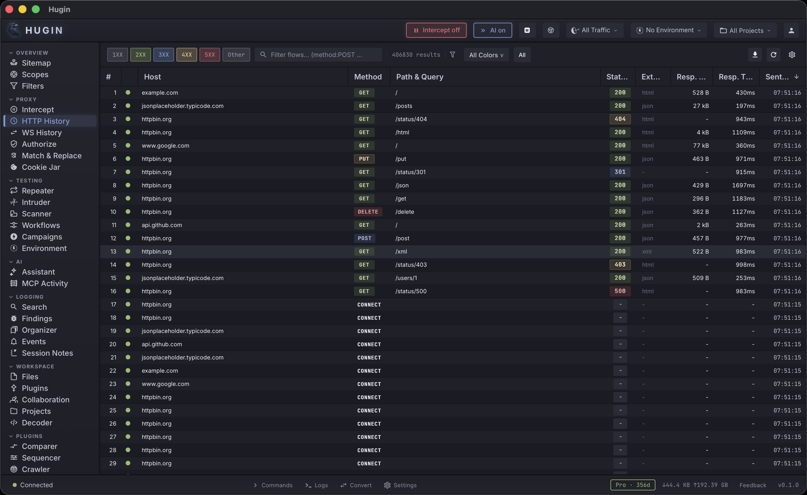
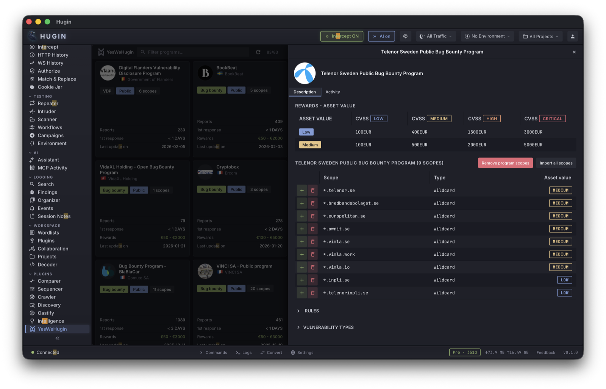

Hugin
Hugin is a security intercepting proxy for web application penetration testing. It captures, inspects, and modifies HTTP/HTTPS traffic between your browser and target applications.

Key Features
- Proxy – HTTP/1.1, HTTP/2, and WebSocket interception with automatic per-host TLS certificates
- Repeater – Replay and modify requests with timing analysis and comparison
- Intruder – Automated fuzzing with sniper, battering ram, pitchfork, and cluster bomb attack types
- Scanner – 41 active + 35 passive vulnerability checks, built-in
- Sequencer – Statistical analysis of session token randomness (entropy, FIPS, bit-level)
- Decoder – Encode/decode chains across 20+ formats (Base64, URL, hex, HTML, JWT, and more)
- Synaps – WASM-based vulnerability scanner with community module marketplace
- Nerve – Passive response intelligence: parameter discovery, technology fingerprinting
- RatRace – Race condition testing with single-packet, last-byte sync, and barrier modes
- Oastify – Out-of-band detection with DNS, HTTP, SMTP, LDAP, FTP, and SMB listeners
- Crawler – Recursive web crawler with headless browser support
- YesWeHugin – Native YesWeHack integration: browse programs, import scope, submit reports
- Lua Plugins – Extend Hugin with Lua 5.4 scripts for custom interception logic
- MCP Server – Claude Desktop and Claude Code integration via 135 MCP tools
- Desktop GUI – Native cross-platform desktop app (macOS, Linux, Windows)
- REST and GraphQL API – Full programmatic access to all features
Quick Start
Download the latest release for your platform from hugin.nu/download, then run:
hugin
The proxy starts automatically on 127.0.0.1:8080. Configure your browser to use that address as its HTTP/HTTPS proxy, trust the Hugin CA certificate, and you’re intercepting traffic.
See the Installation guide for all platforms.
Installation
Download
Download the latest release from hugin.nu/download or from GitHub Releases.
Every release includes .sha256 checksum files and .sig Ed25519 signatures.
macOS
Available for both Apple Silicon (aarch64) and Intel (x86_64):
- Desktop app:
.dmg– mount and drag to Applications - CLI binary:
.tar.gz– extract and copyhuginto a directory on your$PATH
Linux
Available for x86_64 and aarch64:
- Debian/Ubuntu:
.deb– install withsudo dpkg -i hugin-desktop-linux-x86_64.deb - Other distros:
.tar.gz– extract and copyhuginto/usr/local/bin/
Windows
Available for x86_64:
- Desktop + CLI:
.zip– extract and runhugin.exe
Verify a Download
Every release binary is Ed25519 signed. Verify with:
hugin verify hugin-desktop-darwin-aarch64.dmg
This checks the .sig file (expected at <file>.sig in the same directory) against the public key embedded in the binary.
Building from Source
Requirements: Rust 1.75+ (stable), SQLite development headers.
git clone https://github.com/HuginSecurity/Hugin.git
cd hugin
cargo build --release --bin hugin
The binary is at target/release/hugin. Copy it to a directory on your $PATH.
Linux builds additionally require:
# Debian / Ubuntu
sudo apt install libwebkit2gtk-4.1-dev libgtk-3-dev libayatana-appindicator3-dev
# Fedora
sudo dnf install webkit2gtk4.1-devel gtk3-devel libappindicator-gtk3-devel
# Arch
sudo pacman -S webkit2gtk-4.1 gtk3 libayatana-appindicator
Platform Notes
macOS – Gatekeeper
Hugin ships unsigned. If macOS shows “cannot be opened because the developer cannot be verified”:
- DMG: Right-click the app, select “Open”, then click “Open” in the dialog. Or:
xattr -d com.apple.quarantine /Applications/Hugin.app - CLI tarball: After extracting:
xattr -d com.apple.quarantine /usr/local/bin/hugin
Windows – SmartScreen
Windows may show “Windows protected your PC” for unsigned binaries. Click “More info”, then “Run anyway”.
Verify Installation
hugin --version
First Run
Starting Hugin
Run hugin with no arguments to launch the desktop GUI:
hugin
The proxy starts automatically on 127.0.0.1:8080 and the API server on 127.0.0.1:8081. On first run, Hugin generates a CA certificate and creates an empty project database.
CLI Mode
If you prefer to run Hugin without the GUI (headless servers, SSH sessions, CI pipelines):
# Start proxy + API in the foreground
hugin start
# Custom ports
hugin start --port 9090 --api-port 9091
# Start with MCP server for Claude integration
hugin start --mcp
# Verbose logging
hugin start -v
Press Ctrl+C to stop the proxy.
Headless Server Mode
For remote/team access, use serve which binds to 0.0.0.0 by default:
hugin serve
This requires token authentication. Create tokens with hugin token create.
Setup Wizard
On first launch, Hugin runs a setup wizard that walks through proxy port selection, CA certificate installation, and optional Pro license activation. You can re-run it any time:
hugin setup
For non-interactive environments:
hugin setup --headless
Data Directory
All Hugin data lives under ~/.config/hugin/:
~/.config/hugin/
config.toml Configuration file
Hugin-Proxy-CA.pem CA certificate (install in your browser/OS)
Hugin-Proxy-CA-key.pem CA private key (keep private)
hugin.db SQLite database (flows, findings, projects)
modules/ Synaps scanner modules (WASM)
extensions/ Lua plugin scripts
Generate a Default Config
If you want to customize settings before starting:
hugin init
This writes a default config.toml to ~/.config/hugin/config.toml. See Configuration for details.
Export the CA Certificate
To export the CA certificate to a specific location:
hugin ca --output ~/Desktop/hugin-ca.pem
Or print it to stdout:
hugin ca --print
The certificate is also downloadable from the API at http://127.0.0.1:8081/api/ca.pem while Hugin is running.
Browser Setup
Hugin intercepts HTTP/HTTPS traffic by acting as a proxy. You need to (1) point your browser at the proxy and (2) trust the Hugin CA certificate.
Quick Setup (Mullvad Browser)
Click the Mullvad Browser button in the Hugin toolbar. Hugin automatically:
- Creates a temporary Firefox profile with the proxy pre-configured
- Imports the Hugin CA certificate
- Disables certificate pinning, HSTS preload, and HTTPS-Only Mode
- Disables the Mullvad Browser Extension (which would override proxy settings)
- Launches the browser in an isolated profile
No manual configuration needed. Your normal Mullvad Browser profile is untouched.
Requirement: certutil must be installed (brew install nss on macOS).
Manual Setup
Step 1: Configure the Proxy
Set your browser to use 127.0.0.1 port 8080 as its HTTP and HTTPS proxy.
Firefox / Mullvad Browser
Settings > Network Settings > Manual Proxy Configuration:
- HTTP Proxy:
127.0.0.1, Port:8080 - Check “Also use this proxy for HTTPS”
Mullvad Browser – Extra Settings
Mullvad Browser requires additional about:config overrides:
security.enterprise_roots.enabled=truesecurity.cert_pinning.enforcement_level=0network.stricttransportsecurity.preloadlist=falsedom.security.https_only_mode=falsedom.security.https_only_mode_ever_enabled=falsedom.security.https_only_mode_pbm=falseextensions.torlauncher.start_tor=falseextensions.installDistroAddons=false
The Mullvad Browser Extension uses browser.proxy.onRequest to route all traffic through a SOCKS proxy, overriding your manual settings. Disable it via Add-ons > Extensions, or set extensions.installDistroAddons to false.
Mullvad Browser resets prefs.js on each startup. Use user.js in the profile directory for persistent settings.
Chrome / Chromium
Chrome uses system proxy settings. Alternatively, launch with a flag:
chromium --proxy-server="http://127.0.0.1:8080"
macOS System Proxy
System Settings > Network > (your adapter) > Advanced > Proxies:
- HTTP Proxy:
127.0.0.1:8080 - HTTPS Proxy:
127.0.0.1:8080
Step 2: Trust the CA Certificate
Hugin generates a CA certificate at ~/.config/hugin/Hugin-Proxy-CA.pem on first run. Your browser or OS must trust this certificate for HTTPS interception.
You can also download it from http://127.0.0.1:8081/api/ca.pem while Hugin is running.
macOS (System Keychain)
sudo security add-trusted-cert -d -r trustRoot \
-k /Library/Keychains/System.keychain \
~/.config/hugin/Hugin-Proxy-CA.pem
Linux (System-wide)
sudo cp ~/.config/hugin/Hugin-Proxy-CA.pem /usr/local/share/ca-certificates/hugin-ca.crt
sudo update-ca-certificates
Windows (Administrator)
certutil -addstore Root %USERPROFILE%\.config\hugin\Hugin-Proxy-CA.pem
Firefox (Manual Import)
Firefox uses its own certificate store, separate from the OS:
- Settings > Privacy & Security > Certificates > View Certificates
- Authorities tab > Import
- Select
~/.config/hugin/Hugin-Proxy-CA.pem - Check “Trust this CA to identify websites”
Or via command line with certutil (from NSS tools):
certutil -A -n "Hugin Proxy CA" -t "CT,C,C" \
-i ~/.config/hugin/Hugin-Proxy-CA.pem \
-d "sql:$(find ~/Library/Application\ Support/Firefox/Profiles -name '*.default-release' | head -1)"
Chrome on Linux
certutil -d sql:$HOME/.pki/nssdb -A -t "C,," -n "Hugin CA" \
-i ~/.config/hugin/Hugin-Proxy-CA.pem
Verifying the Setup
- Start Hugin
- Open the configured browser
- Visit any HTTPS site (e.g.,
https://httpbin.org/get) - Check the HTTP History tab in Hugin – you should see the request appear
- No certificate warnings should appear in the browser
If you see certificate errors:
- Verify the CA cert is imported and trusted
- For Mullvad Browser: confirm
security.cert_pinning.enforcement_level=0 - For HSTS-protected sites: confirm
network.stricttransportsecurity.preloadlist=false
Scope
By default, Hugin captures all traffic through the proxy. To limit capture to specific targets, configure scope in the Scopes view within the UI, or edit config.toml:
[scope]
include_hosts = ["*.example.com", "api.target.com"]
exclude_hosts = ["fonts.googleapis.com", "*.analytics.com"]
Mullvad VPN Compatibility
Hugin works alongside Mullvad VPN. Browser traffic routes through the Hugin proxy on localhost, then Hugin’s outbound connections go through the VPN tunnel. Enable split tunneling in the Mullvad app if you experience connectivity issues.
Configuration
Hugin stores its configuration at ~/.config/hugin/config.toml. Generate a default config with:
hugin init
View the current configuration:
hugin config show
Proxy
[proxy]
listen_addr = "127.0.0.1:8080" # Proxy listen address
api_addr = "127.0.0.1:8081" # API / MCP server address
upstream_proxy = "socks5://127.0.0.1:9050" # Route traffic through Tor, Burp, etc.
invisible_proxy = false # Transparent proxy mode (no browser config needed)
additional_ports = [8443] # Extra ports to listen on (legacy, binds 127.0.0.1)
additional_listeners = ["0.0.0.0:8082"] # Multi-interface listeners (mobile/remote)
CA Certificate
[ca]
cert_path = "~/.config/hugin/Hugin-Proxy-CA.pem"
key_path = "~/.config/hugin/Hugin-Proxy-CA-key.pem"
cache_size = 1000 # Per-host certificate cache size
Storage
[storage]
db_path = "~/.config/hugin/hugin.db"
max_body_size = 10485760 # Max response body stored per flow (10 MB)
Scope
[scope]
include_hosts = ["*.example.com"] # Only capture matching hosts (empty = all)
exclude_hosts = ["*.analytics.com"] # Never capture matching hosts
Scope can also be configured in the Scopes view within the desktop UI.
HTTP/2
[http2]
enabled = true
alpn_protocols = ["h2", "http/1.1"]
enable_server_push = true
max_concurrent_streams = 100
Force HTTP/1.1 for specific hosts:
[[http2.host_overrides]]
pattern = "legacy.example.com"
http_version = "ForceHttp11"
Oastify (Out-of-Band Detection)
[oastify]
enabled = false
base_url = "https://oastify.eu"
domain = "oastify.eu"
api_token = "your-token"
poll_interval_ms = 5000
session_ttl_hours = 24
API Authentication
[api]
auth_enabled = false
auth_username = "admin"
auth_password = "changeme"
auth_token = "bearer-token-here"
Enable authentication when exposing the API beyond localhost (e.g., with hugin serve).
Telemetry
[telemetry]
enabled = false # Opt-in anonymous usage telemetry
Toggle from the CLI:
hugin config telemetry on
hugin config telemetry off
Proxy
Hugin’s proxy is a full MITM (man-in-the-middle) HTTP and WebSocket proxy. It sits between your browser and the target application, decrypting TLS traffic, capturing every request and response, and feeding them to all other tools in real time.
Getting Started
- Start Hugin. The proxy listens on
127.0.0.1:8080by default. - Install the CA certificate (see below).
- Configure your browser to use
127.0.0.1:8080as its HTTP/HTTPS proxy. - Browse the target application. All traffic appears in the History view.
How It Works
For plain HTTP, the proxy captures requests and responses directly.
For HTTPS, the flow is:
- Your browser sends a CONNECT tunnel request for the target host.
- Hugin completes the TLS handshake with the browser using a dynamically generated certificate for that host.
- Hugin establishes a separate TLS connection to the upstream server.
- Every request and response is captured as an HTTP flow and stored in the database.
- The flow is broadcast to the UI, scanner, and any loaded plugins immediately.
HTTP/2 Support
HTTP/2 is enabled by default. The proxy negotiates the protocol via ALPN during the upstream TLS handshake. When the server speaks HTTP/2, Hugin uses a persistent connection pool keyed by host. Pseudo-headers (:method, :path, :authority, :scheme) are captured alongside regular headers so HTTP/2 flows are fully inspectable.
HTTP/2 can be disabled in configuration if a target misbehaves with it.
CA Certificate
On first launch, Hugin generates an RSA CA key pair and writes it to disk. You install the CA certificate once so your browser trusts the proxy’s per-host certificates.
Installation:
- macOS – double-click the certificate, add to Keychain, mark as “Always Trust”
- Firefox – Settings > Privacy & Security > Certificates > View Certificates > Import
- Chrome/Chromium – follows the OS trust store on macOS and Linux
The CA cert PEM is served at http://127.0.0.1:8081/api/ca.pem for easy download. You can also export it via the CLI:
hugin ca --print
hugin ca --output ~/ca.crt
Scope Filtering
Scope controls what gets captured and stored. Four modes are available:
- CaptureAll (default) – every flow is stored regardless of host
- InScopeOnly – only flows matching at least one include pattern are stored
- OutOfScopeOnly – flows matching exclude patterns are dropped before storage
- CaptureAllTagOOS – all flows are stored, but out-of-scope flows are tagged
Scope patterns can match on host, URL prefix, or regular expression. Scope is updated at runtime without restarting the proxy; changes take effect on the next request.
Out-of-scope traffic is always forwarded transparently – the browser still gets its responses, they just are not stored.
Upstream Proxy Chaining
Hugin can route traffic through an upstream proxy. Supported types:
- HTTP and HTTPS proxies
- SOCKS4 and SOCKS5 proxies
- Per-host routing rules with wildcard patterns and priority ordering
- Basic authentication for proxies that require credentials
- A built-in
torpreset routing throughsocks5://127.0.0.1:9050
Per-host rules are evaluated in priority order (higher numbers first). If no rule matches, Hugin falls back to the global proxy or connects directly.
WebSocket Detection
When the proxy sees an Upgrade: websocket request, it hands the connection to the WebSocket manager. The HTTP 101 handshake is recorded as a normal flow, and all subsequent frames are captured separately. See WebSocket for details.
Plugin and Extension Hooks
Every proxied flow passes through the plugin bus before being stored. Registered plugins can modify, flag, or drop requests and responses. Lua extensions can hook OnRequest and OnResponse to modify traffic in-flight.
Flow Recording
Flow recording can be paused and resumed without stopping the proxy. When paused, the proxy still forwards traffic but does not write flows to the database. This is useful when you want to reduce noise while performing a specific test.
Configuration
Proxy settings are stored in ~/.config/hugin/config.toml:
[proxy]
listen_addr = "127.0.0.1:8080"
[ca]
cert_path = "~/.config/hugin/Hugin-Proxy-CA.pem"
key_path = "~/.config/hugin/Hugin-Proxy-CA-key.pem"
[http2]
enabled = true
alpn_protocols = ["h2", "http/1.1"]
CLI
hugin start # Start proxy on default port
hugin start --port 9090 # Start on custom port
hugin start --bind 0.0.0.0 # Bind to all interfaces
hugin status # Show proxy status
hugin ca --print # Print CA certificate to stdout
MCP Tool
proxy_status – proxy infrastructure info.
Actions: health, status, ca_cert
scope – manage proxy scope.
Actions: get, set_mode, add_pattern, remove_pattern, update, export, import, save_preset, load_preset, list_presets, delete_preset, from_sitemap
Intercept
The Intercept view lets you observe, inspect, and modify HTTP traffic in real time as it flows through the proxy. It operates in three states controlled by two toolbar toggles.
Operating Modes
Intercept OFF (default)
Full passthrough. Nothing is captured or displayed in the intercept view. Traffic flows through the proxy silently and is recorded to history as normal.
Header pill: Intercept off (green).
Observe Mode (Intercept ON, Hold OFF)
Traffic flows through the proxy without interruption – the browser never stalls. Requests appear in the intercept view as a live feed (last 500, ring buffer). You can scroll through them and inspect details, but you cannot modify or block them since they have already been sent.
Use this when you want to watch traffic without interfering: mapping the application, understanding flows, looking for interesting endpoints.
The Clear button wipes the captured list.
Header pill: Intercept (green).
Hold Mode (Intercept ON, Hold ON)
Blocking mode. Every request that matches the intercept scope (and is not auto-handled by an Intercept Rule) is held in a queue. The browser stalls until you release the request.
Four action buttons appear:
- Forward – release the selected request as-is (or after editing in the detail pane)
- Forward All – release all queued requests at once
- Drop – discard the selected request; the browser gets an error
- Drop All – discard all queued requests
Click a request in the list to select it, inspect its full HTTP content in the detail pane below, edit headers or body, then click Forward to send the modified version.
Header pill: Hold (red).
Keyboard shortcuts: Ctrl+; forwards the selected request, Ctrl+D drops it.
Scope
Intercept only captures requests to hosts matching the configured scope patterns. Empty scope means capture everything. Scope is configured in the Scopes view and shared with the proxy.
Capture Options
Two checkboxes in the toolbar control what gets captured beyond standard requests:
- Responses – also intercept HTTP responses (hold mode only)
- WebSockets – also intercept WebSocket messages
When response interception is enabled, responses are held separately and can be individually forwarded, modified, or dropped.
Intercept Rules
The gear icon opens the Intercept Rules panel. Rules run before the observe/hold decision and can automatically forward, drop, modify, or flag requests without manual intervention. See Intercept Rules for the full reference.
MCP Tool
intercept – MITM intercept control.
Actions:
status– current state (enabled, hold, pending counts, recording status)toggle– set enabled/hold/intercept_responses/recordingrecording– toggle flow recording on or offlist– list pending requests (hold mode)get– get a specific pending requestforward– forward a held requestdrop– drop a held requestforward_all– forward all held requestsdrop_all– drop all held requestsresponses– list pending responsesresponse_get– get a specific pending responseresponse_forward– forward a held responseresponse_drop– drop a held responseresponses_forward_all– forward all held responsesresponses_drop_all– drop all held responses
API
Direct REST access for scripting:
GET /api/intercept/status
POST /api/intercept/toggle {"enabled": true, "hold": false}
GET /api/intercept/pending
GET /api/intercept/captured
POST /api/intercept/captured/clear
POST /api/intercept/{id}/forward
POST /api/intercept/{id}/drop
POST /api/intercept/forward-all
POST /api/intercept/drop-all
Repeater
Repeater lets you replay captured HTTP flows with arbitrary modifications. Change headers, body, method, URL, or redirect the request to a different server – all without touching your browser.
Workflow
- Right-click any flow in the History view and choose “Send to Repeater”, or use the MCP tool to send it programmatically.
- The flow appears in the Repeater tab.
- Edit headers, body, URL, or method in the editor panel.
- Click Send. The response appears immediately alongside the original.
- The exchange is recorded in repeater history and linked back to the original flow.
Request Modifications
Every send operation accepts modifications:
- headers_add – list of
[name, value]pairs appended to the request - headers_remove – list of header names to strip (case-insensitive)
- body – replaces the request body (UTF-8 string, raw bytes, or null to remove)
- url – replaces the URL; can be absolute (
https://other.host/path) or relative (/api/v2/users) - method – replaces the HTTP verb
- target_override – redirects the TCP connection to a different
host:portwhile keeping the original URL in the request line
When a URL is relative (no ://), Hugin merges it with the scheme and authority of the original URL. This lets you test path variations without retyping the full URL.
Browser-Routed Requests
Set browser_port to route the request through a running browser’s fetch() API. This gives the request a real browser TLS fingerprint (JA3/JA4), bypassing WAF bot detection systems like Akamai BMP, DataDome, and Cloudflare Bot Management.
Batch Send Modes
Send multiple requests in one operation with three concurrency modes:
- sequential (default) – send one at a time, wait for each response
- sync – fire all requests simultaneously from a synchronized barrier; useful for race condition testing
- parallel – concurrent with a configurable worker limit
Batch results include per-request status codes, latency, response size, and the new flow ID for each replay. Aggregate timing statistics (min, max, mean, stddev) are included when sending more than one request.
Raw Send
The raw_send action sends a single raw HTTP request via a direct socket connection with full TLS and SOCKS5 proxy support. Use batch_raw_send for parallel raw requests. The repeat action sends raw requests through the proxy so the flow is captured in history.
Queue Management
The queue is persistent and backed by SQLite. If you close Hugin and reopen it, pending requests survive.
- list – view all pending items with status (pending, in_progress, completed, failed)
- cancel – remove a specific item before it is sent
- clear – remove all pending items
History is capped at 1,000 entries. Older entries are pruned automatically.
History
Every completed send is recorded. History entries include:
- Original flow ID and new flow ID (the replayed pair)
- Method, URL, HTTP status code
- Latency in milliseconds
- Timestamp
MCP Tool
repeater – HTTP request repeater.
Actions: send, history, queue, queue_status, raw_send, batch_raw_send, repeat, repeat_flow, batch_send, list_queue, cancel, clear_queue, proxy_status, compare
API
POST /api/repeater/queue {"flow_id": "uuid", "modifications": {...}}
POST /api/repeater/send {"id": "uuid-of-queued-item"}
POST /api/repeater/batch {"items": [...], "mode": "sync"}
GET /api/repeater/history?limit=50
Intruder
Intruder is Hugin’s automated attack engine. Mark positions in a request with injection markers (§name§), choose payload generators and processors, and Intruder fires every payload through those positions while recording response status codes, lengths, timing, and pattern matches.
Quick Start
- Capture a request in the proxy.
- Send it to Intruder.
- Mark injection points by wrapping values with
§markers:/api/users/§id§. - Configure payload generators for each position.
- Start the attack.
- Review results, filtering by status code, response length, or timing anomalies.
Payload Generators (19 types)
Each generator produces a lazy iterator of strings. Generators do not materialize the full list in memory unless required.
SimpleList – a fixed list of strings you provide inline. The most common generator for custom wordlists.
Numbers – a numeric range with step. Supports zero-padded formatting ({:04}) and negative steps for descending ranges. Example: start=1, end=100, step=1 produces 1 through 100.
BruteForcer – all permutations of a character set between a minimum and maximum length. Built-in charsets: lowercase, uppercase, digits, alphanumeric, hex. Maximum string length is capped at 12; maximum total payloads is 1,000,000.
Dates – a date range with a strftime format string. Useful for brute-forcing date-based tokens or IDs. Example: start=2024-01-01, end=2024-12-31, format=%Y%m%d.
CharacterSubstitution – generates all combinations of a base string where specific characters are replaced by alternatives. Includes a built-in leet-speak rule set (a->4/@, e->3, etc.) or define your own substitution map.
CharFrobber – applies character manipulations to a base string: toggle case per-character, toggle entire string, increment/decrement character codes, reverse, shift by offset. Produces the original plus all derived variants.
BitFlipper – flips bits in a base value systematically. Five modes: SingleBit (one bit at a time), SingleByte (XOR each byte with 0xFF), BitPairs (flip consecutive bit pairs), BytePairs (flip consecutive byte pairs), Nibble (flip each 4-bit nibble).
NullPayloads – emits N copies of an empty string, or a fixed set of 14 null-like values (null, NULL, nil, None, undefined, NaN, 0, -1, false, \0, \x00, %00, {{null}}, and empty string).
UsernameGenerator – generates username variations from first/last name pairs. Patterns: first.last, first_last, flast, firstl, first, last, first.last1..99. Includes a CommonNames pattern that emits 25 common admin/system usernames.
RuntimeFile – reads payloads line by line from a file at attack time. Blank lines and comment lines (starting with #) are skipped. Validates the file path against an optional base directory to prevent path traversal.
ExtensionGenerated – a custom generator backed by a Lua extension closure. Lets extensions inject dynamic payload sequences at runtime.
CharacterBlocks – generates strings of a single character repeated at varying lengths. Useful for buffer overflow testing and length-based fuzzing. Configurable character, min/max length, and step.
CustomIterator – generates combinations from multiple word lists joined by a separator. Useful for producing structured strings like admin-dev-01, admin-staging-02.
IllegalUnicode – generates illegal and malformed Unicode sequences for testing parser robustness. Categories include overlong UTF-8, surrogate pairs, BOM variations, and null bytes. Output is percent-encoded for safe transport.
CaseVariant – generates case variations of base words: uppercase, lowercase, proper case, inverted case. Deduplicates results since different modes may produce identical output for certain inputs.
OastifyPayloads – generates out-of-band (OOB) callback payloads using the built-in Oastify system. Each payload contains a unique correlation ID for tracking interactions. Supports DNS, HTTP, HTTPS, SMTP, LDAP, FTP, and SMB protocols.
EcbBlockShuffler – rearranges ciphertext blocks to test ECB-mode encryption vulnerabilities. Operations include removing blocks, duplicating blocks, swapping pairs, reversing order, and generating all permutations. Supports hex and base64 encoded ciphertext with 8-byte (DES) or 16-byte (AES) block sizes.
CopyOtherPayload – copies the payload from another position. Resolved during generation; used when two positions must receive the same value.
PayloadSet Combination Modes
When an attack uses multiple payload positions, generators are combined:
- concat – all payloads from generator 1, then all from generator 2 (serial)
- zip – pairs payloads position by position; stops when the shortest generator is exhausted
- product – Cartesian product of all generators (every combination). Capped at 10,000,000 total combinations.
Payload Processors (15 types)
Processors transform each payload before injection. Chain multiple processors to build complex transformations.
- AddPrefix / AddSuffix – prepend or append a fixed string
- MatchReplace – regex or literal find/replace within the payload
- UrlEncode / UrlDecode – percent encoding; configurable to encode all characters or only special ones
- HtmlEncode / HtmlDecode – HTML entity encoding
- Base64Encode / Base64Decode – standard Base64
- Hash – hash the payload with MD5, SHA-1, SHA-256, or SHA-512
- CaseModification – uppercase, lowercase, or toggle case
- Substring – extract a substring by start and optional end index
- ReverseString – reverse the payload
- SkipIfMatch – drop the payload entirely if it matches a pattern (filter)
- InvokeExtension – pass the payload to a Lua extension function for arbitrary transformation
Response Analysis: Grep Match
Attach grep matchers to flag responses containing (or missing) specific content:
- Contains – substring match, optionally case-sensitive
- NotContains – inverse match
- Regex – regular expression match with a 1 MB size limit to prevent ReDoS
Match results include the patterns that fired and byte offsets within the response body.
Response Analysis: Grep Extract
Extractors pull values out of responses:
- from_regex(name, pattern, group) – captures a named group from each response
- from_delimiters(name, start, end) – extracts content between two delimiter strings
Extracted values are stored per-result and visible in the results table.
Result Filtering and Sorting
Results can be filtered by:
- Exact status code or status code range (e.g.,
2xx) - Response length (min, max)
- Response time (min, max)
- Whether a grep match fired
- Whether a specific key was extracted
- Errors only or exclude errors
Results are sortable by payload, request ID, status code, response length, or response time.
Grep Local
The grep_local action provides fast Rust-native regex searching across attack results. Supports filters for status codes, response time ranges, length ranges, field selection (body, headers, status), and result inversion.
Resource Pool
Each attack runs with a configurable concurrency limit controlling how many requests are in-flight simultaneously. Rate limiting is enforced between requests. Attacks can be paused and resumed.
CSV Export
Any result set can be exported to CSV. The export includes request ID, payload, status code, response length, response time, grep match flag, matched patterns, extracted values, and error message.
MCP Tool
intruder – attack automation engine.
Actions: start, run (standalone, no proxy required), list, get, status, pause, resume, cancel, delete, results, grep_local, grep_data, processing, export
The run action executes an attack inline and returns results directly – useful for quick one-off fuzzing from MCP without managing attack state.
API
POST /api/intruder/attacks Start a new attack
GET /api/intruder/attacks List all attacks
GET /api/intruder/attacks/{id} Get attack details
GET /api/intruder/attacks/{id}/results Get results
POST /api/intruder/attacks/{id}/pause Pause
POST /api/intruder/attacks/{id}/resume Resume
POST /api/intruder/attacks/{id}/cancel Cancel
Sequencer
Sequencer analyzes the statistical quality of tokens – session IDs, CSRF tokens, password-reset links, API keys, or any value an application generates. It tells you whether the tokens are cryptographically random or follow a pattern that an attacker could predict.
Quick Start
- Identify a token you want to analyze (session cookie, CSRF token, etc.).
- Start a capture session targeting that token, or paste a list of collected tokens.
- Collect at least 100 tokens (2,500+ bytes for FIPS tests).
- Run the analysis.
- Review the quality grade and individual test results.
Analysis Pipeline
Shannon Entropy
Entropy is calculated in bits per byte over the byte distribution of all tokens concatenated. A perfect random byte sequence scores 8.0 bits. Printable ASCII strings are bounded by the character set – a hex-only token tops out around 4.0 bits (16 symbols). Entropy below 4.0 bits is a strong signal of poor randomness.
Bit-Level Analysis
Each of the 8 bit positions (0-7) is analyzed independently. For each position, Sequencer calculates the probability it is set to 1 across all token bytes. An ideal random generator produces 0.5 for every position. Any position more than 5% away from 0.5 is flagged as biased. Common findings: ASCII bit 7 is always 0 for printable strings; base64 tokens constrain multiple bit positions.
FIPS 140-2 Tests
All four FIPS 140-2 statistical randomness tests are implemented. These require at least 2,500 bytes (20,000 bits) of token data – collect enough samples before interpreting FIPS results.
Monobit Test – counts the number of 1 bits in a 20,000-bit sample. Must fall between 9,725 and 10,275.
Poker Test – divides bits into 5,000 four-bit segments and applies a chi-square test over the 16 possible patterns. Statistic X must be between 2.16 and 46.17.
Runs Test – counts consecutive runs of 0s and 1s in six length categories (1 through 6+). Each category must fall within bounds derived from the FIPS standard.
Long Runs Test – no run of consecutive identical bits may exceed 25 bits. Tokens with long static prefixes commonly fail here.
All four tests must pass for overall_pass to be true.
Pattern Detection
Sequencer scans the token list for structural patterns:
- Common prefix – all tokens share a leading substring of 2+ characters. Prefixes longer than 4 characters are rated High severity.
- Common suffix – same analysis for trailing substrings.
- Sequential – tokens parse as integers forming an arithmetic sequence. Rated Critical.
- Repeating – tokens that appear more than once. More than half being duplicates is Critical.
- Charset restriction – all tokens use only one character class (lowercase, uppercase, digits, hex). Hex-only is informational; other single-class restriction is Medium.
Correlation Analysis
When 100+ bytes of data are available, Sequencer calculates the serial correlation coefficient and auto-correlation at up to 20 lags. A coefficient above 0.1 indicates statistically significant correlation. Correlation above 0.3 reduces the quality score significantly.
Quality Grades
The analysis produces a single quality grade backed by a numeric score (0-100):
- Excellent (>= 85) – suitable for cryptographic use
- Good (>= 65) – passes all standard tests
- Fair (>= 45) – minor concerns
- Poor (>= 25) – not suitable for security purposes
- Critical (< 25) – highly predictable
Scoring deductions: low entropy (-10 to -40), failed FIPS tests (-30 for overall fail, up to -15 for individual), significant correlation (-20), detected patterns (-8 to -25 depending on severity), biased bit positions (-10 to -20).
Capture Modes
Tokens can reach Sequencer in two ways:
- Live capture – start a capture session that sends repeated requests and extracts the target token from each response automatically.
- Manual paste – paste a list of tokens directly or submit them via the API.
Comparing Token Sets
The compare action lets you compare two sets of tokens side by side – useful for checking whether a fix improved randomness quality or whether tokens from different endpoints share weaknesses.
Output
The analysis report includes:
- Quality grade and numeric score
- Entropy value in bits
- Bit-position analysis showing bias per position
- FIPS test results with pass/fail, computed value, and expected threshold range
- Correlation coefficient and auto-correlation values
- Detected pattern list with severity, type, and confidence
- Entropy distribution chart (ASCII visualization per 64-byte block)
MCP Tool
sequencer – token randomness analysis.
Actions:
capture– start collecting tokens from repeated requeststokens– poll collected tokens from an active sessionstop– stop captureanalyze– run statistical analysis on collected tokenslist– list active sessionsdelete– remove a sessionstatus– get session status with all tokenscompare– compare two token setsexport– export session with full analysis report
Decoder
Decoder is a multi-format encode/decode/hash/transform workbench with a built-in polyglot payload library. Paste a value, pick an operation, get the result. All operations are stateless – nothing is stored or logged.
Encode Operations
- base64 – standard Base64 with
=padding - url – percent encoding
- html – HTML entity encoding (
<to<, etc.) - unicode – Unicode escape sequences (
Ato\u0041) - hex – lowercase hex encoding of UTF-8 bytes
- base32 – RFC 4648 Base32 with
=padding - ascii85 – Adobe/PostScript Ascii85 encoding
- rot13 – Caesar cipher with 13-character rotation (symmetric: encode = decode)
- binary – space-separated 8-bit binary representation per byte
- octal – space-separated 3-digit octal representation per byte
- gzip – gzip-compress the input, return Base64 of the compressed bytes
- deflate – DEFLATE-compress the input, return Base64 of the compressed bytes
- jwt_none – encode a JWT with
alg: noneand no signature
Decode Operations
All encode operations have a corresponding decode operation. Additional notes:
gzipanddeflateexpect Base64-encoded compressed data on inputbinaryexpects space-separated 8-bit groupsoctalexpects space-separated 3-digit groupsunicodereplaces\uXXXXsequences with their code pointshexstrips spaces before parsingjwtdecodes a JWT token (see JWT Decode below)
Hash Algorithms
Hashing is one-way and returns a lowercase hex digest.
- md5 – MD5 (128-bit)
- sha1 – SHA-1 (160-bit)
- sha256 – SHA-256
- sha512 – SHA-512
- sha3_256 – SHA-3 256-bit
- sha3_512 – SHA-3 512-bit
- blake2b – BLAKE2b
- blake2s – BLAKE2s
- ripemd160 – RIPEMD-160
- crc32 – CRC-32 (non-cryptographic; useful for checksum verification)
Transform Operations
Transforms manipulate text without encoding or decoding:
- lowercase / uppercase – case conversion
- reverse – reverse character order
- length – return the byte count
- trim – remove leading and trailing whitespace
- remove_whitespace – remove all whitespace characters
- remove_newlines – remove
\nand\rcharacters
JWT Decode
Splits a JWT at the . delimiters, Base64url-decodes the header and payload, and returns them as parsed JSON alongside the raw signature.
JWT Forge
Constructs a new JWT from arbitrary header and payload JSON objects.
- none – no signature; produces
header.payload.with empty signature - hs256 – HMAC-SHA256 with a provided secret key
The forged token is ready to paste into Repeater or an Intruder payload list.
Convert (3-Column Layout)
The Transform tab uses a Caido-style 3-column Convert layout:
- Start — editable textarea for input text. Copy button + byte count in header.
- Chain — vertical stack of transform selects. Each step has a dropdown (45 operations in 12 categories) and an X button to remove. “+ Add” appends a new step, “Clear” resets to a single Base64 Encode.
- End — read-only textarea showing the live conversion result. Copy button, swap button (feeds output back as input), byte count.
Conversion is live — the output updates instantly as you type or change the chain. All 45 operations from the Encode/Decode/Hash/Transform sections are available in the chain dropdowns, grouped by category.
Chained Operations
The chain action applies a sequence of operations in order, passing the output of each step as the input to the next.
Operations are specified as strings with an optional prefix:
encode:base64– explicitly encodedecode:url– explicitly decodebase64– defaults to encode when no prefix is given
Each step is recorded in the response so you can see the intermediate value at every stage.
Example chain: ["decode:base64", "decode:url", "encode:html"]
Auto-Analysis
The analyze action inspects an unknown value and returns a confidence-ranked list of detected encodings:
- Base64 (0.9 confidence) – length divisible by 4, valid character set
- URL encoding (0.95) – presence of
%XXsequences - HTML entities (0.9) – presence of
&,<, or&# - Hex (0.7) – all hex-valid characters, even length
- Unicode escapes (0.95) – presence of
\uXXXXpatterns - JWT (0.95) – three dot-separated Base64url segments
- Base32 (0.6) – characters in
[A-Z2-7=]
Also returns input length and Shannon entropy to help distinguish encoded data from random noise.
Re-encode Conversion
The reencode action takes a value and attempts all pairwise conversions between base64, url, html, hex, and unicode. Returns every successful from -> to conversion path with intermediate decoded values.
Polyglot Payloads
The polyglot action generates WAF bypass payloads from a library of 622 payloads across 66 vulnerability contexts:
XSS, SQLi, NoSQL injection, command injection, SSTI, XXE, SSRF, path traversal, LFI, RFI, LDAP injection, CRLF injection, open redirect, prototype pollution, deserialization, GraphQL injection, Log4j/Log4Shell, CSV injection, HTTP request smuggling, host header injection, CORS bypass, JWT attacks, file upload bypass, LLM/prompt injection, XPath injection, OAuth abuse, race conditions, email header injection, API abuse, and error disclosure.
Optional filters:
- context – filter by vulnerability type (e.g.,
xss,sqli) - waf – apply WAF-specific evasion transformations (cloudflare, akamai, aws, modsecurity, imperva, f5, barracuda)
- limit – maximum number of payloads to return (default 100)
MCP Tool
decoder – encode, decode, hash, transform, and generate payloads.
Actions: encode, decode, chain, analyze, reencode, jwt_decode, jwt_forge, polyglot, operations
smart_decode – auto-detect and decode encoding chains layer by layer.
Actions: detect, auto_decode, detect_and_decode, encodings
Comparer
Comparer measures the difference between two HTTP responses. It is the foundation for differential testing – detecting blind SQL injection, blind XSS, and other vulnerabilities where the application produces subtly different output depending on the injected value.
How It Works
Comparer uses the Gestalt Pattern Matching algorithm to compute a similarity ratio between 0.0 (completely different) and 1.0 (identical). It operates on response body text after applying normalization options.
Beyond the similarity ratio, Comparer identifies specific differences and categorizes them:
- StatusCode – the HTTP status codes differ
- Header(name) – a specific header value differs
- Body(offset) – a difference at an approximate character position in the body
- BodyLength – the bodies differ only in length
- ResponseTime – response times differ beyond a configurable threshold
Each difference has a type: Added, Removed, Changed, or LengthChange.
Comparison Options
- normalize_whitespace (default: true) – collapse whitespace before comparison; reduces noise from reformatted responses
- ignore_case (default: false) – case-insensitive comparison
- excluded_headers – headers excluded from comparison; by default:
date,set-cookie,x-request-id,x-correlation-id,x-trace-id,etag,last-modified,age,expires - compare_timing (default: false) – include response time in the diff
- timing_threshold_ms (default: 1000) – timing differences below this value are not flagged
Input Formats
Both left and right sides accept either:
- A flow ID – Comparer fetches the stored response from the database
- Raw HTTP response text – paste the full response including status line, headers, and body
You can mix the two: compare a stored flow against a freshly-pasted response.
Blind Injection Detection
The blind_detect action takes three responses: a baseline, a “true condition” response, and a “false condition” response. It computes:
- true_similarity – how similar the true response is to the baseline
- false_similarity – how similar the false response is to the baseline
- similarity_gap – the difference between the two scores
If the gap is large enough (true response very similar to baseline, false response noticeably different), is_vulnerable is set to true along with a confidence score.
Typical blind SQLi workflow
- Capture the baseline response to a normal request.
- Send a true-condition payload (e.g.,
AND 1=1) and capture that response. - Send a false-condition payload (e.g.,
AND 1=2) and capture that response. - Submit all three flow IDs to
blind_detect. - If
is_vulnerable: true, Comparer has measured a statistically significant difference.
Similarity Score
The similarity ratio answers: what fraction of the content is shared between the two responses? A score of 1.0 means identical after normalization. A score of 0.0 means nothing is shared.
For blind injection testing, the relevant threshold is not the absolute values but the gap between the true and false conditions. The baseline anchors the comparison.
Lightweight Similarity
The similarity action accepts two flow IDs and returns only the similarity ratio without the full difference list. Use this when comparing large numbers of responses quickly and only the score matters.
MCP Tool
comparer – response comparison for blind vulnerability detection.
Actions:
compare– compare two responses by flow_id or raw contentblind_detect– detect blind SQLi/XSS by comparing baseline/true/false responsessimilarity– calculate similarity score between two flows
API
POST /api/comparer/compare
{
"left_flow_id": "uuid",
"right_flow_id": "uuid",
"options": {"normalize_whitespace": true, "ignore_case": false}
}
POST /api/comparer/blind-detect
{
"baseline_flow_id": "uuid",
"true_flow_id": "uuid",
"false_flow_id": "uuid"
}
GET /api/comparer/similarity?left=uuid&right=uuid
Findings
Findings is Hugin’s centralized vulnerability repository. Every security issue discovered during a test – whether by the built-in scanner, a Synaps module, a passive check, or manual analysis – ends up here. The Findings tab provides a unified view for triaging, annotating, exporting, and tracking vulnerabilities across an engagement.
Creating Findings
Findings enter the repository through three paths:
Scanner-generated – The built-in scanner and Synaps modules create findings automatically when a check detects a vulnerability. These include the exact probe request/response, the insertion point, the payload used, and the CWE classification.
Send to Findings – Right-click any flow in the HTTP History view and choose “Send to Findings”. A dialog opens with the target URL pre-populated from the flow. Fill in the title, severity, and description, then save.
Manual creation – Open the Findings tab and click “New Finding” to create a finding from scratch. This is useful for issues discovered through manual testing that do not correspond to a single captured flow.
Finding Fields
Every finding has the following fields:
- title – short description of the vulnerability
- target_url – the affected URL; auto-populated from the flow for scanner findings, manual input for hunter findings
- severity – Critical, High, Medium, Low, or Info
- confidence – Certain, Firm, or Tentative; indicates how reliable the detection is
- status – current state in the triage workflow (see below)
- source – Scanner, Manual, Plugin, or Passive; indicates how the finding was created
- cwe – CWE identifier (e.g., CWE-89 for SQL Injection); auto-set by scanner checks
- check_id – internal identifier of the check that produced the finding
- insertion_point – where the payload was injected (query parameter, header, cookie, body field, URL path)
- evidence – free-text field for notes, screenshots, or exploit details
- remediation – recommended fix
- references – links to relevant advisories, CVEs, or documentation
- notes – internal notes for the tester (not included in exports by default)
- tags – arbitrary labels for organization and filtering
Evidence Flows
Findings can have multiple HTTP flows attached as evidence. Each attached flow shows the full request and response inline, so you can review the exact traffic that demonstrates the vulnerability without switching tabs.
Scanner-generated findings automatically attach the probe flow – the modified request that triggered the detection – alongside the original baseline flow. You can attach additional flows manually to build a complete evidence chain (e.g., a setup request, the exploit, and the impact confirmation).
Probe Data
For scanner-generated findings, the probe data section shows:
- The exact request sent by the scanner (with the injected payload highlighted)
- The response received
- The detection rationale (e.g., “time-based: baseline 45ms, payload response 5,230ms” or “error pattern matched:
You have an error in your SQL syntax”) - The insertion point and original parameter value
This data is preserved with the finding and survives project export/import.
Status Workflow
Findings follow a 9-state workflow:
Open --> Triaged --> Confirmed --> Reported --> Accepted --> Resolved
| |
+--> False Positive +--> Duplicate
| |
+--> Won't Fix -------+
- Open – newly created, not yet reviewed
- Triaged – reviewed by the tester, awaiting confirmation
- Confirmed – vulnerability verified, ready for reporting
- Reported – sent to the program or client
- Accepted – acknowledged by the receiving party
- Resolved – fix deployed and verified
- Duplicate – same issue already reported
- Won’t Fix – accepted risk, will not be remediated
- False Positive – detection was incorrect
Additionally, two boolean toggles provide quick classification:
- False positive – marks the finding as a false detection without changing the status
- Verified – confirms the finding has been manually verified
Filtering and Search
The Findings tab provides multiple filtering mechanisms:
- Severity pills – click Critical, High, Medium, Low, or Info to filter by severity
- Status pills – filter by workflow state (Open, Confirmed, Reported, etc.)
- Source pills – filter by origin (Scanner, Manual, Plugin, Passive)
- Search – free-text search across title, URL, evidence, and notes
- Tags – filter by one or more tags
Filters combine with AND logic. Clicking a severity pill while a status filter is active shows only findings matching both criteria.
Tags
Add tags to findings for custom organization. Common patterns include tagging by target component (api, auth, admin), by engagement phase (recon, exploitation), or by report section (critical-path, appendix).
Tags are managed per-finding:
- Add a tag by typing in the tag input and pressing Enter
- Remove a tag by clicking the X on the tag pill
- Filter the findings list by clicking any tag in the sidebar
Export
Export all findings (or a filtered subset) as JSON for reporting, archival, or import into other tools.
findings action:"export"
The export includes all finding fields, attached flow IDs, probe data, tags, and status history. Evidence flows are referenced by ID; the flows themselves are part of the project export.
MCP Tool
The findings MCP tool provides full programmatic access to the findings repository.
findings action:"list"
Key actions:
list– list all findings with optional filters (severity, status, source, search)get– get full details for a specific finding by IDcreate– create a new finding manuallyupdate– modify finding fields (title, severity, status, evidence, etc.)delete– remove a findingtoggle_false_positive– toggle the false positive flagtoggle_verified– toggle the verified flagadd_tag– add a tag to a findingremove_tag– remove a tag from a findingexport– export findings as JSONattach_flow– attach an evidence flow to a findingdetach_flow– remove an evidence flow from a finding
Example – list all High and Critical findings that are confirmed:
findings action:"list" severity:"high,critical" status:"confirmed"
Example – create a manual finding:
findings action:"create" title:"Reflected XSS in search parameter" target_url:"https://example.com/search?q=test" severity:"high" confidence:"certain" cwe:"CWE-79" evidence:"The q parameter reflects unencoded input in the response body."
Example – update status to Reported:
findings action:"update" id:"<uuid>" status:"reported"
API
GET /api/findings List findings (query params: severity, status, source, search, limit, offset)
GET /api/findings/:id Get finding details
POST /api/findings Create finding
PUT /api/findings/:id Update finding
DELETE /api/findings/:id Delete finding
POST /api/findings/:id/flows Attach evidence flow
DELETE /api/findings/:id/flows/:flow_id Detach evidence flow
POST /api/findings/export Export findings as JSON
Match and Replace
Match and Replace rules transform HTTP traffic as it flows through the proxy. Each rule is evaluated against every request or response in real time before the flow is stored or forwarded. Use this for quick, pattern-based modifications – stripping headers, injecting values, or rewriting URLs on the fly.
Rule Structure
Every rule has:
- name – a label shown in the UI and logs
- enabled – toggle the rule on or off without deleting it
- target – which part of the traffic to match against
- pattern – the string or regular expression to find
- replacement – what to put in place of the match; empty string removes the matched content
- is_regex – if true, pattern is compiled as a regular expression and replacement may use capture group references (
$1,$2, etc.)
Rules are applied in order. If a rule matches and modifies traffic, subsequent rules still run and may match on already-modified content.
Match Targets
Request targets (applied before the request is forwarded to the server):
- request_header {name} – matches the value of a specific request header (case-insensitive lookup). Only the value is modified, not the header name.
- request_body – matches the raw request body as UTF-8 text. Binary bodies are skipped.
- request_url – matches the full request URL string.
- request_first_line – matches the entire HTTP request line (method, path, version).
Response targets (applied before the response is forwarded to the browser):
- response_header {name} – matches the value of a specific response header.
- response_body – matches the response body as UTF-8 text.
- response_first_line – matches the HTTP response status line.
Additional operations available in Quick Rules:
- Add request header – inject a new header into outgoing requests
- Remove request header – strip a header from outgoing requests
- Add response header – inject a header into incoming responses
- Remove response header – strip a header from incoming responses
Literal vs Regex
With is_regex: false, the pattern is a literal string and every occurrence is replaced.
With is_regex: true, the pattern is compiled as a regular expression. All matches are replaced (equivalent to replace_all). If the regex is invalid, the rule is silently skipped.
Quick Rules vs Advanced Rules
The Match and Replace view has two tabs:
Quick Rules – a flat, inline-editable table in the style of Burp’s Match and Replace panel. Each row is a single match/replace pair with a target type, pattern, replacement, and regex toggle. Best for simple modifications.
Advanced Rules – full Intercept Rules with complex condition logic, multiple conditions per rule, and multi-action support. See Intercept Rules for the full reference.
Practical Examples
Strip the Authorization header from all requests (test unauthenticated behavior):
{
"target": "request_header",
"name": "Authorization",
"pattern": ".*",
"replacement": "",
"is_regex": true
}
Replace a CORS origin:
{
"target": "request_header",
"name": "Origin",
"pattern": "https://attacker.com",
"replacement": "https://trusted.example.com",
"is_regex": false
}
Remove Content Security Policy from responses:
{
"target": "response_header",
"name": "Content-Security-Policy",
"pattern": ".*",
"replacement": "",
"is_regex": true
}
Rewrite API version in URLs:
{
"target": "request_url",
"pattern": "/api/v1/",
"replacement": "/api/v2/",
"is_regex": false
}
Integration with the Plugin Bus
Match and Replace is implemented as a plugin in the proxy pipeline. On each request, the plugin iterates all enabled request-targeting rules. On each response, it iterates response-targeting rules. Rules are loaded from the store on startup and can be updated at runtime without restarting the proxy.
API
GET /api/match-replace/rules
POST /api/match-replace/rules Create a rule
PUT /api/match-replace/rules/{id} Update a rule
DELETE /api/match-replace/rules/{id} Delete a rule
POST /api/match-replace/rules/{id}/toggle Enable/disable
Session Rules
Session Rules automate token management across testing sessions. Instead of manually updating Authorization headers or cookies every time a session expires, you define rules that extract tokens from responses and inject them into subsequent requests automatically.
The Problem
Penetration tests often last hours. Session tokens expire. Every time you need to re-authenticate, you interrupt your workflow. Session Rules solve this by detecting expiration, triggering a re-authentication macro, and propagating new tokens forward without manual intervention.
Rule Structure
Each session rule contains:
- name – a label for the rule
- scope – a scope pattern limiting which URLs this rule applies to (host wildcard, URL prefix, or regex)
- validation – optional configuration for detecting invalid sessions
- reauth_macro – optional UUID of a macro to execute when the session expires
- token_updates – list of extraction + injection pairs (where to find the token, where to put it)
- enabled / priority – toggle and ordering; higher priority rules are evaluated first
Detecting Session Expiry
Validation checks detect when a session is no longer valid:
- StatusCode – response status is in a given list (e.g.,
[401, 403]); the most common check - ResponseContains – response body contains a string (e.g.,
"session expired") - ResponseNotContains – response body no longer contains an expected string (e.g.,
"authenticated") - HeaderContains – a specific header contains a pattern
- Regex – a regex matches the response
One check type is active per rule.
Token Sources
Where to extract a token from the response:
- ResponseBody(regex) – regex with one capture group; the captured group is the token
- ResponseHeader(header_name, regex) – token extracted from a response header using a regex
- Cookie(cookie_name) – token is the value of a
Set-Cookieheader with the given name
Token Targets
Where to inject the extracted token into subsequent requests:
- RequestHeader(header_name) – sets the value of the named request header
- Cookie(cookie_name) – sets the value of the named cookie in the Cookie header
- QueryParam(param_name) – sets the value of a URL query parameter
Built-in Presets
Four preset rules cover the most common patterns:
JWT Bearer auth – detects 401/403 as invalid, extracts access_token from JSON response body, injects into Authorization header as Bearer <token>.
Cookie-based session – detects 302/401/403, extracts the named cookie from Set-Cookie, injects into Cookie header.
CSRF token – extracts the CSRF token from a hidden input field (<input name="_csrf" value="...">), injects into the named request header.
OAuth2 refresh – detects 401, triggers the macro to get a new access token, extracts both access_token and refresh_token from the response body.
How It Works
The session plugin hooks into the proxy pipeline:
- On response – extracts tokens from every matching response and caches them in memory. If a response indicates session expiry, the plugin flags the macro for execution.
- On request – if cached tokens exist, injects them into outgoing requests matching the rule scope.
Both auto-extract and auto-inject are enabled by default and can be disabled independently.
Cached tokens are held in a thread-safe map keyed by token name. Each new extraction overwrites the previous value, so token rotation is handled transparently.
Configuration Example
{
"rules": [
{
"name": "API Auth",
"scope": {"pattern": "*.api.example.com", "target": "host"},
"validation": {
"check_type": {"type": "StatusCode", "value": [401]}
},
"reauth_macro": "uuid-of-login-macro",
"token_updates": [
{
"token_name": "access_token",
"source": {"type": "ResponseBody", "regex": "\"access_token\":\"([^\"]+)\""},
"target": {"type": "RequestHeader", "name": "Authorization"}
}
],
"enabled": true,
"priority": 100
}
],
"auto_extract": true,
"auto_inject": true
}
MCP Tool
session – session and authentication management.
Actions:
tokens– list currently cached tokensstatus– session manager statuslist_macros– list login macroscreate_macro– create a new login macroget_macro– get a specific macrodelete_macro– remove a macroexecute_macro– run a macro manuallyrefresh– force token refresh
Intercept Rules
Intercept Rules is an automated traffic processing engine. Whereas the manual intercept queue requires you to be watching, Intercept Rules evaluate every flow silently in the background and apply actions automatically: forwarding, dropping, modifying headers, flagging for review, or queuing for manual inspection.
Rule Structure
Each rule has:
- name / description – labels for the UI and export
- enabled – toggle without deleting
- priority – higher values run first; rules are evaluated in priority order
- group – optional string for organizing rules into named profiles
- conditions – list of conditions to evaluate
- condition_logic –
And(all must match) orOr(any must match) - action – what to do when conditions are satisfied
- apply_to –
Request,Response, orBoth
Conditions
Each condition specifies:
- field – what to inspect
- operator – how to compare
- value – the comparison value
- case_sensitive (default: false)
- negate – if true, the condition is satisfied when the match fails (NOT logic)
Match Fields
- Host – the request hostname
- Path – the URL path component
- Url – the full URL
- Method – HTTP method (GET, POST, etc.)
- StatusCode – response status code (as string)
- Header(name) – value of a named header
- RequestBody – request body text
- ResponseBody – response body text
- ContentType – value of the Content-Type header
- ContentLength – value of the Content-Length header (for numeric comparisons)
- Cookie(name) – value of a named cookie
- QueryParam(name) – value of a named URL query parameter
- Any – matches anywhere in the entire request or response; useful with Exists to unconditionally trigger
Match Operators
- Contains – substring match
- NotContains – substring absence
- Equals – exact match
- NotEquals – exact non-match
- StartsWith – prefix match
- EndsWith – suffix match
- Regex – full regular expression
- LessThan / GreaterThan – numeric comparison
- Exists – the field exists regardless of value
- NotExists – the field does not exist
Actions
- Forward – let traffic pass unchanged (useful as a default catch-all)
- Drop – block the request or response; the client receives an error
- Intercept – add the flow to the manual intercept queue for pause-and-inspect
- Modify(modifications) – apply modifications and forward
- Flag {color, note} – tag the flow with a color and optional note; does not block traffic
- Log {message} – write a log entry; does not block traffic
- Multi(actions) – execute multiple actions in sequence (e.g., flag and modify)
Modifications
A Modify action takes a list of modification objects.
Targets:
- Header(name) – a request or response header
- QueryParam(name) – a URL query parameter
- Cookie(name) – a cookie value
- Body – the request or response body
- Path – the URL path
- Method – the HTTP method
- StatusCode – the response status code
- Host – the request hostname
Operations:
- Set(value) – replace the entire field value
- Remove – delete the field entirely
- Replace {find, replace, regex} – find-and-replace within the current value
- Append(value) – append to the current value
- Prepend(value) – prepend to the current value
Rule Groups
Rules are organized into named groups. A group has an enabled flag – disabling a group disables all its rules at once. This makes it easy to switch between testing profiles (e.g., enable a “No Auth” group that strips authorization headers, disable it when done).
Built-in Presets
Ready-to-use rules that cover common testing scenarios:
- block_trackers() – drops requests to analytics and tracking domains (google-analytics, doubleclick, etc.)
- flag_credentials() – flags requests with Authorization headers, login-path URLs, or body fields containing password/token/api_key
- strip_security_headers() – removes CSP, X-Frame-Options, HSTS, X-Content-Type-Options, and X-XSS-Protection from responses
- add_header(name, value) – injects a header into all requests
- custom_user_agent(ua) – replaces the User-Agent on all requests
- intercept_logins() – queues requests to login/auth paths for manual inspection
- flag_api_keys() – flags responses containing AWS access keys, Stripe secret keys, or generic API key patterns
- highlight_json() – flags JSON responses with a blue color
- flag_large_responses(size_bytes) – flags responses larger than the given byte count
- block_file_types(extensions) – drops requests for named file extensions (e.g., png, jpg, css)
Examples
Inject a testing header into every request:
{
"name": "Add X-Test-Mode",
"enabled": true,
"priority": 10,
"conditions": [{"field": "Any", "operator": "Exists", "value": ""}],
"condition_logic": "And",
"action": {"Modify": [{"target": {"Header": "X-Test-Mode"}, "operation": {"Set": "1"}}]},
"apply_to": "Request"
}
Drop static assets:
{
"name": "Block Static",
"enabled": true,
"priority": 50,
"conditions": [{"field": "Path", "operator": "Regex", "value": "\\.(css|js|png|jpg|gif|woff2)$"}],
"condition_logic": "And",
"action": "Drop",
"apply_to": "Request"
}
Flag responses over 1 MB:
{
"name": "Large Response",
"enabled": true,
"priority": 5,
"conditions": [{"field": "ContentLength", "operator": "GreaterThan", "value": "1048576"}],
"condition_logic": "And",
"action": {"Flag": {"color": "orange", "note": "Large response"}},
"apply_to": "Response"
}
MCP Tool
rules – manage intercept rules.
Actions:
list– list all rulesget– get a rule by IDcreate– create a new rule (requires name, conditions, rule_action)update– modify an existing ruledelete– remove a rulegroups_list– list rule groupsgroups_create– create a new groupgroups_delete– delete a group
WebSocket
Hugin captures, stores, and lets you inspect and manipulate WebSocket traffic bidirectionally. Every frame flowing through the proxy is recorded with direction, type, payload, and timestamp.
How Capture Works
When the proxy receives an HTTP request with Upgrade: websocket, it hands the connection to the WebSocket manager. The original HTTP 101 handshake is recorded as a flow in the usual history. All subsequent frames are stored as WebSocket messages linked to that flow.
The proxy runs two concurrent relay tasks per connection: one for client-to-server frames, one for server-to-client frames. Each frame passes through a capture and optional interception step before being forwarded.
Frame Types
All WebSocket frame opcodes are tracked:
- Text – UTF-8 text payload, previewed in the UI
- Binary – raw bytes, displayed as hex or byte count
- Ping – keepalive sent by either side
- Pong – keepalive reply
- Close – connection termination frame with optional close code and reason
Connection Lifecycle
When an upgrade completes, a WebSocket connection is registered:
- id – UUID for the connection
- flow_id – links to the original HTTP 101 flow
- url / host – the WebSocket endpoint
- message_count – incremented on each captured frame
- state – Open, Closing, or Closed
Active connections are held in memory. When a connection closes, the database record is updated with the close timestamp.
Message Storage
Each captured message is persisted with:
- Connection ID
- Direction (ClientToServer or ServerToClient)
- Opcode
- Payload bytes
- Timestamp
Messages are queryable by connection ID, direction, and time range.
Real-time Streaming
The manager provides two broadcast channels for live updates:
- A message channel emitting each captured frame – the UI and event stream receive frames in real time
- A connection channel emitting connect and disconnect events
Both channels are buffered (1,000 messages, 100 connections). Slow consumers miss old messages but never block the proxy.
The MCP tool supports streaming via poll_messages and poll_connections actions with since_id or since parameters for incremental polling.
Manual Intercept
WebSocket intercept works like HTTP intercept. When enabled, each frame is held in a pending queue before being forwarded. You can:
- Forward – release the frame unchanged
- Forward Modified – change the opcode and/or payload before forwarding
- Drop – discard the frame; neither side receives it
Each pending message shows direction, opcode, full payload, and timestamp. The UI previews the first 200 characters for text frames or a byte count for binary frames.
Message Injection
Inject arbitrary frames into any active WebSocket connection from outside the browser:
POST /api/websocket/{connection_id}/send
{
"opcode": "Text",
"payload": "{\"action\": \"subscribe\", \"channel\": \"admin\"}"
}
The payload is forwarded to the server as if it originated from the browser. Binary payloads are accepted as Base64-encoded bytes.
Injection only works while the connection is active. Sending to a closed connection returns a 404.
Listing Connections and Messages
GET /api/websocket/connections
GET /api/websocket/connections/{id}
GET /api/websocket/connections/{id}/messages?direction=client_to_server&limit=100
Active connections show closed_at: null. Historical connections include the close timestamp.
Use Cases
- Protocol reverse engineering – capture and inspect the message format before crafting modified payloads
- Privilege escalation – inject messages the UI never sends (admin actions, restricted channel subscriptions)
- Message tampering – intercept a frame mid-flight and change amounts, IDs, or action names
- Replay attacks – send stored messages to test idempotency or re-trigger server-side actions
- State manipulation – drop specific frames to test how the application handles missing messages
MCP Tool
websocket – WebSocket traffic inspection and manipulation.
Actions:
connections– list all WebSocket connectionsget– get a specific connection by IDmessages– list messages for a connection (filter by direction, limit)send– inject a message into an active connectiondelete– delete a connection recordpoll_messages– stream new messages (with since_id or since for incremental polling)poll_connections– stream new connection eventsintercept_status– check if WebSocket intercept is enabledintercept_toggle– enable or disable WebSocket interceptintercept_list– list pending intercepted framesintercept_get– get a specific pending frameintercept_forward– forward a pending frameintercept_drop– drop a pending frameintercept_forward_all– forward all pending framesintercept_drop_all– drop all pending frames
Built-in Scanner
Hugin ships a native vulnerability scanner compiled directly into the binary. Unlike Synaps (WASM modules) or vurl (MCP offensive tools), the built-in scanner requires no plugins, no compilation, and no Pro license. It analyzes HTTP flows captured by the proxy, running 41 active checks and 35 passive checks against each target.
Active checks send modified requests with crafted payloads to detect vulnerabilities. Passive checks analyze existing request/response pairs without generating additional traffic.
Scanner Features
- OOB detection – Oastify integration for out-of-band callbacks (DNS, HTTP) across SQLi, CMDi, XSS, SSRF, XXE, LDAP, JWT, and Deserialization checks
- Baseline-relative timing – adaptive threshold calibration eliminates false positives on slow servers; the scanner measures normal response time before issuing time-based payloads
- Multi-request verification – checks like Server-Side Prototype Pollution use a pollute-then-verify pattern across separate requests to confirm impact
- WAF detection – automatically identifies WAF block pages and skips them to avoid flooding findings with false positives
- CWE auto-classification – every finding is tagged with the relevant CWE identifier
- Configurable concurrency – control parallelism, rate limiting, and retry-on-timeout behavior
- Scan profiles – five built-in profiles to balance speed and coverage
Scan Profiles
| Profile | Description |
|---|---|
| Quick | Fast surface scan. Runs a subset of checks with minimal payloads. Good for initial reconnaissance. |
| Normal | Balanced coverage. Runs all checks with standard payload sets. Default profile. |
| Thorough | Maximum coverage. Extended payload sets, longer timing windows, deeper fuzzing. Slower but comprehensive. |
| PassiveOnly | No active traffic. Runs all 35 passive checks against existing flows. |
| AuditOnly | Active checks only, no passive analysis. Useful when passive findings have already been reviewed. |
Active Checks (41)
Injection
SQL Injection – CWE-89 Error-based, time-based blind, boolean-based blind, and out-of-band (via Oastify DNS/HTTP callbacks). Tests across insertion points in query parameters, headers, cookies, and body fields.
Cross-Site Scripting (Reflected) – CWE-79 Reflected XSS with context-aware payloads for HTML body, attribute, JavaScript, URL, and CSS contexts. Template injection variants for client-side frameworks.
Command Injection – CWE-78 Unix and Windows command separators, IFS bypass techniques, and OOB verification via Oastify. Tests both inline execution and blind injection with time delays.
Server-Side Template Injection – CWE-1336 Engine-specific payloads for Jinja2, Twig, Pug, EJS, and Go templates. Detects template evaluation through arithmetic expressions and function calls.
NoSQL Injection – CWE-943
MongoDB-style operator injection ($ne, $where), boolean-based and time-based detection. Tests JSON body parameters and query string injection points.
LDAP Injection – CWE-90 Filter manipulation, authentication bypass via wildcard injection, and OOB detection through LDAP callback payloads.
XPath Injection – CWE-643
Boolean-based extraction, union queries, and function abuse (string-length, substring). Targets XML-backed authentication and search endpoints.
Expression Language Injection – CWE-917 SpEL, OGNL, and MVEL expression evaluation. Detects code execution through runtime expression interpreters in Java frameworks (Spring, Struts).
Email Header Injection – CWE-93 CC/BCC injection, Reply-To manipulation, and From header spoofing via CRLF sequences in email-related parameters.
XML Injection – CWE-91 Element injection, attribute injection, CDATA breakout, and SOAP body manipulation. Tests XML parsers for improper input handling.
Server-Side JavaScript Injection – CWE-94
Detection of eval() and Function() sinks in server-side JavaScript (Node.js). Time-based and error-based confirmation.
HTTP Response Splitting / Header Injection – CWE-113 CRLF injection in response headers. Tests for header injection leading to response splitting, cache poisoning, or XSS via injected headers.
Web Application
SSRF – CWE-918 Internal IP ranges (127.0.0.1, 169.254.169.254, 10.x, 172.16.x, fd00::), cloud metadata endpoints (AWS IMDSv1/v2, GCP, Azure), DNS rebinding, and OOB confirmation via Oastify.
XXE – CWE-611
File read via file://, SOAP-based XXE, SVG upload vectors, XInclude injection, and OOB exfiltration through external DTDs. Tests XML content types and multipart uploads.
HTTP Request Smuggling – CWE-444 CL.TE, TE.CL, TE.TE obfuscation, and H2.CL downgrade attacks. Differential response analysis confirms desync between front-end and back-end servers.
Insecure Deserialization – CWE-502
Gadget chains for Java (Commons Collections, Spring), PHP (unserialize), Python (pickle), .NET (BinaryFormatter, ObjectStateFormatter), Ruby (Marshal), Fastjson, Node.js, and JNDI lookup triggers. OOB verification for blind deserialization.
JWT Attacks – CWE-347
Algorithm none bypass, RSA/HMAC confusion (RS256 to HS256), KID path traversal and SQL injection, weak secret brute-force, and JWK header embedding.
OAuth/OIDC – CWE-863
redirect_uri bypass (open redirect, path traversal, subdomain takeover), missing state parameter, PKCE downgrade, and token leakage via referrer.
CSRF – CWE-352 Token removal, content-type switching (JSON to form), and HTTP method override to bypass CSRF protections.
Session Fixation – CWE-384
URL-based session tokens, cookie fixation before authentication, path-scoped cookies, and __Host-/__Secure- prefix bypass.
Race Conditions – CWE-362 Concurrent request replay, single-packet attack (multiple requests in one TCP segment), TOCTOU exploitation, and double-spend verification.
Client-Side and Infrastructure
Client-Side Prototype Pollution – CWE-1321
Injects __proto__, constructor.prototype, and Object.prototype payloads via query parameters and JSON bodies. Verifies pollution through reflected property access.
Server-Side Prototype Pollution – CWE-1321 Multi-request verification: sends a pollution payload, then a separate request to confirm the prototype chain was modified on the server. Detects status code changes, new headers, and body mutations.
CORS Active Probing – CWE-942
Tests null origin, full reflection, prefix/suffix matching (e.g., evil-example.com, example.com.evil.com), and special character injection in the Origin header.
Cache Poisoning – CWE-349 Unkeyed header injection (X-Forwarded-Host, X-Original-URL), unkeyed query parameter injection, and parameter cloaking via semicolons and duplicate keys.
Web Cache Deception – CWE-525
Path extension appending (.css, .js, .png), path delimiter confusion (/profile%00.css), and encoding tricks to make authenticated responses cacheable.
BOLA/IDOR – CWE-639 Sequential numeric ID iteration, UUID enumeration, base64-encoded ID tampering, Relay/GraphQL global ID decoding, and privilege escalation by substituting resource identifiers.
File Upload – CWE-434
Extension bypass (double extension, null byte, case variation), content-type mismatch, polyglot files (GIF89a + PHP), web.config/.htaccess upload, and path traversal in filenames.
HTTP/2 Attacks – CWE-444
Pseudo-header injection (:authority, :path), CRLF in HTTP/2 header values, and method confusion between HTTP/2 and HTTP/1.1 backends.
Client-Side Desync – CWE-444 Browser-compatible CL.TE desync attacks that poison the browser’s connection pool, enabling same-origin request hijacking.
Open Redirect – CWE-601
Absolute URL redirect (//evil.com), protocol-relative URLs, javascript: and data: URI schemes, and backslash/encoded variations.
Host Header Injection – CWE-644 Password reset poisoning, cache poisoning via Host header, and protocol downgrade through X-Forwarded-Proto manipulation.
HTTP Method Override – CWE-650
Override headers (X-HTTP-Method-Override, X-Method-Override), query parameter override (_method=PUT), and body parameter override.
HTTP Parameter Pollution – CWE-235 Framework-specific duplicate parameter handling: PHP (last wins), ASP.NET (comma-join), Express (array), Java (first wins). Tests for authorization and filter bypass.
Mass Assignment – CWE-915
Flat parameter injection (is_admin=true), nested object injection, Rails bracket notation (user[role]), Django/Spring/Mongoose-specific patterns, and $set operator injection.
HTTP Method Testing – CWE-650 TRACE method reflection, WebDAV methods (PROPFIND, MOVE, COPY), and verb tampering to bypass access controls.
Stored/Blind XSS – CWE-79 Payload injection with OOB verification for blind XSS, mXSS through HTML sanitizer bypass, DOM clobbering, Angular template injection, and Oastify callback confirmation.
GraphQL Info Disclosure – CWE-200 Introspection query enablement, query batching abuse, alias-based DoS amplification, and Automatic Persisted Query (APQ) cache bypass.
GraphQL Authorization Bypass – CWE-862 IDOR through GraphQL node IDs, field-level authorization gaps, nested relationship traversal, and mutation-level access control bypass.
Keycloak Misconfiguration – CWE-287 Admin console XSS, JWT signature forgery via JWKS endpoint manipulation, open user registration, and reverse proxy bypass to access admin endpoints.
WebSocket Security – CWE-1385 Cross-Site WebSocket Hijacking (CSWSH via Origin validation), message injection through parameter tampering, token replay across sessions, and authentication persistence after logout.
Passive Checks (35)
Passive checks run automatically on every flow captured by the proxy. They never send additional requests.
Security Headers – Missing or misconfigured Content-Security-Policy, Strict-Transport-Security, X-Frame-Options, and X-Content-Type-Options headers.
Sensitive Data Detection – API keys, AWS access keys, private keys (RSA, EC, Ed25519), JWTs, OAuth tokens, and other credentials in response bodies.
Cookie Security – Missing HttpOnly, Secure, or SameSite attributes on session and authentication cookies.
Information Disclosure – Server version headers, stack traces, debug pages, and verbose error messages revealing internal details.
CORS Misconfiguration – Wildcard Access-Control-Allow-Origin, full origin reflection, and null origin acceptance.
OAuth Flow Analysis – Implicit flow usage (token in URL fragment), missing state parameter, and absent PKCE challenge.
Deserialization Content-Type Detection – Responses with content types indicating serialized objects (Java serialization, PHP serialization, .NET ViewState).
Mixed Content Detection – HTTPS pages loading resources over HTTP (scripts, stylesheets, images, iframes).
Open Redirect (Passive) – URL parameters reflecting in Location headers or meta refresh tags without validation.
Cacheable Sensitive Response – Responses containing sensitive data (authentication tokens, PII) served with permissive cache headers.
Directory Listing Detection – Server-generated directory index pages (Apache, Nginx, IIS).
Clickjacking – Missing X-Frame-Options and frame-ancestors CSP directive on authenticated pages.
CSP Detailed Analysis – Identifies unsafe-inline, unsafe-eval, data:, blob:, wildcard sources, and other CSP weaknesses.
Content-Type Mismatch – Response body content not matching the declared Content-Type header (e.g., HTML served as text/plain).
Subresource Integrity – External scripts and stylesheets loaded without integrity attributes.
Referrer Policy – Missing or overly permissive Referrer-Policy header leaking URLs to third parties.
Permissions Policy – Missing Permissions-Policy (formerly Feature-Policy) header for sensitive APIs (camera, microphone, geolocation).
HSTS Detailed – Short max-age values, missing includeSubDomains, and absent preload directive.
Private IP Disclosure – Internal IP addresses (RFC 1918, link-local, loopback) exposed in response headers or bodies.
Email Disclosure – Email addresses in response bodies that may reveal internal contacts or organizational structure.
Credit Card Detection – Credit card number patterns with Luhn algorithm validation to reduce false positives.
Stack Trace Disclosure – Language-specific stack traces for Java, .NET, PHP, Python, Ruby, Node.js, Go, and Rust.
Software Version Disclosure – Version strings for web servers, frameworks, libraries, and CMS platforms.
Internal Path Disclosure – Absolute file system paths (Unix and Windows) in responses revealing server directory structure.
ViewState Analysis – .NET ViewState decoding, MAC validation detection, and sensitive data exposure in unencrypted ViewState.
Password Autocomplete – Password fields without autocomplete="off" or autocomplete="new-password".
Cleartext Password Submission – Login forms submitting credentials over unencrypted HTTP.
Session Token in URL – Session identifiers passed as URL query parameters instead of cookies.
Sensitive Data in URL – Passwords, tokens, and API keys present in URL query strings.
Cross-Domain Referer Leak – Sensitive URLs leaked to third-party domains via the Referer header.
Input Reflection – User input reflected verbatim in responses without encoding, indicating potential injection points.
Outdated JavaScript Libraries – Version detection for jQuery, AngularJS, Bootstrap, Lodash, Moment.js, and other libraries with known CVEs.
DOM XSS Source/Sink Analysis – JavaScript source-to-sink data flow analysis identifying location.hash, document.referrer, postMessage, and other DOM XSS vectors.
HTML Comment Mining – Extracts TODO comments, credentials, internal URLs, API keys, and developer notes from HTML comments.
Form Security – Forms with cleartext action URLs, missing CSRF tokens, or autocomplete enabled on sensitive fields.
How to Use
UI
- Open the Scanner tab from the sidebar.
- Select one or more flows from the History view to scan.
- Choose a scan profile (Quick, Normal, Thorough, PassiveOnly, or AuditOnly).
- Start the scan. Progress is shown in real time with check names and status.
- Findings appear in the Findings tab as they are discovered.
MCP Tool
The scanner MCP tool provides full control over the scanning engine.
scanner action:"scan" flow_id:"<uuid>" profile:"normal"
Key actions:
scan– scan a specific flow or list of flowsstatus– check scan progressstop– cancel a running scanfindings– list findings from completed scansprofiles– list available scan profiles
Example – scan a flow with the Thorough profile:
scanner action:"scan" flow_id:"abc123" profile:"thorough"
Example – run passive checks only:
scanner action:"scan" flow_id:"abc123" profile:"passive_only"
Oastify Integration
For checks that support out-of-band detection, Oastify must be running. Start the OOB listener before scanning:
oastify action:"start"
The scanner automatically generates Oastify payloads for relevant checks (SQLi, CMDi, XSS, SSRF, XXE, LDAP, JWT, Deserialization) and polls for callbacks after payload delivery.
Architecture Note
The built-in scanner is one of three scanning systems in Hugin:
- Built-in Scanner (this chapter) – 41 active + 35 passive checks, compiled into the binary, no license required
- Synaps – WASM-based community modules, sandboxed runtime, Pro license
- vurl – 56 MCP offensive tools for manual testing, Pro license
All three systems write findings to the same store, viewable in the unified Findings tab.
Synaps Scanner
Synaps is Hugin’s WASM-based vulnerability scanner. Modules are compiled to WebAssembly and executed in a sandboxed runtime (Wasmtime), providing safe, portable, and extensible scanning. Each module runs with a 1 billion instruction fuel limit and a 16 MB memory cap. A misbehaving or malicious module cannot hang the scanner or consume unbounded resources.
How It Works
- Modules are written in Rust and compiled to
wasm32-unknown-unknown. - At scan time, Hugin loads modules and feeds them target information.
- Each module decides whether to check a target (
should_check) and performs its analysis (check). - Modules can make HTTP requests, DNS queries, raw TCP connections, WebSocket connections, and browser automation calls through the host runtime.
- Results (findings) are collected and stored in the database.
Module Lifecycle
get_info() -> Returns module metadata (name, severity, tags, CVE, CWE, CVSS)
should_check() -> Returns true/false based on target characteristics
check() -> Performs the actual vulnerability check
Host Capabilities
Modules interact with the outside world exclusively through the Context trait. The host brokers all calls. Available capabilities:
- HTTP – GET, POST, and custom requests with headers and bodies
- DNS – A/AAAA/TXT queries
- TLS – Certificate inspection
- Raw TCP – Arbitrary TCP connections with timeout control
- WebSocket – Connect, send, receive, close
- OOB (Oastify) – Generate DNS/HTTP/SMTP/LDAP/FTP/SMB callback payloads and check for triggers
- Headless browser – Navigate, inspect DOM, fill forms, click, screenshot
- Inter-module data – Share data between producer and consumer modules
- Logging – Debug, info, warn messages
Module Workflows (Producer/Consumer)
Modules can form pipelines. A producer module sets is_producer: true in its metadata and stores data for downstream modules via set_shared_data(). Consumer modules declare dependencies and retrieve that data via get_shared_data() and get_module_result(). The runtime respects execution order: producers run first.
Managing Modules
CLI
# Download/update community modules
hugin scanner update
# List installed modules
hugin scanner list
# Install a specific module
hugin scanner install ai-gateway-detect
# Remove a module
hugin scanner remove example-module
MCP Tool: synaps
The synaps MCP tool provides full module management and scanning. Requires a Pro license.
Core actions:
list– Show installed modules. Filter bytags,severity,cve.info– Get detailed metadata for a specific module.scan– Run one or more modules against a target.validate– Check that a.wasmbinary has valid exports.stats– Module database statistics.tags– List all tags across modules.search– Find modules by keyword.
Module-specific scans (run a single specialized check):
scan_ai_gateway– AI gateway fingerprintingscan_ai_ssrf– AI agent SSRF detectionscan_bare_lf– Bare LF HTTP request smugglingscan_cache_poison– Cache poisoningscan_charset_rce– Charset-based RCEscan_fluentbit– Fluent Bit CVE detectionscan_graphql_intro– GraphQL introspectionscan_graphql_sub– GraphQL subscription endpoint checksscan_grpc_web– gRPC-Web endpoint detectionscan_jwt_confusion– JWT algorithm confusionscan_mass_assign– Mass assignmentscan_mqtt– MQTT protocol analysisscan_nextjs_csrf– Next.js CSRF token bypassscan_oidc– OIDC logout endpoint detectionscan_quic– QUIC protocol fingerprintingscan_rust_http– HTTP differential response analysisscan_rust_panic– Rust panic endpoint detectionscan_ssrf– Server-side request forgeryscan_vectordb– Vector database endpoint detectionscan_wcd– Web cache deceptionscan_webtransport– WebTransport endpoint detection
Community Modules
The synaps-community repository contains community-contributed modules organized by category:
- web – Web framework vulnerabilities (Next.js, GraphQL, HTTP smuggling)
- cloud – Cloud service misconfigurations (AI gateways, FluentBit CVEs)
- api – API security issues (OAuth, OIDC)
- injection – Injection vulnerabilities (charset RCE)
- cve – Known CVE detection
- tech – Technology fingerprinting (AI agents, vector DBs, MQTT, QUIC)
See Community Modules for details on installing and updating community modules, and Module Development for the complete guide to writing your own.
Writing Synaps WASM Modules
Synaps modules are Rust crates that compile to wasm32-unknown-unknown and run inside Hugin’s sandboxed WASM runtime. Each module is an isolated, independently deployable vulnerability check. The sandbox enforces a 1 billion instruction fuel limit and a 16 MB memory cap.
Project Setup
cargo new --lib my-check
cd my-check
Set the crate type in Cargo.toml:
[lib]
crate-type = ["cdylib"]
[dependencies]
hugin-synaps-guest = { path = "../../hugin-scanner-guest" }
serde_json = "1"
Add a .cargo/config.toml to set the default target:
[build]
target = "wasm32-unknown-unknown"
Module Structure
Every module needs three functions wired together with the synaps_module! macro: get_info, check, and optionally should_check.
use hugin_synaps_guest::prelude::*;
fn get_info() -> ModuleInfo {
ModuleInfo {
id: "my-vuln-check".into(),
name: "My Vulnerability Check".into(),
author: "yourname".into(),
description: "Detects XYZ misconfiguration".into(),
severity: Severity::High,
tags: vec!["web".into(), "misconfig".into()],
cve: Some("CVE-2024-1234".into()),
cwe: Some(vec!["CWE-16".into()]),
cvss: Some(7.5),
references: vec!["https://example.com/advisory".into()],
dependencies: vec![],
is_producer: false,
}
}
fn should_check(target: &TargetInfo) -> bool {
target.scheme == "https"
}
fn check<C: Context>(ctx: &C, target: &TargetInfo) -> Result<CheckResult, CheckError> {
let resp = ctx.http_get("/api/status")?;
if resp.status == 200 && resp.contains("debug_mode: true") {
return Ok(CheckResult::vulnerable(Confidence::High)
.with_evidence(Evidence::http_response(resp.body_str().unwrap_or("")))
.with_message("Debug mode enabled on production endpoint"));
}
Ok(CheckResult::not_vulnerable())
}
synaps_module!(
info: get_info,
check: check,
should_check: should_check
);The Context Trait
The Context trait is the module’s interface to the host. It provides every capability the module needs without direct network or filesystem access – the runtime brokers all calls.
HTTP
// Simple GET
let resp = ctx.http_get("/path")?;
// Custom request with headers
let req = HttpRequest::get("/api/data")
.with_header("X-Custom", "value")
.with_header("Accept", "application/json");
let resp = ctx.http_request(&req)?;
// POST with body
let resp = ctx.http_post("/submit", b"{\"key\":\"value\"}".to_vec())?;
// Inspect response
println!("Status: {}", resp.status);
println!("Body: {}", resp.body_str().unwrap_or(""));
println!("Header: {}", resp.header("content-type").unwrap_or(""));DNS and TLS
let dns = ctx.dns_query(&DnsQuery::a("target.example.com"))?;
let first_ip = dns.first_value();
let tls = ctx.tls_info("target.example.com", 443)?;
let cert = tls.certificate.as_ref();Raw TCP
let req = TcpRequest::new("target.example.com", 8080, b"PING\r\n".to_vec())
.with_timeout(3000);
let resp = ctx.tcp_request(&req)?;
let data = resp.data_str().unwrap_or("");WebSocket
let conn = ctx.ws_connect("wss://target.example.com/ws")?;
ctx.ws_send_text(conn, r#"{"action":"ping"}"#)?;
let msg = ctx.ws_recv(conn, 5000)?;
ctx.ws_close(conn)?;OOB (Oastify) Payloads
let payload = ctx.oastify_dns(Some("my-check"))?;
// Inject payload.payload into the target
// ...
// Wait and check for callback
if ctx.oastify_was_triggered(&payload.correlation_id) {
return Ok(CheckResult::vulnerable(Confidence::Confirmed)
.with_message("OOB DNS interaction received"));
}Headless Browser
ctx.browser_navigate("https://target.example.com/login", 2000)?;
let dom = ctx.browser_get_dom()?;
if dom.has_form_action("/submit") {
ctx.browser_input("#username", "test")?;
ctx.browser_click("#submit")?;
}
let screenshot = ctx.browser_screenshot()?;Logging
ctx.debug("Checking endpoint /api");
ctx.info("Found suspicious header");
ctx.warn("Unexpected response status");Severity and Confidence
Severity maps to CVSS scores when from_cvss() is used: Critical (9.0+), High (7.0+), Medium (4.0+), Low (0.1+). Set it in get_info.
Confidence on CheckResult has four levels:
Confirmed– OOB callback proof or definitive evidence. Use only when you have Oastify or equivalent confirmation.High– Direct response evidence (error messages, math evaluation, file contents).Medium– Differential signals (response differs from baseline).Low– Heuristic or indirect signals.
Module Workflows (Producer/Consumer)
Modules can form pipelines. A producer module sets is_producer: true and stores data for downstream modules:
// Producer module
ctx.set_shared_data("discovered_api_key", &api_key)?;Consumer modules declare dependencies and retrieve that data:
// In get_info
dependencies: vec!["my-producer-module".into()],
// In check
let api_key = ctx.get_shared_data("discovered_api_key")?;
let result = ctx.get_module_result("my-producer-module")?;
if let Some(r) = result {
if r.is_vulnerable() {
// Build on the producer's finding
}
}Building
cargo build --target wasm32-unknown-unknown --release
The output is at target/wasm32-unknown-unknown/release/my_check.wasm.
Testing Without WASM
The guest SDK ships a MockContext for native unit tests. The macros compile correctly for native targets and use MockContext automatically:
#[cfg(test)]
mod tests {
use super::*;
#[test]
fn test_module_info() {
let info = get_info();
assert_eq!(info.severity, Severity::High);
assert!(!info.id.is_empty());
}
#[test]
fn test_should_check_https_only() {
let target = TargetInfo {
scheme: "https".into(),
host: "example.com".into(),
..Default::default()
};
assert!(should_check(&target));
let http_target = TargetInfo { scheme: "http".into(), ..target };
assert!(!should_check(&http_target));
}
}Run native tests with:
cargo test
Installing a Built Module
Copy the .wasm file into the Hugin modules directory or use the synaps MCP tool with the scan action pointing to a local path. The runtime validates the WASM magic bytes and exports before loading.
Community Modules
Community modules are Synaps WASM checks distributed through the Hugin module registry. They are sandboxed by the Wasmtime runtime – each module runs with a 1 billion instruction fuel limit and 16 MB memory cap. A misbehaving or malicious module cannot affect the host process.
How Modules Are Stored
Installed modules live on disk in the Hugin modules directory. Each module is represented by two files:
{modules_dir}/
{module-id}.wasm -- compiled WASM binary
{module-id}.json -- metadata (version, checksum, install timestamp)
The metadata file records the module ID, name, version, category, severity, SHA256 checksum, and installation time. If the .json file is present but the .wasm is missing, the entry is skipped at load time.
The Catalog Format
The registry catalog is a JSON document served from a remote URL (typically a GitHub raw URL). Each entry includes all fields needed for display, filtering, and downloading. The wasm_filename is used to construct the download URL: {base_url}/modules/{category}/{wasm_filename}.
Installing Modules
Use the synaps MCP tool or the Hugin UI scanner panel. The install flow:
- Fetch the remote catalog from the configured registry URL.
- Compare against locally installed versions.
- Download the WASM binary for each new or updated module.
- Compute the SHA256 of the downloaded bytes and verify it against the expected checksum from the catalog (when a checksum is provided).
- Write the
.wasmand.jsonfiles to the modules directory.
If a module with the same ID already exists, the install overwrites both files.
CLI
hugin scanner update # Fetch catalog and install new/updated modules
hugin scanner list # List installed modules
hugin scanner install <name> # Install a specific module
hugin scanner remove <name> # Remove a module
Updating Modules
The diff logic compares catalog entries against locally installed modules by ID and version string. A module is marked for update when the catalog version differs from the installed version. New modules (IDs not present locally) are also included in the update list and tagged [NEW]. Updated modules show their previous version alongside the new version as [UPD].
Filtering at Load Time
When the scanner loads modules for a run, it filters by:
- Module ID (explicit allowlist via
enabled_checksin scan config – empty means all). - Whether the module’s declared
applicable_locationsintersect with the target’s insertion points. - The
should_checkexport – the module itself can reject a target based on scheme, technologies, or metadata before any network request is made.
Module Dependencies
Some modules declare dependencies on other modules via the dependencies array in their ModuleInfo. The runtime respects execution order: producer modules run first, then consumers can read their extracted data via get_module_result() and get_shared_data(). A module marked is_producer: true is expected to write shared data for downstream modules.
Available Community Modules
The current synaps-modules directory includes the following modules:
example– Directory listing detection (reference implementation)nextjs-csrf– Next.js CSRF token bypass detectionoidc-logout-detect– OIDC logout endpoint detectionquic-fingerprint– QUIC protocol fingerprintingwebtransport-detect– WebTransport endpoint detectionbare-lf-smuggling– Bare LF HTTP request smugglingrust-panic– Rust panic endpoint detectionrust-http-diff– HTTP differential response analysisgraphql-subscription– GraphQL subscription endpoint checkscharset-rce– Charset-based RCE detectionmqtt-analyze– MQTT protocol analysisgrpc-web-detect– gRPC-Web endpoint detectionai-gateway-detect– AI gateway fingerprintingfluentbit-cve– Fluent Bit CVE detectionai-agent-ssrf– AI agent SSRF detectionoauth-misconfig– OAuth misconfiguration checksvector-db-detect– Vector database endpoint detection
Integrity Verification
Every module download computes a SHA256 hash of the raw WASM bytes. When the recommended download path is used, the computed hash must match the expected checksum from the catalog exactly. A mismatch returns a checksum error and the module is not installed.
Removing a Module
Removing a module deletes both its .wasm binary and .json metadata file. If only one file exists, it is still removed. Attempting to remove a module that does not exist returns a not-found error.
Active Scanner
The active scanner is the built-in engine that replays captured flows with attack payloads and analyzes responses for vulnerabilities. It operates on HttpFlow records – requests you have already captured through the proxy. It does not crawl or discover endpoints on its own; it tests what you have already seen.
The 43 Active Checks
All checks are registered at startup. Each has a string ID used for filtering.
Injection
active-sqli– SQL Injection. Error-based (15+ SQL error signatures), time-based (5s delay via SLEEP/pg_sleep/WAITFOR), differential (baseline comparison).active-xss– Cross-Site Scripting. Reflected payload patterns across HTML body, attribute, JS, and URL contexts.active-stored-xss– Stored/Blind XSS. Injects callback payloads that fire on later page views. OOB confirmation.active-cmdi– OS Command Injection. Error strings, time delays, OOB callbacks.active-ssti– Server-Side Template Injection. Math evaluation ({{7*7}}-> 49) across Jinja2, Twig, Freemarker, Velocity, Pebble, Mako, Smarty engines.active-ssjs– Server-Side JavaScript Injection. Node.jseval()andFunction()injection patterns.active-el-injection– Expression Language Injection. Java EL (${7*7}), Spring SpEL, OGNL injection.active-xpath-injection– XPath Injection. Boolean-based and error-based payloads.active-ldap-injection– LDAP Injection. Special characters, wildcard injection, OOB callbacks via JNDI.active-nosql– NoSQL Injection. MongoDB operator injection ($gt,$ne,$regex), JavaScript injection in$where.active-xml-injection– XML Injection. Entity expansion, attribute injection, CDATA breakout.active-xxe– XML External Entity. OOB exfiltration, file content patterns (root:,[boot loader]), parameter entities.active-email-injection– Email Header Injection. CRLF injection in email headers, BCC/CC injection.active-header-injection– HTTP Response Splitting. CRLF injection in response headers.
Authentication and Authorization
active-csrf– Cross-Site Request Forgery. Missing token detection, origin header bypass, SameSite cookie analysis.active-jwt– JWT Attacks.nonealgorithm, HS/RS confusion, JKU/X5U hijack, key brute-force.active-bola– BOLA/IDOR. Numeric ID enumeration, UUID swapping, path-based object reference testing.active-session-fixation– Session Fixation. Pre-authentication session token reuse detection.active-oauth– OAuth/OIDC Active Testing. Redirect URI manipulation, state parameter bypass, PKCE downgrade, token leakage.active-keycloak– Keycloak IAM Misconfiguration. Realm enumeration, token endpoint exposure, well-known endpoint checks.active-mass-assignment– Mass Assignment. Admin flag injection (isAdmin,role,privilege), hidden field discovery.active-graphql-authz– GraphQL Authorization Bypass. Field-level access control testing, introspection-based permission probing.
Request Smuggling and Desync
active-http-smuggling– HTTP Request Smuggling. CL.TE, TE.CL, TE.TE timing differential detection.active-csd– Client-Side Desync. Browser-based request smuggling gadgets, connection reuse exploitation.active-http2– HTTP/2 Specific Attacks. H2.CL desync, HPACK bomb, pseudo-header injection, stream multiplexing abuse.
Cache and Redirect
active-cache-poisoning– Web Cache Poisoning. Unkeyed header injection, X-Forwarded-Host, X-Original-URL, poisoned response caching verification.active-cache-deception– Web Cache Deception. Path confusion attacks, extension appending, delimiter injection to cache sensitive responses.active-open-redirect– Open Redirect. Protocol-relative URLs, double-URL encoding, backslash tricks, domain confusion.
Server-Side
active-ssrf– Server-Side Request Forgery. OOB callback domain, cloud metadata URLs (169.254.169.254), DNS rebinding, protocol smuggling.active-deserialization– Insecure Deserialization. Java ysoserial patterns, .NET formatters, PHPunserialize(), Python pickle. OOB callbacks.active-race-condition– Race Condition. Concurrent request divergence detection.active-file-upload– File Upload Vulnerability. Extension bypass, content-type mismatch, polyglot files, double extension, null byte injection.
Prototype Pollution
active-prototype-pollution– Client-Side Prototype Pollution.__proto__andconstructor.prototypeinjection via query, body, and JSON.active-ss-prototype-pollution– Server-Side Prototype Pollution. Status code differential, JSON reflection, delayed effect detection.
Protocol and Method
active-websocket– WebSocket Security. Upgrade bypass, CSWSH (cross-site WebSocket hijacking), message injection, origin validation.active-graphql– GraphQL Injection. Introspection leak, query batching, field suggestion leakage, alias-based DoS.active-host-header– Host Header Injection. Password reset poisoning, web cache poisoning via Host, X-Forwarded-Host, absolute URL override.active-method-override– HTTP Method Override. X-HTTP-Method-Override, X-Method-Override, _method parameter for access control bypass.active-http-method– HTTP Method Testing. OPTIONS enumeration, PUT/DELETE access, TRACE XST.active-hpp– HTTP Parameter Pollution. Duplicate parameter injection to bypass WAF rules and server-side validation.active-cors– CORS Misconfiguration. Origin reflection, null origin, subdomain wildcard, credential inclusion with permissive origins.
Insertion Points
The scanner automatically extracts injection points from each flow:
QueryParam– everykey=valuepair in the query stringBodyParam– form-urlencoded body fieldsJsonField– all string values in JSON bodies, including nested paths (e.g.json[data.user.id])Header–User-Agent,Referer,X-Forwarded-For,Authorization, and customX-*headersCookie– each individual cookie name-value pairUrlPath– path segmentsXmlElement– XML body (for XXE; the check replaces the full body)
For each extracted point, the scanner runs the TransformEngine to detect nested encodings. If a parameter value is Base64-encoded JSON, the payload is re-encoded through the same transform chain before injection. This happens transparently.
Detection Modes
Each payload carries an ExpectedBehavior that determines how the response is analyzed:
Error-based – looks for a specific pattern string in the response body. SQL error messages, stack traces, template math output.
Time-based – triggers if response time meets or exceeds a threshold in milliseconds. The default time-based SQL injection threshold is 5000ms.
Differential – compares the response against a cached baseline for the same insertion point. The first request to a given point becomes the baseline. Subsequent payloads are compared using ResponseComparator. A similarity score below 0.85 (85%) flags a finding.
Out-of-band – sends a payload containing the configured callback domain and marks it as triggered immediately. Actual OOB confirmation happens asynchronously through Oastify or an external collaborator.
Scan Profiles
Five predefined profiles configure the scanner for different assessment needs:
Quick – Fewer payloads (max 2 per insertion point), no time-based checks, no OOB, 10 concurrent requests, 15s timeout. For fast initial assessment.
Normal – Default payload set, time-based enabled, OOB enabled, 5 concurrent requests, 30s timeout. Standard behavior.
Thorough – All payloads (unlimited per point), extended timeouts (60s), retry on timeout, 3 concurrent requests. For deep assessment.
PassiveOnly – No active probing. Only passive checks on observed traffic.
AuditOnly – Active checks but non-invasive only. Skips SQLi DELETE payloads, file upload, and other destructive checks. Time-based and OOB enabled.
Scan Configuration
{
"profile": "normal",
"request_delay_ms": 100,
"max_concurrency": 5,
"timeout_secs": 30,
"enabled_checks": [],
"enabled_locations": [],
"follow_redirects": false,
"verify_ssl": true,
"callback_domain": null,
"max_payloads_per_point": 1000
}
profile– One ofquick,normal,thorough,passive_only,audit_only. Overrides individual settings.enabled_checks– List of check IDs to run. Empty means all 43 checks.enabled_locations– List of insertion location types to test. Empty means all applicable.callback_domain– Domain for OOB detection (SSRF, XXE, LDAP, JWT, deserialization, stored XSS). Without this, OOB checks fall back to error-based detection only.max_payloads_per_point– Caps the number of payloads per insertion point. Default is 1000; set to 0 for no limit.request_delay_ms– Per-host delay between requests. The rate limiter tracks the last request time per host independently.max_concurrency– Maximum parallel in-flight requests. Backed by a tokio semaphore.
Passive Checks (29 checks)
Passive checks analyze captured traffic without sending any requests. They run automatically on every flow.
Security Header Checks
security-headers– Missing Security Headers. Checks for Strict-Transport-Security, Content-Security-Policy, X-Content-Type-Options, X-Frame-Options, Permissions-Policy, Referrer-Policy.hsts-detailed– HSTS Detailed Analysis. Max-age too short, missing includeSubDomains, missing preload, HSTS on HTTP (useless).csp-detailed– CSP Detailed Analysis. unsafe-inline, unsafe-eval, wildcard sources, missing directives, overly permissive domains, base-uri missing.clickjacking– Clickjacking Protection Missing. No X-Frame-Options or frame-ancestors CSP directive on HTML responses.referrer-policy– Referrer-Policy Check. Missing or overly permissive policy that leaks URLs to third parties.permissions-policy– Permissions-Policy Check. Missing policy or overly permissive feature grants (camera, microphone, geolocation).
Information Disclosure
sensitive-data– Sensitive Data Exposure. API keys, tokens, credentials in response bodies.information-disclosure– Information Disclosure. Server version headers, powered-by headers, debug information.private-ip-disclosure– Private IP Address Disclosure. RFC1918 addresses (10.x, 172.16-31.x, 192.168.x) in responses.email-disclosure– Email Address Disclosure. Email addresses in response bodies.credit-card-disclosure– Credit Card Number Disclosure. PAN patterns with Luhn validation.stack-trace-disclosure– Stack Trace Disclosure. Java, .NET, Python, PHP, Ruby, Node.js stack traces.software-version-disclosure– Software Version Disclosure. Library and framework versions in responses.internal-path-disclosure– Internal Path Disclosure. Server filesystem paths (/var/www,C:\inetpub,/home/).
Cookie and Session
cookie-security– Insecure Cookie Configuration. Missing Secure, HttpOnly, SameSite attributes.passive-session-token-url– Session Token in URL. Session IDs passed via query parameters.passive-cleartext-password– Cleartext Password Submission. Passwords sent over HTTP.passive-password-autocomplete– Password Autocomplete. Password fields withoutautocomplete="off".
Content and Response
cors-misconfiguration– CORS Misconfiguration. Overly permissive Access-Control-Allow-Origin, credential inclusion.mixed-content– Mixed Content. HTTPS pages loading HTTP resources (scripts, stylesheets, images).content-type-mismatch– Content-Type Mismatch. Response body type does not match Content-Type header.sri-missing– Missing Subresource Integrity. External scripts and stylesheets without SRI hashes.cacheable-response– Cacheable Sensitive Response. Sensitive endpoints returning cache-friendly headers.directory-listing– Directory Listing. Apache/Nginx/IIS directory indexes enabled.open-redirect– Open Redirect. Redirect responses pointing to user-controlled URLs.
Application Logic
oauth-flow– OAuth/OIDC Flow Analysis. Missing state parameter, token in fragment, insecure redirect URIs.deserialization-content-type– Dangerous Deserialization Content Types. Java serialized objects, XML with DOCTYPE, YAML load, pickle in request/response.passive-viewstate– ViewState Analysis. Unencrypted or unsigned ASP.NET ViewState.
Reflection and Leakage
passive-input-reflection– Input Reflection. Request parameters reflected unencoded in response body.passive-referer-leak– Cross-Domain Referer Leak. Sensitive URLs leaked to third-party domains via Referer header.passive-sensitive-url– Sensitive Data in URL. Passwords, tokens, API keys in query parameters.
MCP Tool: scanner
Actions:
start– Start a scan withflow_idsand optional config.status– Current scan progress.checks– List all available active checks.findings– List findings from the current or a specific scan.cancel/pause/resume– Control an in-progress scan.clear– Clear all findings.list_scans– Scan history.get_scan/delete_scan– Individual scan management.get_finding/delete_finding/update_finding– Finding management.audit_items– Group findings by check ID for a specific scan.create_finding– Manually create a finding.add_finding_flow/remove_finding_flow/list_finding_flows– Associate flows with findings.add_finding_tag/remove_finding_tag/list_finding_tags– Tag findings.
Findings
Each finding records:
- The check that produced it
- The insertion point name and location
- The payload that triggered the detection
- The raw HTTP request with the payload injected
- The raw HTTP response
- Detection evidence (pattern matched, time delta, similarity score)
- Severity inherited from the check
Findings are stored per-flow and queryable by flow ID, check ID, severity, or tag. The probe request/response (the exact traffic that produced the finding) is stored separately and retrievable for inclusion in reports.
OOB Callback Integration
When callback_domain is configured, checks that support OOB (SSRF, XXE, LDAP injection, JWT, deserialization, stored XSS) automatically include Oastify payloads. The scanner marks those findings as triggered immediately so they appear in the findings list. To confirm them, poll Oastify for the correlation ID embedded in the payload.
Checks without a callback_domain fall back to error-based detection only. OOB confirmation upgrades finding confidence to Confirmed.
Nerve – Passive Parameter Intelligence
Nerve is a passive analysis engine that reads HTTP traffic and produces actionable intelligence about what to test. It does not send any requests. It reads parameter names and values from flows you have already captured and maps them to vulnerability categories using a signal database of 714 patterns across 21 categories.
What Nerve Does
Nerve answers two questions:
-
Given requests with parameters, which parameters are worth attacking and for which vulnerability class? This is the
analyzemode – it takes existing traffic and identifies high-value targets. -
Given a bare URL with no parameters, what parameters should I try adding? This is the
discovermode – it classifies the endpoint type and suggests parameters to fuzz, prioritized by relevance.
The 21 Vulnerability Categories
idor– IDOR/BOLA:user_id,account_id,order_id,resource, numeric IDssqli– SQL injection:query,search,filter,sort,order_byssrf– SSRF:url,uri,endpoint,callback,webhook,fetchxss– XSS:message,comment,content,html,text,markupcmdi– Command injection:cmd,exec,command,shell,runlfi– Path traversal/LFI:file,path,include,template,pagessti– Template injection:template,render,view,layoutauth– Authentication:token,session,password,key,secret,apikeyredir– Open redirect:redirect,return_url,next,goto,continuemass– Mass assignment:role,isAdmin,permission,privilege,adminxxe– XXE: XML bodies withDOCTYPE,ENTITYdebug– Debug endpoints:debug,trace,verbose,test,devgraphql– GraphQL:query,mutation,variables,operationNamegateway– Gateway bypass:X-Forwarded-For,X-Real-IP,X-Original-URLedge– Edge/CDN:cf-ray,x-vercel-id,fastly-*cloud– Cloud metadata:role,iam,bucket,regionprototype– Prototype pollution:__proto__,constructor,prototypeai_llm– AI/LLM:prompt,model,temperature,system,instructionworkflow– Workflow:step,stage,transition,action,statesaas– SaaS abuse:stripe,payment,amount,price
Analyzing Captured Traffic
Pass URLs or Hugin flows to the analyzer. Each parameter in each request is matched against all signals for the appropriate context (query string, body, header, cookie, path).
For each match the output includes:
- The parameter name
- Its current value (if present)
- The matched category and signal name
- The context it appeared in (query, body, header, cookie, path)
- The confidence level (High, Medium, Low)
- Whether the value itself carries risk (e.g. a numeric ID, a URL value,
truefor a boolean admin flag) - Any detected contextual pair
- The detected framework (WordPress, Spring, Keycloak, etc.)
Confidence Adjustment
Signal confidence starts at the level defined in the signal database but is adjusted upward based on the actual parameter value:
user_id=42– Short numeric value for an IDOR signal upgrades confidence to High.isAdmin=true– Boolean admin-true for a mass-assignment signal upgrades to High.redirect=http://evil.com– URL value for an SSRF/redirect signal upgrades to High.file=../../etc/passwd– Path traversal pattern in a value upgrades to High.template={{7*7}}– Template syntax in a value for SSTI upgrades to High.
Contextual Pairs
Nerve detects 20 high-risk parameter combinations that individually might be medium risk but together indicate a specific attack surface:
url+webhook– SSRF data exfiltrationtoken+redirect– OAuth token theftmodel+prompt– LLM prompt injectionrole+user_id– Privilege escalationgrant_type+client_id– OAuth flow manipulationnamespace+pod– Kubernetes accessbucket+key– S3 object manipulation__proto__+exec– Prototype pollution RCE chaincache_key+host– Cache poisoningx_forwarded_host+cache– Web cache poisoningpassword+email– Credential attack surfacequery+variables– GraphQL injectionfunction+payload– Serverless RCEsuccess_url+stripe– Post-payment redirect hijacktrace_id+service– Distributed tracing abuseservice_id+upstream– Service mesh lateral movementx_forwarded+internal– WAF/ACL bypassx_original_url+admin– Path-based ACL bypassconstructor+prototype– Full prototype pollution chainstripe+amount– Payment amount manipulation
When a pair is detected, each finding from those parameters carries the pair label.
CamelCase Normalization
Parameters like userId are automatically normalized to user_id before matching. The original parameter name is preserved in the output. This prevents misses on APIs that use camelCase naming.
Parameter Discovery for Bare URLs
When you have a list of endpoints with no existing parameters, Nerve can suggest what to add.
The endpoint classifier detects the type (api, auth, search, upload, admin, redirect, export, webhook, user, payment, integration, dev_staging, swagger) from URL structure. Technology indicators (Next.js, GraphQL, WordPress, Java, PHP, .NET, Node.js, Keycloak, cloud SaaS) are detected from path and hostname patterns.
Each endpoint type is mapped to high-priority and medium-priority vulnerability categories. Parameters are extracted from the signal database for those categories and returned in priority order, tagged with the context where they should be tested (query, body, header, cookie).
Exclusion Rules
Nerve filters out noise automatically:
- External social/analytics domains (Twitter, Google Analytics, Facebook) are excluded entirely.
- Pagination parameters with small numeric values (
page=2,limit=10) are excluded for LFI signals. - Drupal CSS aggregation parameters (
css?include=...&delta=0) are excluded for LFI. - Static asset versioning (
app.js?v=1.2.3) is excluded. - Any of the above exclusions are overridden if the actual value carries a risk indicator (e.g.
?include=../../etc/passwdstill fires even on a Drupal CSS URL).
Analyzing Proxy Flows Directly
Nerve accepts flows from the proxy store directly. This parses the full request including method, path segments, query string, body (JSON and form-urlencoded), headers, and cookies. JSON bodies are flattened – {"user": {"id": 42}} produces a body parameter user.id = 42 and also checks the leaf key id independently.
Output Sorting
Results are sorted by confidence descending (High before Medium before Low), then by category, then by parameter name. High-confidence findings with risk-bearing values appear at the top.
MCP Tool: paramhunter
The Nerve engine is exposed as the paramhunter MCP tool.
Actions:
analyze– Analyze URLs for parameter signals. Passurls(array of URLs with query parameters).analyze_flows– Analyze captured proxy flows. Passflow_ids(array of UUIDs) orhost(string) with optionallimit.discover– Suggest parameters for bare URLs. Passurls(array of endpoints).categories– List all 21 vulnerability categories with signal counts.info– Get detailed info for a specific category including all signals. Passcategory(short name).stats– Total signal counts across all categories.
Integration with Flow Details
Nerve findings are automatically included when you retrieve flow details via the flow_detail MCP tool. The nerve_findings field on each flow shows which parameters matched which vulnerability categories, without requiring a separate tool call.
Aggregated Nerve statistics for the current project are available via the intelligence MCP tool with the nerve_findings and nerve_stats actions.
Crawler
The crawler discovers URLs, forms, and API endpoints on a target by following links and analyzing page content. Every request it makes is captured as an HttpFlow and stored in the current project, making the results available for the scanner, Nerve, and other tools. It does not require you to browse the application manually.
Crawl Strategies
Two traversal strategies are available:
BFS (breadth-first) – explores all links at the current depth before going deeper. Produces more uniform coverage and terminates earlier when the depth limit is reached. This is the default.
DFS (depth-first) – follows links as deep as they go before backtracking. Useful for reaching deeply nested pages that BFS might not reach within the page limit.
Both strategies use the same URL frontier for deduplication.
Scope Control
The scope controls which URLs the crawler follows. Scope evaluation has this priority order:
- Exclude patterns – regex matched against the full URL. If any exclude pattern matches, the URL is out of scope regardless of other settings.
- Include patterns – regex matched against the full URL. If any include pattern matches, the URL is in scope.
- Seed host matching – the crawl stays on the same host as the seed URL(s). Subdomains can be included or excluded independently.
By default, include_subdomains is true, so a seed of example.com also follows api.example.com and static.example.com. Set it to false for strict host-only scope.
Configuration
{
"max_depth": 3,
"max_pages": 1000,
"concurrency": 10,
"delay_ms": 100,
"per_host_delay_ms": 1000,
"timeout_secs": 30,
"respect_robots": true,
"parse_sitemap": true,
"submit_forms": false,
"js_analysis": true,
"enable_passive": false,
"capture_redirects": true,
"probe_methods": false,
"strategy": "bfs"
}
max_depth– Maximum link depth from seed URLs. Default is 3.max_pages– Maximum total pages to visit. The crawl stops when this is reached.concurrency– Number of parallel worker tasks. The per-host rate limiter (per_host_delay_ms) operates independently from the globaldelay_ms.respect_robots– Fetch and honorrobots.txtfor the target host before crawling.parse_sitemap– Fetch and enqueuesitemap.xmlat crawl start to seed the frontier.submit_forms– Fill and submit detected forms with synthetic values (see Form Detection below).js_analysis– Parse JavaScript for embedded URLs and API endpoints (see JavaScript Analysis below).enable_passive– Fetch historical URLs from Wayback Machine, CommonCrawl, and AlienVault OTX before crawling.capture_redirects– Record each redirect hop as a separate flow. Useful for spotting open redirects.probe_methods– Issue HEAD and OPTIONS requests per URL in addition to GET. Detects allowed-method misconfigurations.custom_headers– Headers added to every request (e.g.Authorization, session cookies).proxy– Route all crawler traffic through an HTTP proxy (e.g.http://127.0.0.1:8080).
JavaScript Analysis
When js_analysis is enabled, the crawler parses all JavaScript encountered – both inline <script> blocks and external script files. It extracts:
- Relative and absolute URLs referenced in JS code
- API endpoint paths constructed in JS (string literals, template literals)
- External script source URLs
Discovered URLs are added to the frontier and crawled if they are in scope. This is a static analysis pass, not dynamic execution – it finds strings that look like URLs without running the code.
The crawler also extracts inline event handlers from HTML attributes (onclick, onsubmit, onchange, etc.) and logs them for manual review.
Form Detection and Submission
The crawler parses all HTML forms it encounters, including:
- Form action URL and method (GET/POST)
- Input field names, types, and default values
- Hidden fields
When submit_forms is enabled, the form submitter fills detected forms with synthetic values appropriate to the field type (text fields get test, email fields get test@test.com, number fields get 1, etc.) and submits them. The resulting request/response is captured as a flow.
Form submission respects the crawl scope – forms that would submit to out-of-scope URLs are not submitted.
Headless Browser Mode
When the headless feature is compiled and headless_config is set, the crawler spawns a headless Chromium browser for pages that require JavaScript to render:
- Executes JavaScript and waits for network idle before extracting links
- Captures XHR and fetch requests made during page load as flows
- Detects SPA routing and captures client-side navigation
Headless mode is slower and more resource-intensive than the default HTTP mode. Use it selectively for SPAs where static analysis misses significant application surface.
Passive URL Sources
When enable_passive is true, the crawler fetches historical URLs from:
- Wayback Machine (web.archive.org)
- CommonCrawl
- AlienVault OTX
These URLs are added to the frontier before crawling begins. This can surface paths that are no longer linked from the live application but still exist on the server.
Trap Detection
The crawler includes a trap detector that prevents infinite loops caused by:
- Calendars with infinite next/previous month links
- Pagination that generates unbounded page numbers
- Session tokens embedded in URLs that create unique URLs per visit
- Dynamic content that generates unique paths on every request
When a URL pattern is identified as a trap, the crawler skips it and logs the detection.
robots.txt
When respect_robots is enabled, the crawler fetches robots.txt from the seed host’s root and applies all Disallow and Allow rules for the configured user agent. Disallowed paths are not added to the frontier and are not visited.
To crawl disallowed paths (for authorized penetration testing), set respect_robots: false.
User Agent Rotation
The crawler supports a pool of user agent strings that rotate across requests. By default it uses a fixed user agent string. Configure a pool of agents to rotate through on each request, which can help bypass simple bot-detection rules.
Exported Flows
Every URL the crawler visits is stored as an HttpFlow in the project. The flow includes the request (method, URL, headers, body), the response (status, headers, body up to 512 KB), timing data, and metadata tags identifying the source as the crawler.
These flows appear in the proxy logger immediately and are available for scanning, Nerve analysis, and export.
MCP Tool: crawler
Actions:
start– Begin a crawl with seed URLs and configuration.stop– Stop the current crawl.pause/resume– Pause and resume a crawl in progress.status– Get crawl progress (pages visited, queue depth, URLs found).urls– Get the list of discovered URLs.export– Export discovered URLs injson,csv, ortxtformat.
There is also a standalone vurl_crawler MCP tool that uses the Vurl HTTP engine and works without the Hugin proxy running. It supports multiple routing modes (direct, Mullvad, Hugin proxy, custom proxy) and has its own session management with start, stop, pause, resume, status, urls, export, list, and delete actions.
RatRace – Race Condition Testing
RatRace tests endpoints for race conditions by sending multiple concurrent requests with precisely synchronized timing. The goal is to compress the request window so that concurrent state checks at the server overlap, bypassing rate limits, double-spend protections, and other concurrency guards.
Sync Engines
Five engines control how requests are synchronized before release.
Barrier – All worker tasks build their complete request and wait at a tokio barrier. When all workers have arrived, the barrier releases them simultaneously. Works well for targets over local or low-latency links. This is the default engine for most tests.
LastByte – Holds back the final bytes of each request until all connections are ready, then releases the last bytes at once. All workers establish a TCP connection and write the request body up to hold_percentage of the payload, then wait. On release, the held bytes are written simultaneously. Three sync methods:
TcpNagle– disables Nagle’s algorithm so each byte is sent immediately. Effective over low-RTT links.H2Multiplex– multiplexes all requests over a single HTTP/2 connection. The server receives all DATA frames in one TCP segment.SinglePacket– forces all DATA frames into a single TCP packet using socket-level control. Tightest synchronization available.
SinglePacket – Opens one HTTP/2 connection and sends all requests as concurrent streams. Each stream is a separate concurrent request from the server’s perspective but all arrive in the same TCP segment.
GraphqlBatch – For GraphQL endpoints, packs multiple query operations into a single batched request body. The server processes them concurrently if batching is enabled.
Auto – Probes the target for H2 support and selects SinglePacket if available, otherwise falls back to LastByte with TcpNagle.
Race Enhancements
Enhancements modify the base configuration to probe for different race condition variants:
- Jitter – Adds random delay (0 to
jitter_max_ms) to each worker before release. Tests endpoints that detect uniform timing. - Warmup – Issues N requests before the actual race to warm connection pools and JIT paths. Reduces cold-start variance.
- Token rotate – Uses a different session token per request. Detects per-token rate limits that fail to properly isolate state.
- Method mix – Varies the HTTP method (GET/POST/HEAD) across concurrent requests. Triggers server-side dispatch divergence.
- Header race – Adds
X-Race-Request: 1and similar headers. Some caching layers or middleware handle these differently. - Protocol hop – Sends some requests over HTTP/1.1 and others over HTTP/2. Useful when the load balancer routes them to different backend instances.
- Lag induction – Deliberately delays one request by N milliseconds within the race window. Probes TOCTOU windows of specific widths.
- Lock timeout – Tests with configurable lock wait thresholds to find timeout-based race windows.
- Fuzz – Mutates parameter values across concurrent requests to test input-dependent state handling.
Endpoint Discovery
RatRace automatically classifies endpoints into 17 race-prone categories:
payment– Payment processing, checkout, charge, invoiceauth– Login, signin, 2FA/MFA, OTP verificationreferral– Promo codes, coupons, vouchers, rewards, claimsinventory– Stock, cart, reservations, bookings, allocationsfile– Uploads, imports, attachmentswebhook– Webhook callbacks, notificationssocial– Votes, likes, follows, favorites, reviewsapi– Transfers, withdrawals, deposits, balance mutationsghost_write– Comments, posts, messages, replieslimit_reset– Rate limit resets, quota updatesstate_transition– Approve/reject, enable/disable, activate/cancelsubscription_downgrade– Plan changes, tier upgrades/downgradesmfa_bypass– MFA verification endpointsdouble_dip_webhook– Payment webhooks (Stripe, PayPal IPN)password_reset_race– Password reset, forgot-password flowscdn_cache– Static assets, cache purge endpointsssrf_file_swap– URL fetch, proxy, preview, screenshot endpoints
Each category has associated HTTP methods and a base confidence score. The discover action scans a list of URLs and returns race-prone endpoints ranked by confidence.
Static Code Scanner
RatRace includes a static code scanner that finds race condition patterns in source code. It supports 6 languages:
- JavaScript/TypeScript – Non-atomic read-modify-write, missing locks, async race patterns
- Python – Thread-unsafe globals, missing GIL-aware locks, async race conditions
- Go – Goroutine data races, missing mutex, channel misuse
- Ruby – Thread-unsafe class variables, missing synchronize blocks
- PHP – File-based locking issues, session race conditions
- Java/Kotlin/Scala – Missing synchronized blocks, non-atomic compound operations, ConcurrentModificationException patterns
Race Signals
Every race result is classified into one of seven signals:
CleanCatch– Multiple requests produced divergent responses with clear indication of a logic flaw (e.g., two 200 responses on a one-time-use action).DirtyCatch– Divergent responses observed but with noise. Likely real but needs confirmation.SilentSuccess– All requests succeeded but no observable divergence.LogicalRace– Divergent response codes or bodies that indicate a logic conflict (e.g., one 200 and one 409).FalsePositive– Divergence explained by normal server behavior (CDN variance, load balancer routing).RateLimited– The server detected the burst and throttled or blocked requests.NoSignal– All requests returned identical responses.
Detection
RatRace computes a ResponseFingerprint for each response: status code, body length, structural hash of JSON bodies, key header values, and latency. Timing statistics (min, max, mean, median, stddev, p95, p99) are recorded per window.
Additional detection includes:
- Response divergence – Different body hashes within a race window
- Status code divergence – Mixed status codes (e.g., 200 + 409 + 429)
- Body length divergence – Significant body size differences
- Database signals – Race-related error patterns (deadlock, duplicate key, serialization failure) in response bodies
- State verification – Before/after state comparison to detect double-spend or count violations
Protocol-Specific Tests
- GraphQL Subscription Race – Tests concurrent subscription establishment for duplicate event delivery.
- OIDC Logout Race – Tests concurrent logout + session-use to detect post-logout session persistence.
- WebSocket Race – Tests concurrent WebSocket upgrade requests for connection state races.
- Cache Race – Tests concurrent requests to detect cache poisoning windows during miss-to-hit transitions.
Distributed Testing
- Microservice mode – Sends concurrent requests to multiple different endpoints simultaneously. Detects cross-service races where operations on different microservices share backend state.
- Orchestrate mode – Coordinates race tests across multiple distributed agents for geographically dispersed testing.
Reporting
RatRace generates reports in three formats:
json– Machine-readable session data with all timing statistics and evidencecsv– Tabular results for spreadsheet analysishtml– Visual report with signal classification and timing charts
MCP Tool: ratrace
Core actions:
test– Full race test with complete configurationdetect– Auto-detection mode (probes for race susceptibility)quick– Quick test with minimal configuration (URL, method, body, request count)limit– Rate limit bypass testbatch– YAML batch configuration for multiple testssessions– List all race test sessionssession– Get a specific session by IDcancel– Cancel an in-progress sessionresult– Get detailed results for a session
Discovery:
discover– Find race-prone endpoints from a URL listparam_hunt– Hunt for parameters within a race categoryendpoints– List all known race endpoint patternspatterns– List all 17 endpoint classification patterns
Static scanning:
scan– Scan source code for race condition patternsscan_findings– Get scan findings
Protocol-specific:
ws– WebSocket race testmicroservice– Cross-service race testcache_race– Cache poisoning race teststate_fuzz– State transition fuzzingorchestrate– Multi-node distributed orchestrationgraphql_subscription– GraphQL subscription race testoidc_logout– OIDC logout race test
Engine configuration:
engine_config– Configure engine parametersengine_timing– Get timing analysis for a sessionengine_graphql– Configure GraphQL batch engine
Enhancements:
enhance_fuzz– Configure parameter fuzzingenhance_lock– Configure lock timeout testingenhance_protocol– Configure protocol hoppingenhance_lag– Configure lag induction
Detection:
detect_db– Detect database race signals in responsesdetect_node– Detect node divergence across distributed testsdetect_thresholds– Configure detection thresholds
Advanced:
blind– OOB (blind) race testingmultisession– IDOR-style multi-session racesreport/report_custom– Generate reports
Oastify – Out-of-Band Detection
Oastify is Hugin’s built-in OOB (out-of-band) callback server. It listens for DNS, HTTP, HTTPS, SMTP, LDAP, FTP, and SMB interactions triggered by payloads injected during a scan. When a payload causes a server to make an outbound connection, Oastify receives and records that interaction, confirming blind vulnerabilities that produce no visible difference in the HTTP response.
Why OOB Matters
Many vulnerability classes – blind SSRF, blind XXE, blind SQL injection with DNS exfiltration, LDAP injection, Java deserialization – cannot be detected by analyzing the HTTP response alone. The vulnerable server makes an outbound connection. Without a listener to receive that connection, the finding is unconfirmable. Oastify closes this gap by providing an instrumented listener on a domain you control.
Protocol Listeners
Oastify starts seven listeners when launched:
- DNS (port 53) – Receives A/AAAA/TXT queries. The most universally reachable protocol – DNS egress is rarely blocked.
- HTTP (port 80) – Receives HTTP GET/POST requests. Useful for SSRF and webhook redirect payloads.
- HTTPS (port 443) – Same as HTTP with TLS. Required when the target application enforces HTTPS-only URLs.
- SMTP (port 25) – Receives email delivery attempts. Useful for email header injection and server-side mail triggers.
- LDAP (port 389) – Receives LDAP bind and search requests. The primary OOB vector for Log4Shell-class JNDI payloads.
- FTP (port 21) – Receives FTP connection attempts. Some legacy XXE and SSRF payloads use FTP URIs.
- SMB (port 445) – Receives UNC path resolution attempts. Windows-side SSRF and XXE payloads that reference
\\server\sharepaths.
Each listener records the source IP, source port, protocol, timestamp, and protocol-specific detail (DNS query name, HTTP path, LDAP DN, etc.).
Payload Generation
The PayloadGenerator produces correlation-tagged payloads for any of the seven protocols. Each payload contains a short correlation ID embedded in a subdomain or path:
DNS: <corr_id>.<your-domain>
HTTP: http://<corr_id>.<your-domain>/
HTTPS: https://<corr_id>.<your-domain>/
SMTP: attacker@<corr_id>.<your-domain>
LDAP: ldap://<corr_id>.<your-domain>/dc=<corr_id>
FTP: ftp://<corr_id>.<your-domain>/
SMB: \\<corr_id>.<your-domain>\share
The correlation ID is configurable: alphanumeric (default), hex, or base64. Length defaults to 8 characters.
generate_all returns payloads for all seven protocols in a single call. The scanner uses this when injecting into parameters that support multiple URI schemes.
Correlation Flow
Every payload embeds a unique correlation ID. When Oastify receives an interaction, it extracts that ID from the DNS query name, HTTP Host header, or LDAP DN and matches it against the active payload set. The scanner marks the corresponding finding as confirmed when a match arrives.
The correlation lookup is available to the scanner (built-in checks) and to Synaps WASM modules via the Context trait:
let payload = ctx.oastify_dns(Some("my-check"))?;
// Inject payload.payload into the target request
// ...
if ctx.oastify_was_triggered(&payload.correlation_id) {
return Ok(CheckResult::vulnerable(Confidence::Confirmed)
.with_message("OOB DNS interaction received"));
}Configuration
Oastify requires a domain you control with a wildcard DNS record pointing to your Oastify server’s IP (*.your-domain.com -> server-ip).
Standalone Server Mode
hugin-oastify-server is a separate binary that runs just the Oastify listeners without the full proxy. Deploy it on a VPS or cloud instance reachable from your targets:
hugin-oastify-server --domain oob.example.com --bind 0.0.0.0
The standalone server exposes the same HTTP API as the embedded Oastify. Point Hugin’s callback_domain setting at your VPS domain and it will poll the server for interactions via its API. This lets the proxy run locally while the callback endpoint is publicly reachable.
Integration with the Active Scanner
When callback_domain is set in ScanConfig, the built-in checks that support OOB (SSRF, XXE, LDAP injection, JWT attacks, deserialization, stored XSS) automatically include Oastify payloads. The scanner marks those findings as triggered immediately in the finding list. To confirm them, poll Oastify for the correlation ID embedded in the payload.
Checks without a callback_domain fall back to error-based detection only. OOB confirmation upgrades finding confidence to Confirmed.
Interactions
Each received interaction is stored with:
id– Unique interaction UUIDcorrelation_id– Extracted from the payloadprotocol– DNS, HTTP, HTTPS, SMTP, LDAP, FTP, or SMBsource_ipandsource_port– Where the callback originatedtimestamp– When Oastify received itdetails– Protocol-specific data (DNS query type and name, HTTP method and path, LDAP operation and DN, etc.)
All interactions are queryable by correlation ID or by time range.
MCP Tool: oastify
Actions:
start– Start the Oastify server withdomainandexternal_ip.stop– Stop the server.status– Get server status (running/stopped, listeners active).domain– Get the configured callback domain.stats– Interaction statistics (count by protocol, recent activity).generate_payload– Generate a single payload for a specific protocol (dns,http,https,smtp,ldap,ftp,smb).batch_payloads– Generate payloads for multiple protocols at once.all_payloads– Generate payloads for all seven protocols.list_payloads– List all generated payloads.get_payload– Get a specific payload by ID.interactions– List received interactions, optionally filtered by correlation ID or protocol.interaction– Get a specific interaction by ID.delete_interaction– Delete a specific interaction.acknowledge– Mark an interaction as acknowledged (confirmed by the operator).acknowledge_bulk– Bulk-acknowledge interactions.
AI Assistant
Hugin includes a built-in AI assistant powered by OpenRouter, Anthropic, Google Gemini, or local Ollama models. The assistant lives in the Assistant sidebar tab with four sub-tabs: Chat, Agent, Auto, and History.
Provider Support
- OpenRouter — access to 200+ models including Llama, Mixtral, Claude, GPT. Default:
meta-llama/llama-3.3-70b-instruct($0.30/M tokens). - Anthropic — Claude models with 90% cache savings via
cache_controlblocks. - Google Gemini — via
generateContentAPI withcachedContentssupport. - Ollama — local models, zero cost, OpenAI-compatible wire format.
Chat
Streaming chat with markdown rendering. When a flow is selected in HTTP History, the assistant automatically includes request/response context (method, URL, key headers, status, body size).
Per-Tab AI Buttons
17 tabs have dedicated AI actions:
- Repeater — “Analyze Request” + right-click context menu
- Findings — “Triage” + “Draft Report with AI”
- Intruder — “Analyze Results” + “AI Payloads”
- Scanner — “Explain Finding”
- Search — Natural language search
- Match & Replace — “Generate with AI”
- Decoder — “What is this?”
- Workflows — “Create with AI”
- Intercept — “AI Modify” for NL request rewriting
- Sitemap — “Analyze Attack Surface”
- Cookie Jar — “Analyze Cookies”
- Comparer — “Explain Differences”
- Sequencer — “Analyze Randomness”
- Scopes — “Suggest with AI”
- Plugins/Scripts — “Generate with AI”
Configuration
Edit ~/.config/hugin/assistant.json:
{
"enabled": true,
"provider": "open_a_i_compatible",
"base_url": "https://openrouter.ai/api/v1",
"api_key_encrypted": "...",
"model": "meta-llama/llama-3.3-70b-instruct",
"max_tokens": 4096
}
Orchestration Engine
The orchestration engine enables LLM agents to autonomously explore and test web applications using Hugin’s full toolkit. It lives in hugin-service/src/orchestration/ and is accessed via the Assistant tab’s Agent and Auto sub-tabs.
Architecture
MCP (Claude/external) ──┐
UI (Assistant tab) ──────┤──▸ OrchestrationEngine ──▸ LlmProvider ──▸ OpenRouter/Ollama
Context menus ───────────┘ │
├── ToolBridge (41 tools)
├── ResponseCache (5-tier)
├── TaskPool (concurrent execution)
├── ExplorationMemory (cross-session dedup)
├── ModelRouter (per-task routing)
└── AutoMode (4-phase autonomous assessment)
Agent Tools (41)
The orchestrator exposes 41 tools to LLM agents via ToolBridge. Tool calls are dispatched directly to Rust service methods — no HTTP or MCP serialization overhead.
Security Tools (14)
repeater_send, repeater_raw_send, flows_get, flows_list, flows_search, scope_list, findings_list, findings_create, scanner_check, smart_decode_detect, paramhunter_discover, intruder_list, intruder_results
Browser Tools (5)
browser_navigate, browser_exec_js, browser_source, browser_screenshot, browser_stop
The orchestrator shares the same BrowserMap as the rest of the application. When the LLM calls browser_navigate, it opens Chrome through Hugin’s proxy — all traffic is captured as flows. The browser session persists across tool calls.
UI Automation Tools (6)
ui_navigate, ui_list_components, ui_click, ui_set_input, ui_read_state, ui_screenshot
Read-Only Tools (15)
sitemap_tree, cookie_jar_list, comparer_diff, sequencer_analyze, intercept_rules, projects_list, events_recent, environment_get, campaigns_list, workflows_list, extensions_list, scanner_scans, websocket_list, scheduler_jobs, assets_list
Modify Tools (1)
modify_request — NL-driven HTTP request modification
Approval Policy
Tools that send external HTTP requests (like repeater_send, browser_navigate) have sends_external: true. Under the SendOnly approval policy, these pause for human approval before executing.
Auto-Mode
4-phase autonomous assessment:
- Recon — crawl, sitemap analysis, technology fingerprinting
- Passive Scan — header analysis, cookie security, information disclosure
- Active Probe — targeted scanner checks based on passive findings
- Deep Dive — manual-style exploration of high-value targets
Each phase has a human checkpoint before proceeding.
5-Tier Cache
- Exact hash (SHA-256)
- Semantic similarity (256-dim embeddings, adaptive threshold)
- Pattern cache (security header structures)
- Disk persistent (
~/.config/hugin/cache/) - Provider-level (Anthropic cache_control, OpenAI prefix caching)
Browser Automation
Hugin can control Chrome and Mullvad Browser programmatically through CDP (Chrome DevTools Protocol) and Marionette. Browser sessions are shared across the GUI, MCP, and orchestrator — all using the same BrowserMap.
Access Paths
- GUI — click “Open Browser” in the toolbar
- MCP —
hugin_browser(action: "navigate", url: "...")+ 20 other actions - Orchestrator — LLM agents call
browser_navigate,browser_exec_js, etc. - API — REST endpoints at
/api/browser/*
All paths share the same browser instance. An orchestrator LLM can navigate to a page, and the user sees it live in the Chrome window.
Orchestrator Browser Tools
Five tools available to LLM agents:
browser_navigate— open browser and navigate to URL through Hugin’s proxy. All traffic captured as flows.sends_external: true(triggers approval gate).browser_exec_js— execute JavaScript via CDPRuntime.evaluate. Supports async/await via auto-wrapping in async IIFE.browser_source— get current page HTML source (truncated to 500KB).browser_screenshot— capture page screenshot as base64 PNG.browser_stop— close browser session.
Session Management
- Port-keyed: one browser per proxy port
- Auto-launch:
browser_navigatecreates a session if none exists - Adopt-first: checks for existing Chrome on CDP port before launching new
- Crash recovery: auto-relaunch on
exec_jsif previous session exited
MCP Browser Actions (20+)
Full browser control via MCP:
- Lifecycle:
browse,navigate,status,stop - Content:
exec_js,source,screenshot - Tabs:
new_tab,switch_tab,close_tab,list_tabs - Input simulation:
mouse_move,click,double_click,type_text,press_key,scroll,drag,hover - Elements:
find_element,click_element,type_into - Crawling:
crawl(BFS with scope filtering)
Chrome vs Mullvad
- Chrome (CDP) — full-featured, BoringSSL fingerprint blends with 65%+ of web traffic, anti-detect JS injected on launch
- Mullvad Browser (Marionette) — Firefox-based, Tor-compatible fingerprint, enhanced privacy defaults
Taint Analysis
Runtime DOM XSS detection via browser-based taint tracking. Traces data flow from attacker-controlled sources to dangerous sinks using CDP JavaScript injection.
How It Works
- Inject —
TAINT_INSTRUMENTATION_JSis injected into the page viaexecute_js(). It hooks source reads and sink writes usingObject.defineProperty,Proxy, and function patching. - Navigate — the target URL loads with hooks active. Every time tainted data reaches a sink, a flow record is created.
- Collect —
TAINT_COLLECTOR_JSharvestswindow.__huginTaintFlowsfrom the page and same-origin iframes. - Classify — each flow gets a severity based on sink type and a CWE category.
- Report — confirmed flows are auto-created as
FindingRecordentries in the store, deduped by URL + sink type.
Source Types (7)
| Source | What it tracks |
|---|---|
url_param | location.search parameters |
url_hash | location.hash fragment |
referrer | document.referrer |
cookie | document.cookie reads |
window_name | window.name |
postmessage | event.data from message events |
storage | localStorage.getItem() / sessionStorage.getItem() |
Sink Types (14)
| Sink | Risk | Severity |
|---|---|---|
innerHTML | DOM XSS | High |
outerHTML | DOM XSS | High |
document.write | DOM XSS | High |
eval | Code execution | High |
Function constructor | Code execution | High |
setTimeout(string) | Code execution | High |
setInterval(string) | Code execution | High |
insertAdjacentHTML | DOM XSS | High |
jQuery.html | DOM XSS | High |
dynamic_script | Script injection | High |
location.assign | Open redirect | Medium |
location.replace | Open redirect | Medium |
location.href | Open redirect | Medium |
script.src | Script injection | Medium |
Usage
MCP Tool: hugin_taint
All-in-one analysis:
action: "analyze"
url: "https://target.com/page?q=test"
wait_ms: 5000 # optional, default 3000
interact: true # optional, triggers hashchange/popstate events
Manual workflow:
action: "inject" # inject hooks into active browser
# ... browse manually ...
action: "collect" # harvest flows
Orchestrator (LLM Agent)
The LLM chains browser + JS tools:
browser_navigate(url: "https://target.com")— open in proxied Chromebrowser_exec_js(script: "<instrumentation JS>")— inject hooksbrowser_exec_js(script: "document.querySelector('input').value = '<img src=x>'")— simulate inputbrowser_exec_js(script: "<collector JS>")— harvest taint flowsfindings_create(...)— record confirmed DOM XSS
Auto-Findings
When analyze finds source→sink flows, it automatically creates findings:
- Title:
DOM XSS: url_param → innerHTML(example) - Severity: High (DOM XSS sinks) or Medium (redirect sinks)
- CWE: CWE-79 (DOM XSS), CWE-601 (Open Redirect), CWE-829 (Cross-Origin)
- Evidence: source value, sink element, JavaScript call stack
- Dedup key: SHA-256 of URL + sink type (prevents duplicate findings)
Implementation
- Types:
hugin-shared/src/taint.rs—TaintFlow,TaintAnalysisResult, severity/category classifiers - JS:
TAINT_INSTRUMENTATION_JS(~350 lines) +TAINT_COLLECTOR_JSin same file - MCP tool:
hugin-mcp/src/tools/taint.rs—analyze,collect,injectactions - Orchestrator: browser tools in
hugin-service/src/orchestration/tools.rs
Resilience
- Every hook wrapped in
try/catch— instrumentation never breaks the page - Errors collected in
window.__huginTaintErrorsfor debugging - Idempotent — re-injection checks
window.__huginTaintInstrumentedflag - Values truncated to 500 chars to prevent memory issues
- Works with CSP since injection is via CDP (not external script tag)
Discovery
Discovery is a content discovery tool that brute-forces directories, files, and backup paths on a target web server. It probes a wordlist of paths against a URL base, filters responses by status code, and presents results in a sortable table with live progress.
Quick Start
- Open the Discovery tab from the Plugins section in the sidebar.
- Enter the target URL (e.g.,
https://target.com/). - Select a wordlist (Common is a good default).
- Click Start.
- Watch results populate in real time, sorted by status code.
Configuration
Target URL
The base URL to scan. Discovery appends each wordlist entry as a path segment. Trailing slashes are handled automatically.
Wordlists
Four built-in wordlists are available:
- Common (~130 paths) – a curated list covering admin panels, config files, backup paths, API endpoints, dotfiles (
.env,.git/config,.htaccess), CMS paths (WordPress, Drupal), and common framework routes. - raft-large-dirs – directory-focused wordlist from the RAFT collection.
- raft-large-files – file-focused wordlist from the RAFT collection.
- dirsearch-default – the default wordlist from dirsearch.
- Custom – paste your own wordlist, one path per line. Lines starting with
#are treated as comments.
Extensions
Comma-separated file extensions to append to each wordlist entry that does not already contain a dot. Default: .php,.html,.js,.txt.
For example, with extensions .php,.html and the wordlist entry admin, Discovery probes:
/admin/admin.php/admin.html
Entries that already contain a dot (like robots.txt) are sent as-is without extension appending.
Threads
Number of concurrent requests. Default: 10. Higher values increase speed but may trigger rate limiting or WAF blocks.
Status Filter
Comma-separated HTTP status codes to include in results. Default: 200,301,302,403. Responses with other status codes are discarded. Leave empty to capture all responses.
Follow Redirects
When enabled, Discovery follows HTTP redirects (301, 302, 307, 308) and reports the final response. When disabled (default), redirects are reported as-is.
Recursive Mode
When enabled, directories found during the scan (status 200 or 301 with a directory-like path) are added to the scan queue for recursive exploration. Maximum recursion depth is 3 levels, with a queue limit of 50 sub-scans to prevent runaway scanning.
Results
Results appear in a sortable table with five columns:
- Status – HTTP status code, color-coded (green for 2xx, yellow for 3xx, red for 4xx/5xx)
- URL – the discovered path
- Size – response body size
- Content-Type – the response content type
- Response Time – request latency in milliseconds
Click any column header to sort. Click again to reverse the sort direction.
Progress
While running, the toolbar shows:
- Progress bar with percentage (completed / total requests)
- Request rate (req/s)
- Error count
- Pause / Resume and Stop buttons
Export
Click the Export CSV button to download all results as a CSV file.
MCP Tool
discover – content discovery scanner.
Actions:
run– run a discovery scan. Parameters:url(target),wordlist(path list or built-in name),extensions(comma-separated),threads,status_codes(filter),follow_redirects,recursive,timeout_ms.wildcard_check– probe for wildcard responses before scanning. Sends requests with random paths to detect servers that return 200 for everything.
The MCP tool runs standalone via vurl_http – no proxy required. Results include status code, body size, content type, response time, word count, and line count for each discovered path.
YesWeHugin
YesWeHugin is a native YesWeHack integration that lets you browse bug bounty programs, import scope directly into Hugin, and submit vulnerability reports – all without leaving the application.

Setup
YesWeHugin supports two authentication methods:
Personal Access Token (PAT)
The simplest method. Generate a token from your YesWeHack account (MyYesWeHack > Create Token), then enter it in Settings > Integrations > YesWeHack.
With a PAT configured, YesWeHugin loads all programs you have access to, including private invitations.
JWT Login
For full API access including report submission, YesWeHugin supports direct JWT authentication via email and password. If your account has 2FA enabled, configure your TOTP secret for automatic code generation.
Without any authentication, YesWeHugin still loads public programs – useful for discovering new targets.
Browsing Programs
The main view shows a card grid of all available programs. Each card displays:
- Program name and company
- Country flag
- Bounty range (min/max rewards)
- Program status (open, private, etc.)
Use the search bar to filter programs by name. Click any program card to open the detail panel.
Program Detail
The slide-over detail panel has multiple tabs:
Description
The full program description rendered from Markdown, including scope, rules of engagement, and reward tables.
Scope
A table listing all in-scope and out-of-scope assets. Each scope entry shows:
- Asset URL or identifier
- Asset type (web, mobile, API, etc.)
- Asset value rating
Import Scope – click the import button on any scope entry to add it directly to Hugin’s proxy scope configuration. This sets up host patterns so the proxy captures only traffic relevant to the program. The toolbar shows how many scope entries are currently active.
Rules
Expandable sections for program rules, qualifying vulnerability types, hunting guidelines, collaboration rules, and out-of-scope items.
Activity
Two sub-sections:
- Hacktivity – recent public reports for the program with pagination. Shows report titles, severity, bounty amounts, and submission dates.
- Hall of Fame – top researchers ranked by points for the program.
Submitting Reports
Click New Report to open the report form. The form includes:
- Title – short vulnerability description
- Description – Markdown editor with a pre-populated template (Description, Exploitation, PoC, Risk, Remediation sections). Toggle between Write and Preview modes.
- Bug Type – select from the program’s qualifying vulnerability types (100+ CWE-mapped categories)
- Scope Asset – which in-scope asset is affected
- Endpoint – the specific URL or path
- Vulnerable Part – the parameter, header, or component
- Payload – the exploit payload used
- Technical Environment – browser, OS, tools used
- CVE – associated CVE if known
- Impact – select from impact categories (Account Takeover, RCE, Data Exposure, etc.)
CVSS Calculator
A built-in CVSS 3.1 calculator computes the base score from metric dropdowns (Attack Vector, Attack Complexity, Privileges Required, User Interaction, Scope, Confidentiality/Integrity/Availability Impact). The vector string and numeric score update in real time as you change metrics.
Attachments
Upload evidence files (screenshots, PoC scripts, HTTP captures) directly to the YesWeHack report. Attachments are uploaded via the YWH API and linked by reference ID.
Bug Chain
Link reports together when vulnerabilities form an exploit chain. Enable the chain toggle and enter the reference ID of the related report.
Source IPs
Declare the IP addresses used during testing. A fetch button auto-detects your current public IP.
Submit
Click Submit to send the report directly to YesWeHack via their API. The report appears in your YesWeHack dashboard immediately.
Draft Management
Reports can be saved locally as drafts before submission. Drafts are stored in ~/.hugin/yeswehack/drafts/ and persist across sessions.
MCP Tool
yeswehack – YesWeHack platform integration.
Authentication:
auth_status– check current authentication state (JWT, PAT, or none)auth_jwt_login– authenticate with email/password (+ TOTP if configured)auth_jwt_refresh– refresh an expired JWT tokenauth_set_totp_secret– store TOTP secret for automatic 2FA
Reports:
report_create– create a new report draft locallyreport_list– list all local report draftsreport_get– get a specific draft by IDreport_update– update draft fieldsreport_delete– delete a draftreport_attach– attach a file to a reportreport_submit– submit a report to YesWeHackreport_sync– sync report status from YesWeHackdraft_upload– upload a draft with attachments
Utilities:
cvss_calculate– compute CVSS 3.1 base score from metricstemplates– list available report templatesscope_to_scan– convert a program’s scope entries into scanner targets
Integration with Hugin Workflow
YesWeHugin fits naturally into the Hugin testing workflow:
- Browse programs in YesWeHugin, find a target.
- Import scope with one click – Hugin’s proxy now captures only relevant traffic.
- Test using the proxy, scanner, intruder, and other tools.
- Document findings in the Findings tab.
- Report directly from YesWeHugin with the built-in CVSS calculator and Markdown editor.
No context switching between Hugin and the YesWeHack web interface.
Lua Extensions
Lua extensions are scripts that run inside the Hugin proxy and react to traffic in real time. They are the only mechanism in Hugin that can modify requests and responses in flight – changing a URL, injecting a header, rewriting a body, or dropping a request entirely before it reaches the server.
Extensions require a Pro license.
Extension Structure
Each extension lives in its own directory under ~/.config/hugin/extensions/:
~/.config/hugin/extensions/
my-extension/
extension.json # Manifest (required)
main.lua # Entry point (required)
lib/ # Optional helper modules
Manifest (extension.json)
{
"id": "my-extension",
"name": "My Extension",
"version": "1.0.0",
"author": "Your Name",
"description": "What this extension does",
"entry_point": "main.lua",
"hooks": ["OnRequest", "OnResponse", "PassiveCheck"],
"permissions": ["ReadFlows", "ModifyFlows"]
}
The manifest declares the extension’s identity, which hooks it subscribes to, and what permissions it requires. Hugin auto-discovers manifests by scanning the extensions directory.
Hooks
Extensions register interest in hooks via the manifest. Hugin calls the corresponding Lua function when the event fires. Six hook types are available:
OnRequest
Called before each proxied request is forwarded to the target. Can modify or drop requests. Lua function: on_request.
function on_request(ctx)
-- ctx.flow_id (string) Unique flow identifier
-- ctx.method (string) HTTP method
-- ctx.url (string) Full URL
-- ctx.headers (table) Key-value header pairs
-- ctx.body (string) Request body or nil
-- Modify headers
ctx.headers["X-Custom-Header"] = "injected"
-- Return action:
-- "continue" - forward (with any modifications applied to ctx)
-- "drop" - drop the request entirely
-- or return a table with modified fields:
return {
headers = ctx.headers,
url = ctx.url,
method = ctx.method,
body = ctx.body
}
end
OnResponse
Called before each response is returned to the client. Can modify status, headers, body, or drop the response.
Lua function: on_response.
function on_response(ctx)
-- ctx.flow_id (string) Unique flow identifier
-- ctx.status (number) HTTP status code
-- ctx.headers (table) Response headers
-- ctx.body (string) Response body or nil
ctx.headers["X-Inspected-By"] = "hugin"
return {
headers = ctx.headers,
status = ctx.status,
body = ctx.body
}
end
OnFlowCapture
Called after a complete request-response pair has been recorded. Read-only – cannot modify the flow.
Lua function: on_flow_capture.
function on_flow_capture(ctx)
if hugin.string_contains(ctx.url, "/api/admin") then
hugin.log("warn", "Admin API call detected: " .. ctx.url)
end
end
OnScanResult
Called when the active scanner produces a finding. Can enrich or filter findings.
Lua function: on_scan_result.
function on_scan_result(finding)
-- finding.issue_type, finding.severity, finding.title, finding.description
hugin.log("info", "Finding: " .. finding.title)
end
PassiveCheck
Runs passive analysis on every captured flow. Return a table of findings.
Lua function: passive_check.
function passive_check(request, response)
local findings = {}
if response.headers["x-frame-options"] == nil then
table.insert(findings, {
issue_type = "missing-header",
severity = "low",
confidence = "certain",
title = "Missing X-Frame-Options header",
description = "The response does not include X-Frame-Options."
})
end
return findings
end
ActiveCheck
Runs active checks that can make outbound HTTP requests. Return a table of findings.
Lua function: active_check.
function active_check(request, response)
local result = hugin.http_get(request.url .. "?test=1")
if result.status == 500 then
return {{
issue_type = "error-based",
severity = "medium",
confidence = "tentative",
title = "Server error on parameter injection",
description = "Adding ?test=1 triggered a 500 response."
}}
end
return {}
end
Finding Fields
Findings returned by PassiveCheck and ActiveCheck must include:
issue_type(string, required) – Category identifier (e.g. “xss”, “sqli”, “custom”)severity(string, required) – One of:critical,high,medium,low,infoconfidence(string, required) – One of:certain,firm,tentativetitle(string, required) – Short summarydescription(string, required) – Detailed explanationevidence(string, optional) – Supporting evidenceremediation(string, optional) – Recommended fix
API Reference
Basic API (always available)
These functions are available to all extensions regardless of permissions:
Logging:
hugin.log(level, message)– Log a message. Levels:error,warn,info,debug,trace
Encoding/Decoding:
hugin.base64_encode(data)– Base64 encode a stringhugin.base64_decode(data)– Base64 decode a stringhugin.url_encode(data)– URL-encode a stringhugin.url_decode(data)– URL-decode a stringhugin.json_encode(table)– Serialize a Lua table to JSON stringhugin.json_decode(string)– Parse JSON string into a Lua table
Hashing:
hugin.hash_md5(data)– MD5 hash, returns hex stringhugin.hash_sha256(data)– SHA-256 hash, returns hex string
String Utilities:
hugin.regex_match(pattern, text)– Regex match with captures. Returns a table of captured groups or nil if no match.hugin.regex_find_all(pattern, text)– Find all regex matches. Returns a table of tables (one per match).hugin.string_contains(haystack, needle)– Returns true if haystack contains needlehugin.string_starts_with(s, prefix)– Returns true if s starts with prefixhugin.string_ends_with(s, suffix)– Returns true if s ends with suffix
Guarded API (requires permissions)
These functions require specific permissions declared in extension.json. Calls without the required permission will raise an error and be audit-logged.
FileSystem permission:
hugin.read_file(path)– Read file contents as stringhugin.write_file(path, contents)– Write string to filehugin.file_exists(path)– Check if a file exists (returns boolean)
NetworkAccess permission:
hugin.http_get(url, [headers])– HTTP GET request. Returns{status, body, headers}. 30-second timeout, follows up to 10 redirects.hugin.http_post(url, body, [headers])– HTTP POST request. Returns{status, body, headers}.hugin.http_request(method, url, [headers], [body])– Generic HTTP request for any method (GET, POST, PUT, DELETE, PATCH, HEAD, OPTIONS).hugin.timed_http_request(method, url, [headers], [body])– HTTP request with precise timing. Does NOT follow redirects (for accurate timing measurement). 60-second timeout.
All HTTP functions accept self-signed certificates and return a table with status (number), body (string), and headers (table).
SystemCommands permission:
hugin.exec(command)– Execute a system command. This is dangerous and should be reviewed carefully before granting.
Permissions
Permissions are declared in the manifest and enforced at runtime by the sandbox. Every guarded API call is permission-checked and audit-logged.
- ReadFlows – Access captured HTTP flow data (read-only)
- ModifyFlows – Modify HTTP requests and responses in transit (required for OnRequest/OnResponse hooks that return modifications)
- NetworkAccess – Make outbound HTTP requests from within the extension
- FileSystem – Read and write files on disk
- SystemCommands – Execute system commands (dangerous – review before granting)
Sandbox
All extensions run in a sandboxed Lua 5.4 environment with the following safety limits:
- Execution timeout: 30 seconds per invocation (configurable)
- Memory limit: 64 MB per extension instance
- Recursion depth: 100 levels maximum
- Instruction check interval: Safety hook fires every 10,000 Lua instructions to check timeout and memory usage
- Permission gating: Guarded API calls fail with a clear error if the required permission is not declared
- Audit logging: Every filesystem access, network request, and system command is logged with the extension ID, operation, and result
The sandbox prevents:
- Infinite loops consuming CPU indefinitely
- Memory exhaustion from unbounded allocations
- Unauthorized access to system resources
- Extensions blocking the proxy pipeline
Managing Extensions
Via CLI
hugin plugin install https://github.com/user/hugin-plugin-name
hugin plugin list
hugin plugin remove my-extension
Via MCP
extensions(action: "list")
extensions(action: "load", path: "/path/to/extension")
extensions(action: "enable", id: "my-extension")
extensions(action: "disable", id: "my-extension")
extensions(action: "reload", id: "my-extension")
extensions(action: "stats")
extensions(action: "test_hook", hook: "on_request", data: {...})
Via REST API
GET /api/extensions List all extensions
GET /api/extensions/{id} Get extension details
POST /api/extensions/{id}/load Load extension
POST /api/extensions/{id}/unload Unload extension
POST /api/extensions/{id}/enable Enable extension
POST /api/extensions/{id}/disable Disable extension
POST /api/extensions/{id}/reload Reload extension code
GET /api/extensions/stats Extension statistics
POST /api/extensions/test-hook Test a hook with sample data
Example: JWT Token Logger
A complete extension that logs JWT tokens found in Authorization headers:
extension.json:
{
"id": "jwt-logger",
"name": "JWT Token Logger",
"version": "1.0.0",
"author": "Example",
"description": "Logs JWT tokens from Authorization headers",
"entry_point": "main.lua",
"hooks": ["OnRequest"],
"permissions": ["ReadFlows"]
}
main.lua:
function on_request(ctx)
local auth = ctx.headers["authorization"] or ctx.headers["Authorization"]
if auth then
local token = auth:match("Bearer%s+(.+)")
if token then
local parts = {}
for part in token:gmatch("[^%.]+") do
table.insert(parts, part)
end
if #parts >= 2 then
-- Add padding for base64
local padded = parts[2]
local pad = 4 - (#padded % 4)
if pad < 4 then
padded = padded .. string.rep("=", pad)
end
local payload = hugin.base64_decode(padded)
if payload then
hugin.log("info", "JWT payload: " .. payload)
end
end
end
end
return "continue"
end
Example: CORS Header Checker
A passive check that flags overly permissive CORS configurations:
extension.json:
{
"id": "cors-checker",
"name": "CORS Header Checker",
"version": "1.0.0",
"author": "Example",
"description": "Flags permissive CORS configurations",
"entry_point": "main.lua",
"hooks": ["PassiveCheck"],
"permissions": ["ReadFlows"]
}
main.lua:
function passive_check(request, response)
local findings = {}
local acao = response.headers["access-control-allow-origin"]
local acac = response.headers["access-control-allow-credentials"]
if acao == "*" and acac == "true" then
table.insert(findings, {
issue_type = "cors-misconfiguration",
severity = "high",
confidence = "certain",
title = "Wildcard CORS with credentials",
description = "Access-Control-Allow-Origin: * combined with "
.. "Access-Control-Allow-Credentials: true. "
.. "This is a browser-level protection bypass.",
evidence = "ACAO: " .. tostring(acao) .. ", ACAC: " .. tostring(acac)
})
end
return findings
end
MCP Integration
Hugin ships a built-in Model Context Protocol (MCP) server that exposes 135 tools to AI assistants. This is the primary interface for using Hugin with Claude Code, Claude Desktop, and any other MCP-compatible client.
The MCP server runs in-process and shares state directly with the proxy engine via Arc<AppState> – zero HTTP overhead, zero serialization boundaries. Every tool call goes through the same service layer the GUI and REST API use.
Setup
Claude Code
claude mcp add hugin -- hugin mcp
Or add to your .mcp.json:
{
"mcpServers": {
"hugin": {
"command": "hugin",
"args": ["mcp"]
}
}
}
Claude Desktop
Add to claude_desktop_config.json (macOS: ~/Library/Application Support/Claude/, Linux: ~/.config/Claude/):
{
"mcpServers": {
"hugin": {
"command": "hugin",
"args": ["mcp"]
}
}
}
Standalone Mode
The MCP server can also be started alongside the proxy:
hugin start --mcp
Or as a standalone process:
hugin mcp
In standalone mode, the MCP server starts its own proxy and API internally. No separate hugin start is needed.
Architecture
The MCP server (hugin-mcp crate) uses the rmcp library and communicates over stdio (stdin/stdout). It has direct access to:
HuginService– business logic layer (flows, scanner, intruder, etc.)HuginStore– SQLite persistenceBrowserMap– CDP/Marionette browser automationScanExecutor– vulnerability scanner engine- All vurl offensive modules (Pro license)
Responses are automatically capped at 12,000 characters to prevent context window overflow. Large bodies are truncated with size indicators by default (use include_body=true for full content).
Flow IDs accept both full UUIDs and short prefixes (minimum 4 characters), similar to git short hashes.
License Tiers
- Community (free): 73 base tools covering proxy control, flow management, scanning, intruder, repeater, decoder, sequencer, UI automation, and more.
- Pro (paid): 56 additional vurl offensive tools for parser differentials, WAF evasion, request smuggling, AI agent exploitation, cloud SSRF, and more.
Tool Reference
All 129 MCP tools grouped by category. Each tool uses an action parameter to select the operation.
Flow Management (4 tools)
list_flows – List captured HTTP flows with optional filters for method, host, URL, status code, and flagged state.
Parameters: method, host, url_contains, status_code, flagged, limit, offset
get_flow – Get full details of a captured HTTP flow including request, response, headers, body, and persisted intelligence (nerve findings, client-side findings, response intel). Bodies are truncated by default – use include_body=true for full bodies. Accepts full UUIDs or short prefixes (>= 4 chars).
Parameters: id, include_body, max_body_bytes
search_flows – Search/list captured flows. Provide query to filter by URL text, or omit to list all flows.
Parameters: query, limit
annotate_flow – Annotate a flow: flag, unflag, highlight, comment, or delete.
Parameters: id, action (flag, unflag, highlight, comment, delete), comment, color
Proxy Control (3 tools)
intercept – MITM intercept control: intercept, inspect, modify, forward or drop HTTP requests and responses in real time. Also controls flow recording (history capture).
Actions: status, toggle, recording, list, get, forward, drop, forward_all, drop_all, responses, response_get, response_forward, response_drop, responses_forward_all, responses_drop_all
scope – Proxy scope management: control which hosts/URLs are captured.
Actions: get, set_mode (CaptureAll/InScopeOnly/OutOfScopeOnly/CaptureAllTagOOS), add_pattern, remove_pattern, update, export, import, save_preset, load_preset, list_presets, delete_preset, from_sitemap
proxy_status – Proxy infrastructure info: health check, statistics, CA certificate.
Actions: health, status, ca_cert
Request Replay (2 tools)
repeater – HTTP request repeater: replay requests with optional modifications. Set browser_port to route through a running browser’s JS fetch() for real TLS fingerprint (JA3/JA4), bypassing WAF bot detection (Akamai BMP, DataDome, Cloudflare).
Actions: send, history, queue, queue_status, raw_send, batch_raw_send, repeat, repeat_flow, batch_send, list_queue, cancel, clear_queue, proxy_status, compare
comparer – Response comparer: compare HTTP responses for blind vulnerability detection.
Actions: compare, blind_detect, similarity
Vulnerability Scanning (9 tools)
scanner – Active vulnerability scanner: scan flows for security issues (SQLi, XSS, SSRF, etc.).
Actions: start (provide flow_ids), status, findings, checks, cancel, pause, resume, clear, list_scans, get_scan, delete_scan, get_finding, delete_finding, update_finding, audit_items, create_finding, set_finding_status, add_finding_flow, remove_finding_flow, list_finding_flows, add_finding_tag, remove_finding_tag, list_finding_tags
scanner_audit_items – Get scanner audit items: group vulnerability findings by check ID for a specific scan.
authz – Authorization matrix scanner (Autorize-like): replay captured flows with different auth contexts (admin, user, no-auth), diff responses, flag access control issues.
Actions: scan, findings, export
idor – IDOR scanner: extract parameterized IDs from captured flows, swap them with attacker’s auth, compare responses.
Actions: scan, extract, findings
sqli – SQL injection scanner: test every parameter from captured flows for SQLi using error-based, time-based blind, and boolean-based blind techniques.
Actions: scan, test_param, payloads
xss – Reflected XSS scanner: inject probes into every parameter from captured flows, detect reflection without encoding, try context-appropriate payloads.
Actions: scan, test_param, payloads
pathtraversal – Path traversal fuzzer: fuzz file-related parameters with 8 encoding variants (plain, URL, double-URL, UTF-8 overlong, null byte, backslash, semicolon, mixed).
Actions: scan, test_param, payloads
pipeline – Security pipeline orchestrator: run all scanners in sequence (flow_analysis, authz, idor, sqli, pathtraversal, xss). Aggregate findings, generate reports.
Actions: run, findings, report
synaps – Synaps WASM vulnerability scanner: run security checks using hot-swappable WASM modules.
Core actions: list, info, scan, validate, stats, tags, search. Module-specific scans: scan_ai_gateway, scan_oidc, scan_vectordb, scan_graphql_sub, scan_quic, scan_grpc_web, scan_mqtt, scan_charset_rce, scan_bare_lf, scan_rust_panic, scan_fluentbit, scan_rust_http, scan_ai_ssrf, scan_nextjs_csrf, scan_webtransport, scan_ssrf, scan_wcd, scan_cache_poison, scan_graphql_intro, scan_jwt_confusion, scan_mass_assign
Fuzzing and Discovery (5 tools)
intruder – Intruder attack automation: fuzz parameters, brute force, enumerate. Use {} markers for injection points.
Actions: start, list, get, status, pause, resume, cancel, delete, results, grep_local, grep_data, processing, export
discover – Content discovery: brute-force directories, files, and backup patterns. Auto-calibrates wildcard detection. Set detect_sinks=true to flag DOM XSS sinks in response bodies.
Actions: run, wildcard_check
ffuzzer – FUZZ keyword fuzzer: replaces FUZZ (and FUZ2-FUZ9 for multi-keyword) in URL/headers/body with wordlist entries. Two modes: http (raw TCP/TLS, fast) and browser (Mullvad Browser via Marionette, bypasses TLS fingerprinting).
param_discover – Parameter discovery: fuzz parameter names to find hidden/undocumented params. Batch testing (10 params/request) then individual verification via response diffing.
Actions: run, check
api_spec – API specification auto-discovery: probe known spec paths (OpenAPI/Swagger, GraphQL introspection, WSDL/SOAP, Docker registry) and parse into structured routes and parameters.
Actions: discover, parse
Intelligence and Analysis (5 tools)
intelligence – Cross-flow intelligence engine: aggregate analysis of captured HTTP traffic.
Params: params, param_search, param_stats, param_endpoint. Routes: routes, route_detail. Reflections: reflections, reflection_candidates, reflection_stats. Endpoints: endpoints, endpoint_detail, endpoint_stats. Security: rollups, rollup_summary, rollup_host. Nerve: nerve_findings, nerve_stats. Client-side: client_side, client_side_stats. Response: response_intel, response_intel_stats. Gold: gold. Backfill: analyze. Purge: purge_intel. Auth: auth_diff.
paramhunter – Parameter signal analysis: maps HTTP parameter names/values to 21 vulnerability categories with 700+ regex signals and confidence levels.
Actions: analyze, analyze_flows, categories, info, stats
flow_analysis – Flow security analyzer: scan captured proxy traffic for postMessage handlers and DOM sinks.
Actions: postmessage, dom_sinks, all
fingerprint – Technology fingerprinting: passive detection of web technologies from HTTP headers and response content.
Actions: categories, signatures, security_headers, recommend, analyze_headers, profile
scan_optimizer – AI-powered scan optimization: intelligent priority scoring and adaptive scanning.
Actions: analyze, recommend_checks, profile, stats, learn
Race Condition Testing (1 tool)
ratrace – Race condition testing engine: test for TOCTOU, double-spend, rate limit bypass vulnerabilities.
Core actions: test, detect, quick, limit, batch, sessions, session, cancel, result, discover, param_hunt, endpoints, scan, scan_findings, ws, microservice, cache_race, state_fuzz, orchestrate, report, graphql_subscription, oidc_logout. Engine config: engine_config, engine_timing, engine_graphql. Enhancements: enhance_fuzz, enhance_lock, enhance_protocol, enhance_lag. Detection: detect_db, detect_node, detect_thresholds. Advanced: blind, multisession, patterns, report_custom.
Encoding and Decoding (2 tools)
decoder – Decoder/encoder for security testing. 622 polyglot payloads across 66 contexts (XSS, SQLi, NoSQL, command injection, SSTI, XXE, SSRF, path traversal, and many more).
Actions: encode, decode, chain, analyze, reencode, jwt_decode, jwt_forge, polyglot, operations
smart_decode – Smart decoder: auto-detect encoding chains (base64, URL, HTML entities, hex, JWT, unicode escapes, gzip, double-URL) and decode layer by layer.
Actions: detect, auto_decode, detect_and_decode, encodings
Site Map and Crawling (3 tools)
site_map – Site map: explore captured HTTP traffic by host and path.
Actions: hosts, hosts_simple, host, paths, flows, search, stats, tree, export, path_detail
crawler – Web crawler: discover pages, forms, and URLs by crawling a target site.
Actions: start, stop, pause, resume, status, urls, export
vurl_crawl – Standalone web crawler using Vurl HTTP engine. Works without Hugin proxy running. Supports multiple routing modes (direct, mullvad, hugin, custom proxy).
Actions: modes, check_proxy, start, stop, pause, resume, status, urls, export, list, delete
Session and Authentication (5 tools)
session – Session and authentication management: track tokens, create login macros, auto-refresh sessions.
Actions: tokens, status, list_macros, create_macro, get_macro, delete_macro, execute_macro, refresh
cookie_jar – Cookie jar management: view, edit, delete, filter, import/export cookies from proxy sessions.
Actions: list, get, set, delete, clear, domains, export, import, from_flows, expired, purge_expired
macros – Session macros: record, edit, and replay multi-step request sequences for session maintenance and authentication.
Macro actions: list_macros, get_macro, create_macro, update_macro, delete_macro, run_macro, test_macro. Rule actions: list_rules, create_rule, update_rule, delete_rule, enable_rule, disable_rule
settings – Proxy and HTTP/2 settings: configure upstream proxy, per-host rules, presets, HTTP/2 options.
Actions: get_proxy, set_proxy, clear_proxy, list_rules, add_rule, remove_rule, replace_rules, test_proxy, preset (tor/burp/mullvad/disable), get_http2, set_http2
user_agent – Global User-Agent pool: configure which User-Agent is injected into outbound requests (repeater, scanner, intruder, crawler). Supports fixed, round-robin, and random rotation strategies.
Actions: get, set (strategy: fixed/round_robin/random, override_mode: fallback/override/disabled, agents: string[]), preset (desktop/mobile/all/stealth/random), reset, list_presets
Browser Automation (3 tools)
browser – Browser automation: launch Chrome (CDP) or Mullvad Browser (Marionette) through Hugin proxy, navigate to URLs, capture all traffic, and run full recon pipeline.
Actions: launch, browse, navigate, crawl, status, stop, exec_js, source, screenshot, new_tab, switch_tab, close_tab, list_tabs
screenshot – Screenshot capture for bug bounty PoC evidence. Uses the existing browser session from BrowserMap.
Actions: capture, capture_flow, capture_ui, record_start, record_stop, list
websocket – WebSocket traffic inspection: view connections, read messages, send/replay messages, intercept WebSocket frames.
Actions: connections, get, messages, send, delete, poll_messages (with since_id/since for streaming), poll_connections (with since_id/since for streaming), intercept_status, intercept_toggle, intercept_list, intercept_get, intercept_forward, intercept_drop, intercept_forward_all, intercept_drop_all
OOB Detection (2 tools)
oastify – Rust-native OOB server: local out-of-band interaction detection with DNS and HTTP listeners.
Actions: start, stop, status, domain, stats, generate_payload, batch_payloads, all_payloads, list_payloads, get_payload, interactions, interaction, delete_interaction, acknowledge, acknowledge_bulk
vurl_oastify – Oastify OOB callback tracking: central hub for all tools (intruder, vsploit, scanner, manual). Connect to oastify server, register payloads with unique tracked markers, poll/sync for callbacks.
Actions: connect, disconnect, status, generate, register_batch, payloads, interactions, sync, stats, commands, generate_local
Token Analysis (1 tool)
sequencer – Token randomness sequencer: capture tokens from repeated requests and analyze their randomness quality (FIPS statistical tests).
Actions: capture, tokens, stop, analyze, list, delete, status, compare, export
Project Management (2 tools)
project – Project isolation: manage per-target project profiles with isolated scope, flows, and recon data.
Actions: create, list, get, update, delete, activate, deactivate, archive, scope, stats, assign_flows, export, templates, create_from_template, fingerprint, import_scope, policy_get, policy_set, policy_search. Legacy: save, load, recent
environment – Manage named environments and variables: create environments, set/get/delete variables, activate.
Reporting and Export (3 tools)
reporting – Generate security reports in various formats.
Actions: sarif, summary, html, markdown, csv, formats, executive_summary, templates, list_templates, save_template, delete_template, generate, issue_select
exports – Export captured flows and project data in JSON, CSV, or HAR format.
output_store – Searchable output storage for large tool results. Stores outputs from intruder, repeater, scanner in SQLite with FTS5 full-text search.
Actions: list, search, get, delete, delete_old, stats
Organization and Workflow (6 tools)
dashboard – Dashboard overview: get event log, active tasks, and aggregated stats.
Actions: events, tasks, stats
events – Event log management: view, filter, and manage system events.
Actions: list, recent, stats, clear, delete_before
organizer – Organizer: save, categorize, annotate, and search interesting HTTP requests for triage and reporting.
Actions: list, get, save, update, delete, search, categories, tags, export, bulk_tag, bulk_delete
collections – Manage collections: curated bundles of HTTP requests with annotations.
Actions: list, get, create, update, delete, add_flow, add_raw, remove_item, reorder, annotate_item, export, import, duplicate, share
scheduler – Manage scheduled scan jobs: list, create, update, delete, trigger, and view run history.
workflows – Manage event-driven workflows with graph-based node pipelines. 17 actions: CRUD, validate (cycle detection), run/test, schedule/unschedule (cron/interval). Action types include Scan (wired to ScanExecutor), RunJavaScript (Node.js/Deno), RunShell, Flag, Repeat, AddToFindings, SendNotification, and 10 encoding/transform operations. Inter-node data passing via {{template}} syntax. Passive engine auto-triggers on live traffic; scheduler executes on cron/interval.
Rules and Filters (3 tools)
rules – Manage intercept rules for request/response filtering and actions. Rules can match by host, path, method, headers, body content.
Actions: list, get, create, update, delete, groups_list, groups_create, groups_delete
logger_filters – Logger filter management: save/load filter presets for HTTP history, manage capture filter rules for conditional logging.
Preset actions: list_presets, get_preset, save_preset, delete_preset, apply_preset. Capture filter actions: list_capture_filters, create_capture_filter, update_capture_filter, delete_capture_filter, enable_capture_filter, disable_capture_filter
bambda – Bambda: Lua filter expressions for flow tables. Write inline Lua code to filter, search, and transform captured proxy traffic.
Actions: filter, transform, test, presets, save_preset, delete_preset
DOM/Client-Side Security (4 tools)
taint – Browser-based DOM XSS taint analysis: launch Chrome via CDP, inject instrumentation JS that hooks 7 source types (URL params, hash, referrer, cookies, window.name, postMessage, localStorage) and 14 sink types (innerHTML, eval, document.write, location.assign, setTimeout/setInterval string, Function constructor, script.src, jQuery.html, insertAdjacentHTML, dynamic script injection). Auto-creates findings with CWE classification and severity (High for DOM XSS, Medium for open redirect).
Actions: scan, scan_browser, analyze (full flow: inject→navigate→collect→findings), collect (harvest from active session), inject (hook setup for manual testing), analyze_flow, sources, sinks
cors – CORS misconfiguration scanner: test Access-Control-Allow-Origin / Access-Control-Allow-Credentials behavior with 9 origin probes.
Actions: scan, scan_flow, techniques
upload – File upload vulnerability scanner: test upload endpoints with 16 extension variants, 6 content-type mismatches, double extensions, null byte injection, and polyglot file generation.
Actions: scan, techniques, generate_polyglot
vurl_postmessage – postMessage security scanner: static analysis of JS chunks for postMessage handlers, origin validation quality, and event.data flow into dangerous sinks.
Actions: analyze, patterns, scan_url
JS Analysis (4 tools)
vurl_js_sinks – JS chunk DOM sink finder: download JavaScript chunks from a page, scan for dangerous sinks (innerHTML, eval, document.write) and track controllable data sources.
Actions: analyze, sinks, scan_url
vurl_js_endpoints – JS endpoint extractor: extract API routes, URLs, fetch/XHR calls, GraphQL operations, and WebSocket endpoints from JavaScript.
Actions: analyze, scan_url, patterns, mine_params
vurl_endpointer – EndPointer: endpoint behavioral profiler. Probes discovered API endpoints to build behavioral profile cards across 20 tiers.
Actions: probe, batch, methods, auth, profile
vurl_csp_nonce – CSP nonce leak detector: detect nonce values in CSP headers, meta tags, and script attributes. Test nonce reuse across multiple requests.
Actions: detect, headers, reuse
Next.js / React (3 tools)
vurl_hydration – Generate Next.js RSC hydration hijacking payloads. Exploits __NEXT_DATA__, RSC chunks, multipart prototype pollution.
Actions: generate, categories
vurl_nextjs_rsc – Next.js RSC (React Server Components) analyzer: parse RSC flight data, detect component tree leaks, test nonce reuse, cache poisoning.
Actions: analyze, nonce, cache_poison, reflection
vurl_nextjs_middleware – Next.js middleware bypass tester: test header-based, path normalization, locale prefix, and _next/data route bypasses.
Actions: test, headers, paths, locale
HTTP Smuggling (2 tools)
vurl_smuggle – HTTP request smuggling payloads and detection.
Actions: payloads (CL.TE/TE.CL), te_variants, host, keep_alive, probe_0cl, probe_cl0, double_desync, early_gadgets, full_scan, header_casing
vurl_harvest – SmuggleHarvester: continuous request smuggling attack daemon. Rotates through confirmed techniques, captures victim data.
Actions: start, stop, status, list, results, techniques
SSRF and Cloud (4 tools)
vurl_cloud – Generate cloud metadata SSRF payloads for AWS, GCP, Azure, DigitalOcean, Alibaba, Oracle, Kubernetes, Docker. Includes IMDSv1/v2.
vurl_ssrf_detect – SSRF detection engine: analyze responses for SSRF indicators and perform timing-based blind SSRF detection.
Actions: analyze, indicators, timing_baseline, timing_analyze, timing_compare, is_blocked
vurl_k8s – Generate Kubernetes SSRF payloads (IngressNightmare, storage controller, admission webhooks).
Actions: generate, types
vurl_redirect – Open redirect chain payloads for SSRF.
Actions: generate, params, redirectors
WAF Evasion and Fingerprinting (6 tools)
vurl_evade – Generate WAF evasion payloads using encoding tricks, case manipulation, null bytes, unicode normalization.
vurl_waf_evasion – WAF evasion techniques: encoding mutations, protocol quirks, Unicode tricks, chunked abuse.
Actions: evade, categories
vurl_mirage – Browser fingerprint spoofing and WAF evasion via Mirage module. Generate coherent browser profiles (TLS JA3/JA4, HTTP/2 AKAMAI fingerprints).
Actions: bypasses, profiles, headers, oracle, techniques
vurl_sni – TLS SNI manipulation for WAF bypass. Exploits disconnect between TLS SNI (routing) and HTTP Host header (application).
Actions: payloads, openssl, ncat, python, curl, raw, all
vurl_fingerprint – Parser fingerprinting via probe requests. Identifies target parser behavior.
Actions: probes, all_probes, categories, signatures
vurl_charset – Generate charset-based RCE payloads using Best-Fit/Worst-Fit encoding attacks (Orange Tsai research).
Actions: generate, command, path, curl, encodings, attack_types
URL Parsing and Mutation (3 tools)
vurl_compare – Compare how different URL parsers interpret a URL. Detects parser differentials exploitable for SSRF bypass, open redirect, and path traversal.
vurl_hunt – Hunt for parser differential vulnerabilities by generating URL mutations and comparing parser outputs.
vurl_mutator – URL mutation engine for parser differential hunting. 15+ mutator strategies.
Actions: mutate, chains, crlf, nfkc, strategies
HTTP Client (4 tools)
vurl_http – Send HTTP request with full control over method, headers, body, timeouts, redirects, and proxy. Keep max_body_size under 15000 to avoid token overflow.
vurl_http_raw – Send raw HTTP request string for smuggling attacks, malformed requests, or protocol-level testing.
vurl_http_compare – Compare HTTP responses from two URLs to detect behavioral differences, timing variations, and content changes.
vurl_chain – Chain HTTP requests with variable extraction. Each step can extract values from responses (JSON path or regex) and use them in subsequent requests via {{variable}} placeholders.
Response Diffing (2 tools)
vurl_diff – Response diffing engine for 0-day detection. Compares HTTP responses with 1-byte precision and 10ms timing resolution.
Actions: compare, quick, batch, hash, timing, config, severity_score
vurl_diffing – Response diffing for 0-day detection: compare responses for byte-level and timing differences.
Actions: compare, timing, config
Protocol-Level Attacks (6 tools)
vurl_grpc – Generate gRPC gateway differential attack payloads. Exploits parsing differences between gRPC gateways and backends.
vurl_grpc_matrix – Get gRPC gateway vs backend compatibility matrix showing known differential risks.
vurl_h2 – HTTP/2 single-packet race condition attacks. Uses frame multiplexing for microsecond-precision race conditions (James Kettle’s research).
Actions: payloads, curl, turbo_intruder, templates, frame_types, config, analyze
vurl_rust_http – Generate Rust HTTP parser differential payloads for request smuggling. Based on RUSTSEC-2020-0008, CVE-2021-32715, CVE-2025-32094.
Actions: generate, templates, matrix, endpoints, cves
vurl_hopbyhop – Generate hop-by-hop header attack payloads for proxy bypass.
vurl_quic – Generate HTTP/3 and QUIC attack payloads: 0-RTT replay, connection ID manipulation, QPACK table poisoning, Alt-Svc injection.
Actions: generate, curl, detect, types
Authentication Bypass (3 tools)
vurl_ip_bypass – Generate IP spoofing headers (X-Forwarded-For, X-Real-IP, etc.) to bypass IP-based access controls.
vurl_auth_bypass – Generate authentication bypass headers for proxy-level auth bypass attacks.
vurl_identity – Identity protocol attacks: OIDC front-channel logout injection, session fixation, Entra ID cross-tenant sync.
Actions: oidc_logout, categories
AI/LLM Security (6 tools)
vurl_mcp_rce – Generate AI agent exploitation payloads for MCP RCE, Langflow, CrewAI, AutoGPT, LangChain, OpenAI Assistants, Claude MCP, Gemini, Dify, Flowise.
vurl_langflow – Langflow-specific exploitation payloads for CVE-2025-3248 and other RCE vectors.
vurl_tool_payloads – Generate exploitation payloads for specific AI agent tool types: http_request, file_read, file_write, code_exec, shell_exec, database, browser.
vurl_llm_poison – Generate LLM context poisoning payloads for RAG injection, system prompt extraction, jailbreaks, and tool manipulation.
Actions: generate, types
vurl_shadow_ai – Generate shadow AI prompt injection payloads for exploiting AI agents via reflected content.
Actions: generate, json, html, categories, context, detection
vurl_ai_gateway – AI Gateway bypass payloads for Cloudflare AI, AWS Bedrock, Azure Content Safety.
Actions: detect, bypass, encode, gateways
Payload Generation (2 tools)
vurl_payload – Generate protocol payloads for SSRF exploitation: Redis, Memcached, SMTP, FastCGI, MySQL, PostgreSQL, LDAP, DNS, Gopher, CoAP (IoT), MQTT (IoT), Dict, GraphQL, gRPC-Web, XXE.
vurl_csd – Client-Side Desync (CSD) attack payloads: browser-powered desync attacks.
Actions: generate, triggers
Edge Runtime and Server-Specific (4 tools)
vurl_edge – Generate edge runtime attack payloads for Vercel Edge, Cloudflare Workers, Deno Deploy, Netlify Edge, AWS Lambda@Edge.
Actions: generate, middleware, signatures, runtimes, categories
vurl_fluentbit – Generate Fluent Bit CVE-2025-12970 exploitation payloads. Targets 15+ billion deployments.
Actions: generate, large_payload, ssrf_endpoints, manifests, detection, categories
vurl_sharepoint – Generate SharePoint CVE-2025-53770 exploitation payloads.
Actions: generate, cve, high_risk, categories
vurl_rust_panic – Generate Rust panic DoS/RCE payloads targeting validation panics in Safe Rust wrappers around Unsafe C libraries. Based on CVE-2026-21895.
Actions: generate, deepsurf, templates, endpoints, categories, targets, large, cves, microservices
DNS and Network (2 tools)
vurl_rebind – DNS rebinding timing analysis for TOCTOU exploitation.
Actions: analyze, payloads, timing
vurl_rebind_v2 – DNS rebinding v2 with advanced async timing analysis for TOCTOU exploitation.
Actions: analyze, timing, payloads, detect, resolve
Vector Database and RAG (1 tool)
vurl_vectordb – Vector database injection payloads for Pinecone, Milvus, Weaviate, Qdrant, Chroma.
Actions: detect, exploit, databases
Race Detection (1 tool)
vurl_race – Race condition and parser differential detection: fire URLs at multiple endpoints and detect differences.
Actions: quick, types
Asset Management (1 tool)
assets – Asset inventory: unified recon database for SubFlow, XMass, vmap results.
CRUD: list, get, create, update, delete, ports, events. Intelligence: stats, coverage, cluster_jarm, cluster_favicon. Ingest: ingest_subflow, ingest_xmass, ingest_vmap. Pipeline: crawl_seeds.
Mobile Security (1 tool)
mobile – Mobile app security analysis: static analysis (APK/IPA), device management, dynamic instrumentation (Frida), proxy setup.
Actions: toolchain, devices, device_info, emulator_start, emulator_list, analyze_apk, analyze_ipa, decompile, decode, manifest, network_config, binary_info, scan_secrets, apps, app_info, install, uninstall, launch, stop, clear_data, pull_apk, frida_ps, frida_apps, frida_spawn, frida_attach, ssl_bypass, root_bypass, objection_ssl, objection_env, objection_classes, objection_methods, proxy_setup, proxy_clear, proxy_check, push_ca, check_cleartext, ios_proxy_instructions, shared_prefs, read_shared_pref, databases, dump_database, app_files, pull_storage, logcat, crash_detect, syslog, crashes, raw_shell, forward, reverse
Collaboration (1 tool)
collab – Real-time collaboration between hunters. Share your Hugin session with a teammate (Pro license required).
Actions: share, join, status, leave, publish
Extensions and Tooling (3 tools)
extensions – Lua extension management: load, unload, enable, disable extensions and test hooks.
Actions: list, get, load, unload, enable, disable, reload, stats, test_hook
tools_registry – External tools registry: list registered tools, check health, execute tool commands.
files – Manage payload file library: add, remove, list, preview, search files and manage tags.
Campaigns and Automation (1 tool)
campaigns – Manage automation campaigns: create, configure, start/stop multi-step intruder attacks with payload sets.
Bug Bounty Platforms (1 tool)
platforms – Bug bounty platform integrations: manage API keys and sync programs from HackerOne, Bugcrowd, YesWeHack, and Intigriti.
Actions: list, get, set (api_key + optional username/base_url), remove, test (verify API connectivity), sync_programs (fetch available programs), get_program (program details + scope)
UI Automation (1 tool, 21 actions, 121 interactive components)
ui_automate – Scriptable UI automation for the Hugin desktop window. Every interactive element (buttons, inputs, selects, toggles, tabs, table rows) is registered in a component registry with stable IDs, enabling full programmatic control via MCP. An AI agent can take over the entire hunter’s workflow — navigate views, fill inputs, click buttons, select flows, toggle settings, read state, and capture screenshots.
Requires the desktop GUI to be running. Communication uses a Unix domain socket (~/.config/hugin/ui_command.sock) with newline-delimited JSON. The MCP tool translates high-level actions into UiCommand/UiAction dispatches to the Dioxus reactive runtime.
Actions (21)
Navigation & State
navigate(view) — Switch to a view by name. Accepts both labels (“HTTP History”) and enum names (“Dashboard”).status— Return current view, selected flow, flow/MCP flow counts.list_components(view?) — List all interactive components registered for the current or specified view. Returns component IDs, kinds, labels, and current state.get_state(id) — Read current state of a specific component (input value, toggle state, selected option, etc.).refresh(view?) — Trigger a data refresh on the current or specified view.
Component Interaction
click(id) — Click a button by component ID (e.g.,logger.refresh,scanner.start).type_input(id, value) — Set text input value (e.g.,type_input id=decoder.input value="SGVsbG8=").set_select(id, value) — Set dropdown/select value (e.g.,set_select id=scanner.severity_filter value=High).toggle(id) — Toggle a boolean control on/off (e.g.,toggle id=intercept.toggle).select_row(table, row_id) — Select a table row by ID (e.g.,select_row table=http_flows row_id=a3f2).sort_table(table, column) — Sort a table by column name.filter_table(table, query) — Apply a text filter to a table.
Flow & Detail Pane
select_flow(flow_id, navigate?=true) — Select a flow by UUID/prefix, optionally auto-navigate to Logger.set_pane(pane?=response, mode?=pretty) — Switch detail pane display: pane=request|response, mode=pretty|raw|hex|preview.
Visual
scroll(target, container?=detail) — Scroll to position: target={kind: top|bottom|offset|css_selector}, container=detail|table|workspace.highlight(css_selector, duration_ms?=2000) — Highlight a DOM element with a visual pulse.highlight_text(text, search_in?=detail, duration_ms?=2000) — Find and highlight text in detail|request|response pane.capture(output?, delay_ms?=200) — Screenshot the window to a file. Returns the output path.
Dialogs & Sequences
open_dialog(name) — Open a dialog: go_to_flow, keyboard_shortcuts, command_palette.close_dialog(name) — Close a named dialog.sequence(steps, delay_ms?=300) — Run multiple actions in order with configurable delay between steps.
Component Registry (121 components across 15 views)
Every view registers its interactive elements on mount with stable IDs following the pattern {view}.{element}. Use list_components to discover available components for any view.
Logger (5): logger.search (input), logger.source_filter (select), logger.select_flow (table_row), logger.refresh (button), logger.clear_filters (button)
Intercept (13): intercept.toggle (toggle), intercept.hold (toggle), intercept.responses (toggle), intercept.websockets (toggle), intercept.forward (button), intercept.forward_all (button), intercept.drop (button), intercept.drop_all (button), intercept.clear (button), intercept.rules (button), intercept.select_request (table_row), intercept.edit_body (input), intercept.search (input)
Repeater (11): repeater.send (button), repeater.request_editor (input), repeater.target_input (input), repeater.follow_redirects (toggle), repeater.auto_content_length (toggle), repeater.send_mode (select), repeater.settings_toggle (toggle), repeater.collections_toggle (toggle), repeater.select_history (table_row), repeater.new_tab (button), repeater.transport_select (select)
Scanner (17): scanner.start (button), scanner.stop (button), scanner.pause (button), scanner.resume (button), scanner.refresh (button), scanner.report (button), scanner.comparer (button), scanner.clear_filters (button), scanner.select_scan (table_row), scanner.select_finding (table_row), scanner.severity_filter (select), scanner.confidence_filter (select), scanner.check_filter (select), scanner.passive (toggle), scanner.active (toggle), scanner.consolidate (toggle), scanner.view_tab (tab)
WebSocket (13): ws.search (input), ws.refresh (button), ws.clear_all (button), ws.select_connection (table_row), ws.select_message (table_row), ws.send_message (button), ws.message_input (input), ws.send_opcode (select), ws.direction_filter (select), ws.content_filter (input), ws.auto_scroll (toggle), ws.intercept_toggle (toggle), ws.detail_mode (tab)
Decoder (6): decoder.input (input), decoder.output (input), decoder.encode (button), decoder.decode (button), decoder.operation_select (select), decoder.smart_decode (button)
Intruder (9): intruder.start (button), intruder.stop (button), intruder.pause (button), intruder.resume (button), intruder.search (input), intruder.target_url (input), intruder.payload_input (input), intruder.select_result (table_row), intruder.attack_type (select)
Search (4): search.query (input), search.search_button (button), search.select_result (table_row), search.scope_filter (select)
Findings (5): findings.search (input), findings.select_finding (table_row), findings.severity_filter (select), findings.delete (button), findings.export (button)
Scopes (6): scopes.add_include (button), scopes.add_exclude (button), scopes.mode_select (select), scopes.pattern_input (input), scopes.search (input), scopes.select_pattern (table_row)
Crawler (9): crawler.start (button), crawler.stop (button), crawler.pause (button), crawler.resume (button), crawler.target_url (input), crawler.search (input), crawler.select_url (table_row), crawler.max_depth (input), crawler.max_pages (input)
Sequencer (6): sequencer.start (button), sequencer.stop (button), sequencer.analyze (button), sequencer.target_url (input), sequencer.token_name (input), sequencer.select_capture (table_row)
Comparer (4): comparer.compare (button), comparer.request_a (input), comparer.request_b (input), comparer.select_diff (table_row)
Dashboard / HTTP History (7): dashboard.search (input), dashboard.select_flow (table_row), dashboard.refresh (button), dashboard.method_filter (select), dashboard.status_filter (select), dashboard.host_filter (input), dashboard.flag_filter (toggle)
Oastify / Collaborator (6): oastify.start (button), oastify.stop (button), oastify.generate_payload (button), oastify.search (input), oastify.select_interaction (table_row), oastify.copy_payload (button)
Example: Full Agent Workflow
# 1. Navigate to scanner, start a scan
ui_automate action=navigate view=Scanner
ui_automate action=type_input id=scanner.target_url value="https://target.com"
ui_automate action=click id=scanner.start
# 2. Check findings
ui_automate action=set_select id=scanner.severity_filter value=High
ui_automate action=list_components # see what's available
ui_automate action=get_state id=scanner.active # check if scan is running
# 3. Select a finding and screenshot
ui_automate action=select_row table=scanner_findings row_id=abc123
ui_automate action=capture output=/tmp/finding.png
# 4. Multi-step sequence
ui_automate action=sequence steps='[
{"action":"navigate","view":"Repeater"},
{"action":"type_input","id":"repeater.request_editor","value":"GET /api/admin HTTP/1.1\\nHost: target.com"},
{"action":"click","id":"repeater.send"},
{"action":"capture","output":"/tmp/repeater.png"}
]' delay_ms=500
Enterprise (4 tools)
rbac – Role-Based Access Control: manage users, roles, permissions, and audit logging for multi-user environments.
Actions: list_users, get_user, create_user, update_user, delete_user, list_roles, create_role, delete_role, check_permission, audit_log, log_action
invisible_proxy – Invisible (transparent) proxy mode: configure and manage transparent proxy interception without client-side proxy settings.
Actions: status, configure, enable, disable, generate_rules, connections, dns_config
http3 – HTTP/3 (QUIC) proxy configuration and analysis.
Actions: status, configure, probe, alt_svc_scan, fingerprint, stats
spnego – SPNEGO/NTLM enterprise authentication: configure credentials, detect auth challenges, generate tokens.
Actions: status, configure, list_credentials, delete_credential, detect, generate_type1, parse_challenge, generate_type3, sessions, test
MCP Resources
The MCP server also exposes resources for reading configuration and state:
hugin://flows– Last 20 captured HTTP flowshugin://findings– Current vulnerability scanner findingshugin://stats– Proxy status and statisticshugin://scope– Active scope configuration (mode, include/exclude patterns)hugin://ratrace– Recent race condition test sessions and resultshugin://outputs– Output store statistics (intruder, repeater, scanner saved outputs)
Auto-Reload
When developing Hugin or using it in a workflow where the binary is frequently rebuilt, the MCP server supports transparent auto-reload. This means connected MCP clients (Claude Code, Claude Desktop, Cursor, etc.) automatically pick up new tools and changes without manual reconnection.
How It Works
When you run hugin mcp, the process operates as a lightweight relay:
- The relay spawns
hugin mcp --inneras a child process, which runs the actual MCP server - All JSON-RPC messages are piped transparently between the MCP client and the inner server
- A background watcher polls the hugin binary’s modification time (every 2 seconds by default)
- When the binary changes (e.g., after
cargo build --release):- The old inner server is gracefully killed
- A new inner server is spawned from the updated binary
- A
notifications/tools/list_changednotification is sent to the client - The client automatically re-fetches the tool list
From the MCP client’s perspective, the connection never drops — only the tool list refreshes.
Configuration
Auto-reload is enabled by default. To configure it, edit ~/.config/hugin/config.toml:
[mcp]
# Enable/disable auto-reload (default: true)
auto_reload = true
# How often to check for binary changes, in seconds (default: 2)
poll_interval_secs = 2
You can also toggle this from the desktop GUI: Settings > General > MCP Server.
To disable auto-reload and run the MCP server directly (legacy behavior), either set auto_reload = false in config or use the internal flag:
hugin mcp --inner
Notes
- The relay process itself stays as the original binary version — it’s intentionally minimal (just a stdio pipe + file watcher), so it doesn’t need updating
- stderr output from the inner server is passed through, so tracing logs work normally
- If the inner server crashes unexpectedly (not from a reload), the relay exits with the same exit code
- Auto-reload works with any MCP client that supports the
notifications/tools/list_changednotification (Claude Code, Claude Desktop, and most MCP SDK clients do)
Usage Tips
- Start broad: use
list_flowsandsearch_flowsto understand captured traffic before diving deep. - Use
get_flowwith short ID prefixes (e.g.,get_flow(id: "a3f2")) instead of copying full UUIDs. - For WAF-protected targets: use
browser(action: "launch")first, thenbrowser(action: "exec_js")withfetch()to make requests through the browser’s real TLS fingerprint. - Chain tools together:
vurl_js_endpointsto find endpoints, thenvurl_endpointerto profile them, thenintruderorsqlito test. - Use
pipelineto run all scanners in sequence on a host with one call. - Track OOB callbacks with
vurl_oastify– it correlates callbacks to specific payloads automatically.
Plugin SDK
The Hugin Plugin SDK (hugin-plugin-sdk) is a Rust crate for building native plugins that integrate directly with the proxy engine. Unlike Lua extensions (which are scripts loaded at runtime), SDK plugins are compiled Rust code registered with Hugin’s engine at startup.
The SDK is intentionally thin: it contains only traits and data types, no runtime machinery. Implementation details stay inside Hugin. This makes the SDK stable across minor versions.
Getting Started
Add the SDK to your plugin’s Cargo.toml:
[dependencies]
hugin-plugin-sdk = "0.1"
async-trait = "0.1"
Hook Traits
The SDK provides four hook traits. Implement the ones relevant to your plugin.
RequestHook
Intercept and optionally modify HTTP requests before they are forwarded to the target.
#![allow(unused)]
fn main() {
use hugin_plugin_sdk::{RequestHook, PluginContext, HttpRequestData, HookDecision};
use async_trait::async_trait;
pub struct MyRequestPlugin;
#[async_trait]
impl RequestHook for MyRequestPlugin {
fn name(&self) -> &'static str { "my-request-plugin" }
// Optional: set priority (lower = earlier). Default: 100
fn priority(&self) -> u8 { 50 }
async fn on_request(
&self,
ctx: &PluginContext,
request: &mut HttpRequestData,
) -> HookDecision {
// Modify the request in place
request.headers.push(("X-Plugin".to_string(), "active".to_string()));
// Return decision:
HookDecision::Allow // Forward (with modifications)
// HookDecision::Drop // Drop the request
// HookDecision::Respond(response) // Synthetic response
}
}
}ResponseHook
Intercept and optionally modify HTTP responses before they reach the client.
#![allow(unused)]
fn main() {
use hugin_plugin_sdk::{ResponseHook, PluginContext, HttpRequestData, HttpResponseData, HookDecision};
use async_trait::async_trait;
pub struct MyResponsePlugin;
#[async_trait]
impl ResponseHook for MyResponsePlugin {
fn name(&self) -> &'static str { "my-response-plugin" }
async fn on_response(
&self,
ctx: &PluginContext,
request: &HttpRequestData,
response: &mut HttpResponseData,
) -> HookDecision {
// Inspect or modify the response
HookDecision::Allow
}
}
}PassiveHook
Run passive analysis on stored flows. No outbound requests. Returns findings.
#![allow(unused)]
fn main() {
use hugin_plugin_sdk::{PassiveHook, PluginContext, PluginFinding, StoredFlow, FindingSeverity};
use async_trait::async_trait;
pub struct MyPassivePlugin;
#[async_trait]
impl PassiveHook for MyPassivePlugin {
fn name(&self) -> &'static str { "my-passive-plugin" }
async fn analyze(&self, ctx: &PluginContext, flow: &StoredFlow) -> Vec<PluginFinding> {
let mut findings = vec![];
if flow.request.url.contains("admin") {
findings.push(
PluginFinding::new(
"my-passive-plugin",
FindingSeverity::Low,
"Admin endpoint detected",
)
.with_description("Request to admin endpoint found in captured traffic")
.with_flow(flow.id),
);
}
findings
}
}
}ActiveHook
Run active checks that can make outbound requests via ctx.replay(). Returns findings.
#![allow(unused)]
fn main() {
use hugin_plugin_sdk::{ActiveHook, PluginContext, PluginFinding, StoredFlow, FindingSeverity, HttpRequestData};
use async_trait::async_trait;
pub struct MyActivePlugin;
#[async_trait]
impl ActiveHook for MyActivePlugin {
fn name(&self) -> &'static str { "my-active-plugin" }
async fn scan(&self, ctx: &PluginContext, flow: &StoredFlow) -> Vec<PluginFinding> {
// Replay the original request with a modification
let mut modified = flow.request.clone();
modified.url = format!("{}?test=1", modified.url);
match ctx.replay(modified).await {
Ok(response) if response.status == 500 => {
vec![PluginFinding::new(
"my-active-plugin",
FindingSeverity::Medium,
"Server error on parameter injection",
)]
}
_ => vec![],
}
}
}
}Data Types
HttpRequestData
#![allow(unused)]
fn main() {
pub struct HttpRequestData {
pub method: String,
pub url: String,
pub headers: Vec<(String, String)>,
pub body: Option<Vec<u8>>,
}
}HttpResponseData
#![allow(unused)]
fn main() {
pub struct HttpResponseData {
pub status: u16,
pub headers: Vec<(String, String)>,
pub body: Option<Vec<u8>>,
}
}StoredFlow
A complete request-response pair from the proxy history:
#![allow(unused)]
fn main() {
pub struct StoredFlow {
pub id: uuid::Uuid,
pub request: HttpRequestData,
pub response: Option<HttpResponseData>,
pub host: String,
pub port: u16,
pub is_tls: bool,
pub timestamp: chrono::DateTime<chrono::Utc>,
}
}HookDecision
Returned by request/response hooks:
#![allow(unused)]
fn main() {
pub enum HookDecision {
Allow, // Forward (with modifications applied)
Drop, // Drop entirely
Respond(HttpResponseData), // Synthetic response (request hooks only)
}
}PluginFinding
Represents a security finding:
#![allow(unused)]
fn main() {
let finding = PluginFinding::new("plugin-id", FindingSeverity::High, "Title")
.with_description("Detailed description")
.with_flow(flow_id) // Link to the flow that triggered it
;
}Severity levels: Critical, High, Medium, Low, Info.
Confidence levels: Certain, Firm, Tentative.
PluginContext
Provided to every hook at runtime. Gives access to:
ctx.replay(request)– Send an HTTP request and get the response (for active checks)ctx.target_host()– Get the current scan target hostnamectx.config()– Access per-plugin configuration (key-value pairs editable in the UI)
PluginConfig
Per-plugin configuration accessible via ctx.config():
#![allow(unused)]
fn main() {
let config = ctx.config();
let timeout = config.get_u64("timeout").unwrap_or(30);
let verbose = config.get_bool("verbose").unwrap_or(false);
let api_key = config.get_str("api_key").unwrap_or("");
}Plugin vs Lua Extension
Choose the right extension system for your use case:
Use Lua extensions when:
- You need to modify traffic in-flight (OnRequest/OnResponse with modifications)
- Quick prototyping without compilation
- Simple passive checks
- You want hot-reload without restarting Hugin
Use the Plugin SDK when:
- Performance-critical analysis (compiled Rust, no Lua overhead)
- Complex logic that benefits from Rust’s type system and libraries
- Active scanning that requires concurrent HTTP requests
- You want to distribute a binary plugin
Comparison
- Lua extensions: Interpreted, sandboxed (30s timeout, 64MB memory), hot-reloadable, 6 hook types, permission-gated API
- Plugin SDK: Compiled Rust, no sandbox overhead, registered at startup, 4 hook traits, full Rust ecosystem access
- Both can produce findings that appear in Hugin’s scanner results
- Both are gated behind the Pro license
REST API
The Hugin API server exposes a REST API for automation, scripting, and integration with external tools. Every feature accessible through the UI is also accessible via REST.
Base URL and Default Port
http://127.0.0.1:8081/api/
The API port defaults to 8081 and is configurable via --api-port or the config file. An OpenAPI spec is served at /openapi.json.
Authentication
When running locally (bound to 127.0.0.1), authentication is disabled by default. When exposed on a network interface (0.0.0.0), enable authentication. See Authentication for details.
Endpoint Reference
All endpoints are prefixed with /api/ unless otherwise noted.
Infrastructure
GET /api/health Health check (no auth required)
GET /api/update/check Check for updates
GET /api/ca.pem Download CA certificate
GET /api/proxy/status Proxy status and statistics
Flows
GET /api/flows List flows (query params: method, host, flagged, limit, offset)
POST /api/flows Create/import a flow
GET /api/flows/{id} Get flow details
Repeater
POST /api/repeater/send Replay a request with modifications
POST /api/repeater/batch Send batch requests
GET /api/repeater/history List replay history
GET /api/repeater/queue Queue status
POST /api/repeater/queue Queue a request for later
GET /api/repeater/queue/list List queued requests
DELETE /api/repeater/queue Clear the queue
DELETE /api/repeater/queue/{id} Cancel a queued request
POST /api/repeat Send raw HTTP request
POST /api/flows/{id}/repeat Replay a flow through the proxy
Intercept
GET /api/intercept Intercept status
POST /api/intercept Toggle intercept on/off
GET /api/intercept/pending List pending intercepted requests
GET /api/intercept/pending/{id} Get a pending request
POST /api/intercept/forward/{id} Forward a request
POST /api/intercept/drop/{id} Drop a request
POST /api/intercept/forward-all Forward all pending
POST /api/intercept/drop-all Drop all pending
GET /api/intercept/captured List captured intercepts
POST /api/intercept/captured/clear Clear captured intercepts
Response Intercept:
GET /api/intercept/responses List pending responses
GET /api/intercept/responses/{id} Get a pending response
POST /api/intercept/responses/forward/{id} Forward a response
POST /api/intercept/responses/drop/{id} Drop a response
POST /api/intercept/responses/forward-all Forward all responses
POST /api/intercept/responses/drop-all Drop all responses
Rules
GET /api/rules List intercept rules
POST /api/rules Create a rule
GET /api/rules/{id} Get rule details
PATCH /api/rules/{id} Update a rule
DELETE /api/rules/{id} Delete a rule
GET /api/rules/groups List rule groups
POST /api/rules/groups Create a group
DELETE /api/rules/groups/{id} Delete a group
Scope
GET /api/scope Get scope configuration
POST /api/scope Update scope
POST /api/scope/mode Set scope mode
POST /api/scope/recording Toggle recording
POST /api/scope/pattern Add a scope pattern
DELETE /api/scope/pattern/{p} Remove a scope pattern
Scanner
POST /api/scanner/scan Start a scan
GET /api/scanner/status Scan status
GET /api/scanner/findings List findings
POST /api/scanner/findings Create a manual finding
DELETE /api/scanner/findings Clear all findings
GET /api/scanner/findings/{id} Get finding details
DELETE /api/scanner/findings/{id} Delete a finding
PATCH /api/scanner/findings/{id} Update a finding
GET /api/scanner/findings/{id}/flows List flows for a finding
POST /api/scanner/findings/{id}/flows Add flow to finding
DELETE /api/scanner/findings/{id}/flows/{flow_id} Remove flow from finding
GET /api/scanner/findings/{id}/tags List finding tags
POST /api/scanner/findings/{id}/tags Add tag to finding
DELETE /api/scanner/findings/{id}/tags/{tag} Remove tag
GET /api/scanner/findings/tags List all tags across findings
POST /api/scanner/cancel Cancel active scan
POST /api/scanner/pause Pause scan
POST /api/scanner/resume Resume scan
GET /api/scanner/checks List available checks
GET /api/scanner/scans List scan history
GET /api/scanner/scans/{id} Get scan details
DELETE /api/scanner/scans/{id} Delete a scan
POST /api/scanner/scans/{id}/cancel Cancel specific scan
GET /api/scanner/scans/{scan_id}/audit-items Audit items for a scan
Session
GET /api/session/tokens List tracked tokens
GET /api/session/status Session status
GET /api/session/macro List macros
POST /api/session/macro Create a macro
GET /api/session/macro/{id} Get macro details
DELETE /api/session/macro/{id} Delete a macro
POST /api/session/macro/{id}/execute Execute a macro
POST /api/session/refresh Refresh all sessions
WebSocket
GET /api/websocket/connections List WS connections
GET /api/websocket/connections/{id} Get connection details
DELETE /api/websocket/connections/{id} Close a connection
GET /api/websocket/connections/{id}/messages Get messages
POST /api/websocket/connections/{id}/send Send a message
GET /api/websocket/stream/messages SSE stream of WS messages
GET /api/websocket/stream/connections SSE stream of WS connections
WebSocket Intercept:
GET /api/websocket/intercept Intercept status
POST /api/websocket/intercept Toggle WS intercept
GET /api/websocket/intercept/pending List pending
GET /api/websocket/intercept/pending/{id} Get pending message
POST /api/websocket/intercept/forward/{id} Forward message
POST /api/websocket/intercept/drop/{id} Drop message
POST /api/websocket/intercept/forward-all Forward all
POST /api/websocket/intercept/drop-all Drop all
Projects
GET /api/projects List projects
POST /api/projects Create project
GET /api/projects/{id} Get project
PUT /api/projects/{id} Update project
DELETE /api/projects/{id} Delete project
POST /api/projects/{id}/archive Archive/unarchive
POST /api/projects/{id}/activate Set as active project
GET /api/projects/{id}/stats Project statistics
GET /api/projects/{id}/scope Get project scope
PUT /api/projects/{id}/scope Update project scope
POST /api/projects/{id}/assign-flows Assign flows to project
POST /api/projects/{id}/scope/snapshots Create scope snapshot
GET /api/projects/{id}/scope/snapshots List scope snapshots
GET /api/projects/{id}/scope/snapshots/{sid} Get snapshot
GET /api/projects/{id}/export Export project
POST /api/projects/import Import project
POST /api/projects/deactivate Deactivate project context
Legacy project API (file-based):
POST /api/project/save Save project to file
POST /api/project/load Load project from file
GET /api/project/recent List recent projects
Site Map
GET /api/hosts List all hosts
GET /api/sitemap/hosts List hosts with stats
GET /api/sitemap/hosts/{host} Host details
GET /api/sitemap/hosts/{host}/paths Paths for a host
GET /api/sitemap/hosts/{host}/flows Flows for a host
GET /api/sitemap/paths/{host}/{path} Path details
GET /api/sitemap/search Search URLs
GET /api/sitemap/stats Aggregated stats
GET /api/sitemap/tree Hierarchical tree
GET /api/sitemap/export Export site map
Sequencer
GET /api/sequencer/captures List capture sessions
POST /api/sequencer/capture Start a token capture
DELETE /api/sequencer/capture/{id} Delete session
GET /api/sequencer/capture/{id}/status Session status
GET /api/sequencer/capture/{id}/tokens Get captured tokens
POST /api/sequencer/capture/{id}/stop Stop capture
GET /api/sequencer/capture/{id}/export Export session
POST /api/sequencer/analyze Analyze tokens
POST /api/sequencer/compare Compare token sets
Crawler
POST /api/crawler/start Start a crawl
POST /api/crawler/stop Stop crawl
POST /api/crawler/pause Pause crawl
POST /api/crawler/resume Resume crawl
GET /api/crawler/status Crawl status
GET /api/crawler/urls Discovered URLs
GET /api/crawler/export Export URLs
Browser
POST /api/browser/launch Launch a browser session
POST /api/browser/sweep Full sweep (launch + crawl)
POST /api/browser/close Close browser
GET /api/browser/status Browser status
POST /api/browser/navigate Navigate to URL
POST /api/browser/exec_js Execute JavaScript
POST /api/browser/screenshot Take screenshot
GET /api/browser/list List active browser sessions
Tunnel Mode
GET /api/tunnel/domains List tunnel domains
POST /api/tunnel/domains/add Add a domain to tunnel mode
POST /api/tunnel/domains/remove Remove a domain from tunnel mode
Oastify (Native OOB Server)
POST /api/oastify-native/start Start OOB server
POST /api/oastify-native/stop Stop OOB server
GET /api/oastify-native/status Server status
GET /api/oastify-native/domain Get callback domain
GET /api/oastify-native/stats Statistics
GET /api/oastify-native/payloads List payloads
POST /api/oastify-native/payloads Generate a payload
POST /api/oastify-native/payloads/batch Generate batch payloads
POST /api/oastify-native/payloads/all All protocol payloads
GET /api/oastify-native/payloads/{id} Get payload details
GET /api/oastify-native/interactions List interactions
GET /api/oastify-native/interactions/{id} Get interaction
DELETE /api/oastify-native/interactions/{id} Delete interaction
POST /api/oastify-native/interactions/{id}/acknowledge Acknowledge
POST /api/oastify-native/interactions/acknowledge-bulk Bulk acknowledge
GET /api/oastify-native/interactions/correlation/{id} By correlation ID
GET /api/oastify-native/poll Poll for new interactions
GET /api/oastify-native/stream SSE stream of interactions
Oastify (Remote Tracker)
GET /api/oastify/status Connection status
POST /api/oastify/connect Connect to remote server
POST /api/oastify/disconnect Disconnect
GET /api/oastify/stats Statistics
POST /api/oastify/generate Generate tracked payload
GET /api/oastify/payloads List tracked payloads
GET /api/oastify/interactions List interactions
POST /api/oastify/sync Sync callbacks
POST /api/oastify/register_batch Register batch payloads
Dashboard
GET /api/dashboard/events Event log (query: limit, since_id)
GET /api/dashboard/tasks Active tasks
GET /api/dashboard/stats Aggregated statistics
Events
GET /api/events List events (query: category, level, search, since, until)
DELETE /api/events Clear all events
GET /api/events/recent Recent events from memory cache
GET /api/events/stats Event statistics
GET /api/events/stream SSE stream of events
DELETE /api/events/before Delete events before timestamp
RatRace
POST /api/ratrace/test Run race condition test
POST /api/ratrace/detect Detect race conditions
POST /api/ratrace/quick Quick race test
POST /api/ratrace/limit Rate limit test
POST /api/ratrace/batch Batch race test
GET /api/ratrace/sessions List sessions
GET /api/ratrace/sessions/{id} Get session
DELETE /api/ratrace/sessions/{id} Delete session
POST /api/ratrace/sessions/{id}/cancel Cancel session
GET /api/ratrace/results/{id} Get results
POST /api/ratrace/discover Discover endpoints
POST /api/ratrace/param-hunt Hunt for race-prone params
GET /api/ratrace/endpoints List discovered endpoints
POST /api/ratrace/scan Full race scan
GET /api/ratrace/scan/findings Scan findings
POST /api/ratrace/ws WebSocket race test
POST /api/ratrace/microservice Microservice race test
POST /api/ratrace/cache-race Cache race test
POST /api/ratrace/state-fuzz State fuzzing
POST /api/ratrace/orchestrate Multi-step orchestration
GET /api/ratrace/report/{id} Generate report
POST /api/ratrace/graphql-subscription GraphQL subscription race
POST /api/ratrace/oidc-logout OIDC logout race
Intruder
GET /api/intruder/attacks List attacks
POST /api/intruder/attacks Start an attack
GET /api/intruder/attacks/{id} Get attack details
DELETE /api/intruder/attacks/{id} Delete attack
GET /api/intruder/attacks/{id}/status Attack status
POST /api/intruder/attacks/{id}/pause Pause
POST /api/intruder/attacks/{id}/resume Resume
POST /api/intruder/attacks/{id}/cancel Cancel
GET /api/intruder/attacks/{id}/results Get results
GET /api/intruder/generators List payload generators
GET /api/intruder/processors List processing rules
Comparer
POST /api/comparer/compare Compare two responses
POST /api/comparer/blind-detect Blind vulnerability detection
GET /api/comparer/similarity Calculate similarity score
Extensions
GET /api/extensions List extensions
GET /api/extensions/stats Statistics
GET /api/extensions/{id} Get extension details
POST /api/extensions/{id}/load Load
POST /api/extensions/{id}/unload Unload
POST /api/extensions/{id}/enable Enable
POST /api/extensions/{id}/disable Disable
POST /api/extensions/{id}/reload Reload
POST /api/extensions/test-hook Test a hook
Settings
GET /api/settings/upstream-proxy Get upstream proxy config
POST /api/settings/upstream-proxy Set upstream proxy
DELETE /api/settings/upstream-proxy Clear upstream proxy
GET /api/settings/upstream-proxy/rules List proxy rules
POST /api/settings/upstream-proxy/rules Add proxy rule
PUT /api/settings/upstream-proxy/rules Replace all rules
DELETE /api/settings/upstream-proxy/rules/{id} Remove rule
POST /api/settings/upstream-proxy/test Test proxy connection
POST /api/settings/upstream-proxy/preset Apply preset (tor, burp, mullvad, etc.)
GET /api/settings/http2 Get HTTP/2 config
POST /api/settings/http2 Set HTTP/2 config
Decoder
POST /api/decoder/encode Encode data
POST /api/decoder/decode Decode data
POST /api/decoder/chain Chain encode/decode operations
POST /api/decoder/analyze Analyze encoding layers
POST /api/decoder/reencode Re-encode detected layers
POST /api/decoder/jwt/decode Decode JWT
POST /api/decoder/jwt/forge Forge JWT
POST /api/decoder/polyglot Generate polyglot payloads
GET /api/decoder/polyglot/contexts List polyglot contexts
GET /api/decoder/operations List available operations
Assets
GET /api/assets List assets
POST /api/assets Create asset
GET /api/assets/stats Statistics
GET /api/assets/coverage Pipeline coverage
POST /api/assets/ingest/subflow Ingest SubFlow results
POST /api/assets/ingest/xmass Ingest XMass results
POST /api/assets/ingest/vmap Ingest vmap results
POST /api/assets/crawl-seeds Generate crawl seeds from assets
GET /api/assets/cluster/jarm/{hash} Cluster by JARM hash
GET /api/assets/cluster/favicon/{mmh3} Cluster by favicon hash
GET /api/assets/{id} Get asset
DELETE /api/assets/{id} Delete asset
PATCH /api/assets/{id} Update asset
GET /api/assets/{id}/ports List ports
GET /api/assets/{id}/events List events
Intelligence
GET /api/intelligence/params List discovered params
GET /api/intelligence/params/search Search params by name
GET /api/intelligence/params/stats Param statistics
GET /api/intelligence/params/endpoint Params for endpoint
GET /api/intelligence/routes List routes
GET /api/intelligence/routes/detail Route details
GET /api/intelligence/reflections List reflected params
GET /api/intelligence/reflections/candidates XSS candidates
GET /api/intelligence/reflections/stats Reflection stats
GET /api/intelligence/endpoints List endpoints
GET /api/intelligence/endpoints/detail Endpoint details
GET /api/intelligence/endpoints/stats Endpoint stats
GET /api/intelligence/rollups Security rollups
GET /api/intelligence/rollups/summary Rollup summary
GET /api/intelligence/rollups/host/{host} Host posture
POST /api/intelligence/analyze Analyze existing flows
Nerve (Parameter Analysis)
POST /api/nerve/analyze Analyze parameters
POST /api/nerve/analyze-flows Analyze params from flows
GET /api/nerve/categories List categories
GET /api/nerve/categories/{short} Category details
GET /api/nerve/stats Statistics
Collaboration (Pro)
POST /api/collab/share Create shared session
POST /api/collab/join Join via invite code
GET /api/collab/status Session status
POST /api/collab/leave Leave session
POST /api/collab/publish Publish annotation to partner
Access Tokens
GET /api/tokens List tokens
POST /api/tokens/create Create token
DELETE /api/tokens/{token} Revoke token
License
GET /api/license/status License status
POST /api/license/account Set account ID
External Tools
GET /api/tools List registered tools
GET /api/tools/health Health check all tools
GET /api/tools/{name} Get tool info
GET /api/tools/{name}/health Health check one tool
POST /api/tools/{name}/execute Execute tool command
Scheduler
GET /api/scheduler/jobs List jobs
POST /api/scheduler/jobs Create job
GET /api/scheduler/jobs/{id} Get job
PATCH /api/scheduler/jobs/{id} Update job
DELETE /api/scheduler/jobs/{id} Delete job
POST /api/scheduler/jobs/{id}/run Trigger job
GET /api/scheduler/jobs/{id}/runs List run history
GraphQL
GET /graphql GraphQL Playground (HTML)
POST /graphql GraphQL query/mutation endpoint
Real-time
GET /ws WebSocket endpoint for real-time flow updates
Response Format
All API responses return JSON. Successful responses typically include the data directly. Errors return HTTP status codes:
200– Success400– Bad request (invalid parameters)401– Unauthorized (auth required)404– Not found500– Internal server error
CORS
The API enables permissive CORS (all origins, all methods, all headers) to allow browser-based tooling to connect from any domain.
GraphQL API
Hugin exposes a GraphQL API primarily used by the desktop UI. It provides richer querying capabilities than the REST API for flow data – multi-field filtering, sorting, pagination, and real-time subscriptions are all available in a single interface.
Endpoint
POST /graphql Execute queries and mutations
GET /graphql GraphQL Playground (interactive browser IDE)
The GraphQL Playground is accessible at http://127.0.0.1:8081/graphql in a browser when the API server is running.
Schema
The schema is built with async-graphql and provides queries, mutations, and subscriptions.
Queries
flows – List flows with filtering, sorting, and pagination.
query {
flows(filter: {
host: "example.com"
method: "POST"
statusCode: 200
flagged: true
limit: 50
offset: 0
sortBy: "created_at"
sortOrder: "desc"
createdAfter: "2026-03-01T00:00:00Z"
minStatus: 200
maxStatus: 299
hasParams: true
contentType: "application/json"
tag: "auth"
}) {
flows {
id
method
url
host
status
contentType
size
latency
flagged
createdAt
}
total
limit
offset
hasMore
}
}
Filter fields:
method– Filter by HTTP methodhost– Filter by hostnameurlContains– Substring match on URLstatusCode– Exact status code matchflagged– Boolean filter for flagged flowsprojectId– Filter by project UUIDlimit– Results per page (default: 100)offset– Pagination offset (default: 0)sortBy– Sort column:created_at,method,host,status,latency,sizesortOrder–ascordesc(default:desc)createdAfter– ISO 8601 timestamp lower boundcreatedBefore– ISO 8601 timestamp upper boundminStatus/maxStatus– Status code rangeminLatencyMs– Minimum response latency in millisecondshasParams– Only flows whose URL contains?contentType– Content-Type LIKE matchtag– Flow must have this specific tag
flow – Get a single flow by ID.
query {
flow(id: "a3f2e1d0-...") {
id
method
url
host
status
requestHeaders
responseHeaders
requestBody
responseBody
latency
flagged
annotations
createdAt
}
}
stats – Proxy statistics.
query {
stats {
totalFlows
uniqueHosts
totalSize
}
}
Mutations
annotateFlow – Flag, unflag, comment, or delete a flow.
mutation {
annotateFlow(id: "a3f2...", action: FLAG, comment: "Interesting endpoint") {
id
flagged
}
}
deleteFlow – Delete a flow by ID.
mutation {
deleteFlow(id: "a3f2...") {
success
}
}
Subscriptions
flowUpdates – Real-time stream of new flows as they are captured by the proxy.
subscription {
flowUpdates {
id
method
url
host
status
latency
createdAt
}
}
This subscription uses WebSocket transport (graphql-ws protocol). Connect to ws://127.0.0.1:8081/graphql with the graphql-transport-ws subprotocol.
Usage with curl
# Query flows
curl -X POST http://127.0.0.1:8081/graphql \
-H "Content-Type: application/json" \
-d '{"query": "{ flows(filter: { host: \"example.com\", limit: 10 }) { flows { id method url status } total } }"}'
# Get stats
curl -X POST http://127.0.0.1:8081/graphql \
-H "Content-Type: application/json" \
-d '{"query": "{ stats { totalFlows uniqueHosts } }"}'
Usage from JavaScript
const response = await fetch('http://127.0.0.1:8081/graphql', {
method: 'POST',
headers: { 'Content-Type': 'application/json' },
body: JSON.stringify({
query: `
query($host: String) {
flows(filter: { host: $host, limit: 20 }) {
flows { id method url status latency }
total hasMore
}
}
`,
variables: { host: 'api.example.com' }
})
});
const { data } = await response.json();
Authentication
When API authentication is enabled, include credentials in the request:
# Bearer token
curl -X POST http://host:8081/graphql \
-H "Authorization: Bearer your-token" \
-H "Content-Type: application/json" \
-d '{"query": "{ stats { totalFlows } }"}'
# Basic Auth
curl -X POST http://host:8081/graphql \
-u "admin:password" \
-H "Content-Type: application/json" \
-d '{"query": "{ stats { totalFlows } }"}'
REST vs GraphQL
The REST API and GraphQL API share the same underlying data store and service layer. Choose based on your use case:
- REST: Simple CRUD, automation scripts, CI/CD integration, shell scripting
- GraphQL: Complex queries with multiple filters, real-time subscriptions, UI integration, when you need precise control over returned fields
Authentication
Hugin has two distinct authentication systems:
- API authentication – protects the HTTP API from unauthorized access when exposed on a network interface
- License authentication – determines which features are available based on your account tier
API Authentication
When Is It Needed?
When running locally (bound to 127.0.0.1), authentication is disabled by default. Anyone with local access can use the API.
When bound to a network interface (0.0.0.0 or a specific IP), authentication should be enabled. Hugin logs a warning if it detects a non-loopback bind address without authentication enabled.
Authentication Methods
The API supports three authentication methods, checked in order:
1. Bearer Token (config-based)
A static token defined in the config file. Best for scripts and automation.
curl http://host:8081/api/flows \
-H "Authorization: Bearer your-static-token"
Config:
[api]
auth_enabled = true
auth_token = "your-static-token"
2. Database Access Tokens (hgn_*)
Dynamic tokens stored in the database. Created and managed via CLI or API. Best for team collaboration where each member gets their own token.
# Create a token
hugin token create --label "alice"
# Output: hgn_a1b2c3d4e5f6...
# Use it
curl http://host:8081/api/flows \
-H "Authorization: Bearer hgn_a1b2c3d4e5f6..."
# List tokens
hugin token list
# Revoke
hugin token revoke hgn_a1b2c3d4e5f6...
Token management API:
GET /api/tokens List all tokens
POST /api/tokens/create Create token (optional: label)
DELETE /api/tokens/{token} Revoke token
3. HTTP Basic Auth
Username/password authentication. Useful when integrating with tools that only support Basic Auth.
curl http://host:8081/api/flows \
-u "admin:secretpassword"
Config:
[api]
auth_enabled = true
auth_username = "admin"
auth_password = "secretpassword"
Unauthenticated Endpoints
The health check endpoint is always accessible without authentication, allowing monitoring tools and load balancers to verify the service is running:
GET /api/health Always accessible (no auth)
Configuration
Full API authentication config in ~/.config/hugin/config.toml:
[api]
# Master switch for authentication
auth_enabled = false
# Basic Auth credentials
auth_username = "admin"
auth_password = "your-password"
# Static Bearer token
auth_token = "your-api-token"
Headless Server Mode
When running hugin serve for team collaboration, authentication is enabled by default (since it binds to 0.0.0.0). The --no-auth flag disables it but should only be used on trusted networks:
# Default: auth enabled, bind to 0.0.0.0
hugin serve --port 8080 --api-port 8081
# DANGEROUS: disable auth on trusted network only
hugin serve --no-auth
License Authentication
License authentication controls feature access, not API access. It is separate from API auth.
Tiers
- Community (free): Proxy, scanner, intruder, sequencer, repeater, decoder, basic MCP tools
- Pro (paid): Vurl MCP tools (56 offensive modules), Synaps WASM modules, RatRace, Lua extensions, multi-project, collaboration
Account Setup
# Set your account ID (format: HGN-XXXXXXXX-XXXXXXXX-XXXXXXXX)
hugin account set HGN-XXXXXXXX-XXXXXXXX-XXXXXXXX
# Check status
hugin account show
# Remove
hugin account clear
API:
GET /api/license/status Current license status and tier
POST /api/license/account Set account ID
License Verification
License tokens are Ed25519 signed and verified locally. The license state refreshes periodically in the background. No phone-home for every API call – verification is done at startup and on refresh intervals.
Security Recommendations
- Always enable API auth when binding to non-loopback addresses
- Use
hgn_*database tokens for team members (revocable, auditable) - Keep the static Bearer token for automated systems where token rotation is impractical
- When running
hugin serve, ensure the API port is not publicly exposed without auth - Use TLS termination (e.g., Caddy or nginx reverse proxy) if exposing Hugin over the network
CLI Reference
Hugin ships as a single binary. Run without arguments to launch the desktop GUI. Run with a subcommand for CLI mode.
hugin # Launch GUI
hugin <command> # CLI mode
Global flags:
-v,--verbose– Enable verbose logging (applies to all subcommands)
Commands
hugin start
Start the proxy daemon.
hugin start [OPTIONS]
Options:
-p,--port <PORT>– Proxy listen port (default: 8080)--api-port <PORT>– API server port (default: 8081)--bind <ADDRESS>– Bind address (default: 127.0.0.1)--mcp– Also start the MCP server connected to the API
Example:
hugin start --port 8080 --api-port 8081 --mcp
hugin status
Show proxy status including whether it is running, the listen address, and basic statistics.
hugin status
hugin ca
Export the proxy CA certificate for browser/system trust store installation.
hugin ca [OPTIONS]
Options:
-o,--output <PATH>– Output path for the certificate file--print– Print certificate to stdout (PEM format)
Example:
hugin ca -o ~/Hugin-CA.pem
hugin ca --print | sudo tee /usr/local/share/ca-certificates/hugin.crt
hugin flows
List captured HTTP flows.
hugin flows [OPTIONS]
Options:
-m,--method <METHOD>– Filter by HTTP method (GET, POST, etc.)--host <HOST>– Filter by hostname--flagged– Show only flagged flows-l,--limit <N>– Maximum results (default: 20)-f,--format <FORMAT>– Output format:tableorjson(default: table)
Example:
hugin flows --host example.com --method POST --format json
hugin flows --flagged --limit 50
hugin flow
Show details of a specific flow by ID.
hugin flow <ID>
Example:
hugin flow a3f2e1d0-1234-5678-9abc-def012345678
hugin mcp
Start the embedded MCP server on stdio for integration with Claude Code and Claude Desktop. The MCP server starts its own proxy and API internally.
hugin mcp
This is the command specified in MCP client configurations:
{
"mcpServers": {
"hugin": {
"command": "hugin",
"args": ["mcp"]
}
}
}
hugin init
Generate a default configuration file at ~/.config/hugin/config.toml.
hugin init
hugin setup
First-run setup wizard. Configures CA certificate installation, browser proxy settings, and basic options.
hugin setup [OPTIONS]
Options:
--headless– Non-interactive mode for CI/headless environments
hugin serve
Start a headless server for team collaboration. Binds to 0.0.0.0 by default for remote access. No GUI is launched.
hugin serve [OPTIONS]
Options:
-p,--port <PORT>– Proxy listen port (default: 8080)--api-port <PORT>– API server port (default: 8081)--bind <ADDRESS>– Bind address (default: 0.0.0.0)--no-auth– Disable token authentication (DANGEROUS – only use on trusted networks)
Example:
# Start headless server for team
hugin serve --port 8080 --api-port 8081
# On a trusted local network only
hugin serve --no-auth
hugin update
Check for updates or update Hugin in-place.
hugin update [OPTIONS]
Options:
--check– Only check for updates, do not install
hugin verify
Verify the Ed25519 signature of a downloaded Hugin release file.
hugin verify <FILE> [OPTIONS]
Options:
-s,--sig <PATH>– Path to the.sigfile (defaults to<file>.sig)
Example:
hugin verify hugin-linux-amd64.tar.gz
hugin verify hugin-linux-amd64.tar.gz --sig custom-path.sig
hugin account
Manage your Hugin Pro license account.
hugin account set
Activate Pro license with your account ID.
hugin account set <ID>
The account ID format is HGN-XXXXXXXX-XXXXXXXX-XXXXXXXX (from your purchase confirmation).
hugin account show
Show current account and license status.
hugin account show
hugin account clear
Deactivate and remove the stored account ID.
hugin account clear
hugin scanner
Manage Synaps WASM scanner modules.
hugin scanner update
Sync modules from the community catalog.
hugin scanner update [OPTIONS]
Options:
--catalog-url <URL>– Custom catalog URL (defaults to synaps-community GitHub)--base-url <URL>– Base URL for downloading WASM binaries--dry-run– Only check for updates, do not download
hugin scanner install
Install a specific module by ID.
hugin scanner install <ID> [OPTIONS]
Options:
--catalog-url <URL>– Custom catalog URL--base-url <URL>– Base URL for WASM binaries
hugin scanner remove
Remove an installed module.
hugin scanner remove <ID>
hugin scanner list
List installed modules.
hugin scanner list
hugin config
Manage proxy configuration.
hugin config telemetry
Enable, disable, or check telemetry status.
hugin config telemetry [ACTION]
Action is on to enable, off to disable, or omit to show current status.
hugin config show
Show current configuration summary.
hugin config show
hugin plugin
Manage Lua plugins.
hugin plugin install
Install a plugin from a Git repository URL.
hugin plugin install <URL>
Example:
hugin plugin install https://github.com/user/hugin-plugin-name
hugin plugin remove
Remove an installed plugin by directory name.
hugin plugin remove <NAME>
hugin plugin list
List installed plugins.
hugin plugin list
hugin token
Manage access tokens for team collaboration.
hugin token create
Create a new access token.
hugin token create [OPTIONS]
Options:
-l,--label <LABEL>– Optional label for the token (e.g., team member name)
hugin token list
List all access tokens.
hugin token list
hugin token revoke
Revoke an access token.
hugin token revoke <TOKEN>
The full hgn_* token string is required.
Configuration Reference
Hugin is configured via a TOML file at ~/.config/hugin/config.toml. Generate a default config with hugin init. If the file does not exist, Hugin uses built-in defaults.
File Locations
- Config file:
~/.config/hugin/config.toml - CA certificate:
~/.config/hugin/Hugin-Proxy-CA.pem - CA private key:
~/.config/hugin/Hugin-Proxy-CA-key.pem - SQLite database:
~/.config/hugin/hugin.db - Extensions directory:
~/.config/hugin/extensions/
Configuration Sections
[proxy]
Controls the MITM proxy engine.
[proxy]
# Proxy listen address and port
listen_addr = "127.0.0.1:8080"
# API server address and port (optional, defaults to 127.0.0.1:8081)
api_addr = "127.0.0.1:8081"
# Upstream proxy URL for chaining (e.g., Tor, Burp, corporate proxy)
# upstream_proxy = "socks5://127.0.0.1:9050"
# Enable transparent (invisible) proxy mode — no browser config required
invisible_proxy = false
# Additional ports to bind the proxy on (legacy — binds to 127.0.0.1:<port>)
additional_ports = []
# Additional listener addresses for multi-interface binding (e.g., mobile/remote testing)
# Each entry is a full addr:port string. These relay to the main proxy.
additional_listeners = []
# additional_listeners = ["0.0.0.0:8082"]
# Per-host custom TLS certificate overrides
# [[proxy.per_host_certs]]
# host = "api.example.com"
# cert_path = "/path/to/cert.pem"
[ca]
Controls the Certificate Authority used for TLS interception.
[ca]
# Path to the CA certificate (PEM format)
cert_path = "~/.config/hugin/Hugin-Proxy-CA.pem"
# Path to the CA private key (PEM format)
key_path = "~/.config/hugin/Hugin-Proxy-CA-key.pem"
# Number of generated certificates to cache in memory
cache_size = 1000
[storage]
Controls data persistence.
[storage]
# SQLite database path
db_path = "~/.config/hugin/hugin.db"
# Maximum HTTP body size to store (bytes). Bodies exceeding this are truncated.
max_body_size = 10485760 # 10 MB
[scope]
Initial scope configuration. Scope is usually managed at runtime via the UI or MCP tools.
[scope]
# Hosts to include in scope (supports glob patterns)
include_hosts = ["*.example.com", "api.target.com"]
# Hosts to exclude from scope
exclude_hosts = ["analytics.example.com"]
[api]
API server authentication. See Authentication for details.
[api]
# Enable authentication (required when binding to non-loopback addresses)
auth_enabled = false
# Basic Auth credentials
auth_username = "admin"
auth_password = "your-password"
# Static Bearer token (alternative to Basic Auth)
auth_token = "your-api-token"
[http2]
HTTP/2 protocol settings for the proxy.
[http2]
# Enable HTTP/2 support
enabled = true
# ALPN protocols to advertise during TLS handshake
alpn_protocols = ["h2", "http/1.1"]
# Enable HTTP/2 server push handling
enable_server_push = true
# Maximum concurrent streams per connection
max_concurrent_streams = 100
# Initial window size for flow control (bytes)
initial_window_size = 65535
# Maximum frame size (bytes, must be 16384-16777215)
max_frame_size = 16384
# Enable HPACK header compression
enable_hpack = true
# Maximum header list size (bytes)
max_header_list_size = 16384
Per-host HTTP version overrides:
[[http2.host_overrides]]
pattern = "legacy.example.com"
http_version = "ForceHttp11"
[[http2.host_overrides]]
pattern = "*.modern.com"
http_version = "ForceHttp2"
HTTP version override values:
PreferHttp2– Prefer HTTP/2, fallback to HTTP/1.1ForceHttp2– Force HTTP/2 only (fail if not supported)ForceHttp11– Force HTTP/1.1 onlyAuto– Automatic negotiation (default)
[oastify]
Out-of-band interaction detection configuration. Connects to a remote Oastify server for DNS/HTTP callback tracking.
[oastify]
# Enable Oastify integration
enabled = false
# Base URL for Oastify API
base_url = "https://oastify.eu"
# DNS callback domain (if different from base_url host)
# domain = "oastify.eu"
# API token for authentication (optional)
# api_token = "your-token"
# Default session name for payload tracking
session = "default"
# Poll interval in milliseconds (minimum: 100)
poll_interval_ms = 5000
# Session time-to-live in hours (1-168)
session_ttl_hours = 24
[tools]
Paths and endpoints for external tool integrations.
[tools]
# Path to nerve binary (auto-detected from PATH if not set)
# nerve_path = "/usr/local/bin/nerve"
# Path to ghostcheck binary
# ghostcheck_path = "/usr/local/bin/ghostcheck"
# Path to rattrace binary
# rattrace_path = "/usr/local/bin/rattrace"
# XMass API endpoint
xmass_api = "http://127.0.0.1:8080"
# VectorSploit Hub gRPC endpoint
vectorsploit_hub = "http://127.0.0.1:50051"
# Path to subflow binary (auto-detected from PATH if not set)
# subflow_path = "/usr/local/bin/subflow"
[mcp]
MCP server behavior. See MCP Integration — Auto-Reload for details.
[mcp]
# Automatically restart the MCP server when the hugin binary is rebuilt.
# Connected clients (Claude Code, Claude Desktop) pick up new tools
# without manual reconnection.
auto_reload = true
# How often to check the binary for changes (seconds, minimum: 1)
poll_interval_secs = 2
Also configurable from the desktop GUI: Settings > General > MCP Server.
[telemetry]
Anonymous telemetry configuration. See Telemetry for details.
[telemetry]
# Master switch (off by default)
enabled = false
# Telemetry backend endpoint
endpoint = "https://telemetry.hugin.nu/v1/events"
# Flush interval in seconds (minimum: 10)
flush_interval_secs = 300
# Maximum events buffered before eager flush (1-10000)
max_batch_size = 100
# Extra tags added to every event batch
# [telemetry.tags]
# team = "infra"
Full Default Config
Generate a complete default config:
hugin init
This writes ~/.config/hugin/config.toml with all default values and inline comments.
Runtime Configuration
Many settings can be changed at runtime without restarting Hugin:
- Scope: Via MCP (
scopetool), REST API (/api/scope), or the UI - Upstream proxy: Via MCP (
settingstool), REST API (/api/settings/upstream-proxy), or the UI - HTTP/2 settings: Via MCP (
settingstool) or REST API (/api/settings/http2) - Intercept rules: Via MCP (
rulestool) or REST API (/api/rules) - Extensions: Via MCP (
extensionstool), CLI (hugin plugin), or REST API (/api/extensions) - Telemetry: Via CLI (
hugin config telemetry on/off)
Changes to the proxy listen address, CA certificate paths, and storage paths require a restart.
Environment Variables
HUGIN_CONFIG– Override the config file pathHUGIN_LOG– Set log level (e.g.,debug,info,warn,error)RUST_LOG– Fine-grained log filtering (e.g.,hugin_core=debug,hugin_mcp=info)
Architecture
Hugin is organized as a Rust workspace with 22 crates. Each crate has a focused responsibility. The entire system compiles to a single binary.
Single Binary, Three Modes
The hugin binary (built from the hugin-ui crate) operates in three modes:
- No arguments: Launches the Dioxus desktop GUI
- Subcommand: Runs the corresponding CLI handler (e.g.,
hugin start,hugin mcp) hugin mcp: Starts the MCP server on stdio for AI assistant integration
Crate Map
hugin-shared Shared types: HttpFlow, HttpRequest, ScopeConfig, transforms, diff
hugin-core MITM proxy engine (hudsucker/hyper), interceptor chain, WebSocket
hugin-store SQLite persistence (sqlx): flows, findings, projects, scope, rules
hugin-engine Active scanner (23 checks), passive scanner, plugin bus
hugin-service Business logic: repeater, intruder, decoder, session, sequencer,
intelligence, updater, telemetry
hugin-api Axum REST (~200 endpoints) + async-graphql API server
hugin-ui Unified binary: Dioxus desktop GUI + CLI (31 views, 16+ subcommands)
hugin-mcp MCP server (135 tools: 86 base + 49 vurl)
hugin-crawler Web crawler (static + headless Chromium), JS analysis, form submission
hugin-oastify OOB detection: DNS/HTTP/SMTP/LDAP/FTP/SMB listeners, payload generator
hugin-oastify-server Standalone OOB callback server binary
hugin-extensions Lua 5.4 plugin system (mlua), sandbox, permission model
hugin-ratrace Race condition testing: barrier, last-byte, single-packet, 60+ modules
hugin-nerve Passive response analysis: parameter discovery, pairs, parsers
hugin-scanner WASM module system: feed compiler, DB loader, pattern matching
hugin-scanner-wasm Wasmtime runtime for WASM scan modules
hugin-scanner-guest Guest-side SDK for WASM module authors
hugin-scanner-cli CLI for compiling/running/testing scan modules
hugin-browser Browser automation: Chrome (CDP), Mullvad Browser (Marionette)
hugin-license Ed25519 token verification, trial management, device fingerprinting
hugin-mobile Android/iOS static analysis + Frida dynamic (library)
hugin-plugin-sdk Plugin development SDK (traits + types, no runtime coupling)
Dependency Graph
hugin-ui (single binary)
├── hugin-api (REST + GraphQL server)
│ ├── hugin-service (business logic)
│ │ ├── hugin-store (SQLite persistence)
│ │ │ └── hugin-shared (types)
│ │ ├── hugin-core (MITM proxy engine)
│ │ │ └── hugin-shared
│ │ └── hugin-shared
│ ├── hugin-engine (scanner)
│ │ ├── hugin-service
│ │ └── hugin-shared
│ ├── hugin-extensions (Lua plugins)
│ ├── hugin-ratrace (race testing)
│ ├── hugin-nerve (passive analysis)
│ ├── hugin-oastify (OOB detection)
│ └── hugin-browser (Chrome/Mullvad)
├── hugin-mcp (MCP server)
│ ├── hugin-api (shares AppState)
│ └── vurl (offensive modules)
└── hugin-scanner (WASM modules)
└── hugin-scanner-wasm (Wasmtime runtime)
Three Code Execution Systems
Hugin has three distinct code execution systems. Each serves a different purpose.
1. Native ActiveCheck (hugin-engine)
The built-in scanner. 41 active vulnerability checks compiled into the binary. Users do not write these.
- Trait:
ActiveCheckinhugin-engine/src/scanner/active.rs - Registration:
ScanExecutor::register_default_checks()inexecutor.rs - Capabilities: Payloads + analysis logic. The
ScanExecutorhandles HTTP sending, insertion point extraction, transform chain re-encoding, differential/blind detection, OOB callbacks, concurrency, rate limiting. - Not sandboxed (native Rust code). Not extensible by users at runtime.
2. WASM Modules – Synaps (hugin-scanner)
Community scanner modules. Third-party Rust code compiled to WASM, sandboxed via Wasmtime.
- Guest SDK:
hugin-scanner-guest/src/imports.rsdefines theContexttrait with all host capabilities - Host runtime:
hugin-scanner-wasm/src/host.rsimplements host functions - Capabilities: HTTP, raw TCP, DNS, TLS inspection, WebSocket, browser automation, Oastify OOB, inter-module pipelines, SBB pattern matching, file read
- Sandbox: WASM isolation, fuel-based execution limits (1 billion instructions), 16 MB memory cap
- Loading: SBB database via
ModuleLoaderinhugin-scanner/src/db/loader.rs - The WASM compilation friction is intentional – it provides a strong sandbox guarantee for untrusted community code
Users install modules via hugin scanner install <name>.
3. Lua Extensions (hugin-extensions)
User customization scripts. No compilation required.
- API:
hugin-extensions/src/lua_api.rs - Hooks:
OnRequest,OnResponse,OnScanResult,OnFlowCapture,PassiveCheck,ActiveCheck - Unique capability: Only path that can modify traffic in-flight (change URL, headers, body, status, or drop)
- Permissions:
ReadFlows,ModifyFlows,NetworkAccess,FileSystem,SystemCommands - Sandbox: Lua debug hooks (10K instruction interval), 64 MB memory, 30s timeout, permission gating
- Discovery: Auto-scans extensions directory for
extension.jsonmanifests
Key Data Types
HttpFlow– A request-response pair with metadata (timing, flags, annotations, project). Defined inhugin-shared.HuginStore– SQLite persistence layer. All flows, findings, scope, rules, projects. In-memory mode for tests.AppState– Axum shared state. Contains the store, proxy handle, broadcast channels, all service instances. Shared across API, MCP, and UI viaArc.ScanExecutor– Scanner engine. Concurrent check execution with semaphore, rate limiting, pause/resume.IntruderAttack– Fuzzer run. Payload generators, processors, HTTP send, grep match/extract.Project– Workspace isolation. Flows, scope, findings, rules, repeater data. Exportable as.huginproject.
Desktop UI Architecture
The desktop app uses Dioxus and renders natively. Zero TCP – all API calls go through tower::oneshot() on the in-process Axum Router, avoiding JSON serialization overhead for local operations.
BrowserMap = Arc<RwLock<HashMap<u16, BrowserSlot>>> – shared across API, MCP, and UI. BrowserSlot holds either a Chrome manager (CDP) or a Mullvad session (Marionette).
MCP Architecture
The MCP server (hugin-mcp) uses Arc<AppState> directly – zero HTTP, zero client abstraction. It shares the same service layer, store, and browser sessions as the GUI and REST API.
Communication is over stdio using the rmcp library. Responses are capped at 12,000 characters to avoid filling up the LLM context window.
Data Flow
Browser/Client
│
▼
┌──────────────────┐
│ hugin-core │ MITM Proxy Engine
│ (interceptor │ ─── intercept queue (if intercept enabled)
│ chain) │ ─── Lua extension hooks (OnRequest/OnResponse)
└──────┬───────────┘
│
▼
┌──────────────────┐
│ hugin-store │ SQLite: persist flow
│ │ ─── Lua extension hooks (OnFlowCapture)
└──────┬───────────┘
│
▼
┌──────────────────┐
│ hugin-engine │ Passive scanner (background)
│ hugin-nerve │ Parameter analysis, reflection detection
│ hugin-extensions│ Lua PassiveCheck hooks
└──────────────────┘
│
▼
┌──────────────────┐
│ hugin-api │ REST + GraphQL (external consumers)
│ hugin-mcp │ MCP tools (AI assistants)
│ hugin-ui │ Desktop GUI (Dioxus)
└──────────────────┘
Build
# Full workspace
cargo build --release
# Single binary (GUI + CLI)
cargo build --release --bin hugin
# All tests
cargo test --workspace
# API integration tests
cargo test -p hugin-api --test integration_tests
Linux build requires: libwebkit2gtk-4.1-dev, libgtk-3-dev, libayatana-appindicator3-dev.
WASM modules build separately:
cd synaps-modules/example
cargo build --target wasm32-unknown-unknown --release
External Dependencies
- vurl – Private repo at
../vurl, referenced asvurl = { path = "../vurl" }. CI needsVURL_PATsecret. - SQLite – Embedded via sqlx. No external database server needed.
- Chromium – Optional, for headless crawling and browser automation. Feature-gated.
Telemetry
Hugin includes an optional, anonymous telemetry system to help prioritize development.
Privacy
- Off by default – must be explicitly enabled
- No PII – no URLs, IPs, hostnames, request content, findings, or credentials
- No tracking – installation ID is a random UUID, not linked to any account
- Open source – the telemetry code is in
hugin-service/src/telemetry.rs - No phone-home – when disabled, zero network requests are made to the telemetry backend
What Is Collected
When enabled, Hugin sends anonymous usage events:
- Feature usage counts – which tools are used (e.g., “scanner started”, “intruder run”) without any target information
- Version and platform – Hugin version, OS, architecture
- Session duration – how long the application was running
- Error counts – crash/error type counts (no stack traces or context)
What is never collected:
- URLs, hostnames, or IP addresses
- Request/response content
- Scanner findings or vulnerability details
- Account IDs or license keys
- File paths or system information beyond OS/arch
Enabling/Disabling
Via CLI
# Check current status
hugin config telemetry
# Enable
hugin config telemetry on
# Disable
hugin config telemetry off
Via Config File
Edit ~/.config/hugin/config.toml:
[telemetry]
enabled = false
Configuration
Full telemetry configuration options:
[telemetry]
# Master switch
enabled = false
# Backend endpoint
endpoint = "https://telemetry.hugin.nu/v1/events"
# How often to flush buffered events (seconds, minimum: 10)
flush_interval_secs = 300
# Maximum events to buffer before eager flush (1-10000)
max_batch_size = 100
# Extra key-value tags added to every event batch
[telemetry.tags]
# team = "security"
# environment = "lab"
Data Flow
When enabled:
- Usage events are buffered in memory
- Every
flush_interval_secsseconds (default: 5 minutes), or when the buffer reachesmax_batch_size, events are sent as a single HTTP POST to the configured endpoint - If the endpoint is unreachable, events are silently dropped (no retry, no local persistence)
- On clean shutdown, remaining buffered events are flushed
Self-Hosted Telemetry
For teams that want usage analytics without sending data externally, point the endpoint to your own server:
[telemetry]
enabled = true
endpoint = "https://your-internal-server.example.com/v1/events"
[telemetry.tags]
team = "appsec"
The event format is a JSON array of event objects. See hugin-service/src/telemetry.rs for the exact schema.
Changelog
0.1.0 (Unreleased)
Initial release.
- MITM proxy with HTTP/1.1, HTTP/2, and WebSocket support
- Core tools: Repeater, Intruder, Sequencer, Decoder, Comparer, Match & Replace
- Synaps WASM scanner with community module marketplace
- Active scanner (vurl) with SSRF, SQLi, SSTI, XSS, BOLA, JWT, LDAP checks
- Nerve passive intelligence (parameter discovery, tech fingerprinting)
- RatRace race condition testing engine
- Oastify out-of-band detection
- Web crawler with headless browser support
- Lua plugin system
- MCP server with 135 tools for Claude integration
- REST + GraphQL API
- Desktop GUI (Dioxus)
- Self-update mechanism
- Community module auto-update
- First-run onboarding wizard
- Opt-in anonymous telemetry